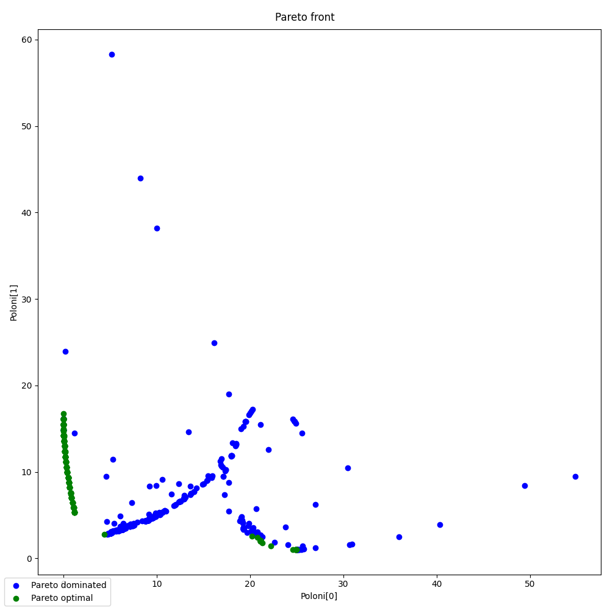

Note
Click here to download the full example code
Multi-objective Poloni example with the mNBI algorithm.¶
In this example, the modified Normal Boundary Intersection (mNBI) algorithm is used to solve the Poloni problem:
It is an interesting one because its Pareto front is discontinuous.
References
Carlo Poloni, Andrea Giurgevich, Luka Onesti, and Valentino Pediroda. Hybridization of a multi-objective genetic algorithm, a neural network and a classical optimizer for a complex design problem in fluid dynamics. Computer Methods in Applied Mechanics and Engineering, 186(2):403-420, 2000.
from __future__ import annotations
from gemseo import execute_algo
from gemseo import execute_post
from gemseo.problems.multiobjective_optimization.poloni import Poloni
from gemseo.settings.opt import MNBI_Settings
Solve the Poloni optimization problem¶
The 10 sub-optimization problems of mNBI are solved with SLSQP, a gradient-based optimization algorithm from the NLOPT library, with a maximum of 50 iterations. The analytic gradients are provided.
opt_problem = Poloni()
algo_settings = MNBI_Settings(
max_iter=10000,
sub_optim_max_iter=50,
n_sub_optim=50,
sub_optim_algo="SLSQP",
)
result = execute_algo(opt_problem, settings_model=algo_settings)
Out:
INFO - 10:26:25: Optimization problem:
INFO - 10:26:25: minimize Poloni
INFO - 10:26:25: with respect to x, y
INFO - 10:26:25: over the design space:
INFO - 10:26:25: +------+--------------------+-------+-------------------+-------+
INFO - 10:26:25: | Name | Lower bound | Value | Upper bound | Type |
INFO - 10:26:25: +------+--------------------+-------+-------------------+-------+
INFO - 10:26:25: | x | -3.141592653589793 | 0 | 3.141592653589793 | float |
INFO - 10:26:25: | y | -3.141592653589793 | 0 | 3.141592653589793 | float |
INFO - 10:26:25: +------+--------------------+-------+-------------------+-------+
INFO - 10:26:25: Solving optimization problem with algorithm MNBI:
INFO - 10:26:25: Searching for the individual optimum of each objective
INFO - 10:26:25: Optimization problem:
INFO - 10:26:25: minimize f_0
INFO - 10:26:25: with respect to x, y
INFO - 10:26:25: over the design space:
INFO - 10:26:25: +------+--------------------+-------+-------------------+-------+
INFO - 10:26:25: | Name | Lower bound | Value | Upper bound | Type |
INFO - 10:26:25: +------+--------------------+-------+-------------------+-------+
INFO - 10:26:25: | x | -3.141592653589793 | 0 | 3.141592653589793 | float |
INFO - 10:26:25: | y | -3.141592653589793 | 0 | 3.141592653589793 | float |
INFO - 10:26:25: +------+--------------------+-------+-------------------+-------+
INFO - 10:26:25: Optimization result:
INFO - 10:26:25: Optimizer info:
INFO - 10:26:25: Status: 8
INFO - 10:26:25: Message: Positive directional derivative for linesearch
INFO - 10:26:25: Solution:
INFO - 10:26:25: Objective: 0.0
INFO - 10:26:25: Design space:
INFO - 10:26:25: +------+--------------------+-------+-------------------+-------+
INFO - 10:26:25: | Name | Lower bound | Value | Upper bound | Type |
INFO - 10:26:25: +------+--------------------+-------+-------------------+-------+
INFO - 10:26:25: | x | -3.141592653589793 | -3 | 3.141592653589793 | float |
INFO - 10:26:25: | y | -3.141592653589793 | -1 | 3.141592653589793 | float |
INFO - 10:26:25: +------+--------------------+-------+-------------------+-------+
INFO - 10:26:25: Optimization problem:
INFO - 10:26:25: minimize f_1
INFO - 10:26:25: with respect to x, y
INFO - 10:26:25: over the design space:
INFO - 10:26:25: +------+--------------------+-------+-------------------+-------+
INFO - 10:26:25: | Name | Lower bound | Value | Upper bound | Type |
INFO - 10:26:25: +------+--------------------+-------+-------------------+-------+
INFO - 10:26:25: | x | -3.141592653589793 | 0 | 3.141592653589793 | float |
INFO - 10:26:25: | y | -3.141592653589793 | 0 | 3.141592653589793 | float |
INFO - 10:26:25: +------+--------------------+-------+-------------------+-------+
INFO - 10:26:25: 1%| | 51/10000 [00:00<00:10, 933.26 it/sec, feas=True, obj=[25.01494445 1.00001327]]
INFO - 10:26:25: 1%| | 52/10000 [00:00<00:10, 928.98 it/sec, feas=True, obj=[24.95104823 1.00006976]]
INFO - 10:26:25: 1%| | 53/10000 [00:00<00:10, 924.11 it/sec, feas=True, obj=[25.00269393 1.00000429]]
INFO - 10:26:25: 1%| | 54/10000 [00:00<00:10, 923.00 it/sec, feas=True, obj=[24.95403311 1.00006534]]
INFO - 10:26:25: 1%| | 55/10000 [00:00<00:10, 919.36 it/sec, feas=True, obj=[24.99510507 1.0000026 ]]
INFO - 10:26:25: Optimization result:
INFO - 10:26:25: Optimizer info:
INFO - 10:26:25: Status: None
INFO - 10:26:25: Message: Maximum number of iterations reached. GEMSEO stopped the driver.
INFO - 10:26:25: Solution:
INFO - 10:26:25: Objective: 1.0000026017399986
INFO - 10:26:25: Design space:
INFO - 10:26:25: +------+--------------------+--------------------+-------------------+-------+
INFO - 10:26:25: | Name | Lower bound | Value | Upper bound | Type |
INFO - 10:26:25: +------+--------------------+--------------------+-------------------+-------+
INFO - 10:26:25: | x | -3.141592653589793 | 0.9993633584557085 | 3.141592653589793 | float |
INFO - 10:26:25: | y | -3.141592653589793 | 2.000032965344246 | 3.141592653589793 | float |
INFO - 10:26:25: +------+--------------------+--------------------+-------------------+-------+
INFO - 10:26:25: Solving mNBI sub-problem for phi_beta = [24.48500088 1.32188699]
INFO - 10:26:25: Optimization problem:
INFO - 10:26:25: minimize -t_extraction
INFO - 10:26:25: with respect to t, x, y
INFO - 10:26:25: under the inequality constraints
INFO - 10:26:25: beta_sub_optim_constraint <= 0.0
INFO - 10:26:25: over the design space:
INFO - 10:26:25: +------+--------------------+-------+-------------------+-------+
INFO - 10:26:25: | Name | Lower bound | Value | Upper bound | Type |
INFO - 10:26:25: +------+--------------------+-------+-------------------+-------+
INFO - 10:26:25: | x | -3.141592653589793 | 0 | 3.141592653589793 | float |
INFO - 10:26:25: | y | -3.141592653589793 | 0 | 3.141592653589793 | float |
INFO - 10:26:25: | t | -inf | 0 | inf | float |
INFO - 10:26:25: +------+--------------------+-------+-------------------+-------+
INFO - 10:26:25: 1%| | 56/10000 [00:00<00:11, 848.14 it/sec, feas=True, obj=[24.97288879 1.00002348]]
INFO - 10:26:25: 1%| | 57/10000 [00:00<00:11, 847.07 it/sec, feas=True, obj=[15.98220845 9.55146811]]
INFO - 10:26:25: 1%| | 58/10000 [00:00<00:11, 849.38 it/sec, feas=True, obj=[ 5.16002311 58.33235712]]
INFO - 10:26:25: 1%| | 59/10000 [00:00<00:11, 847.15 it/sec, feas=True, obj=[12.3430907 8.63451636]]
INFO - 10:26:25: 1%| | 60/10000 [00:00<00:11, 845.60 it/sec, feas=True, obj=[5.46187769 4.04917599]]
INFO - 10:26:25: 1%| | 61/10000 [00:00<00:11, 843.33 it/sec, feas=True, obj=[5.7436751 3.25464365]]
INFO - 10:26:25: 1%| | 62/10000 [00:00<00:11, 845.26 it/sec, feas=True, obj=[6.26254949 3.54819035]]
INFO - 10:26:25: 1%| | 63/10000 [00:00<00:11, 844.55 it/sec, feas=True, obj=[5.91623133 3.21254247]]
INFO - 10:26:25: 1%| | 64/10000 [00:00<00:11, 846.81 it/sec, feas=True, obj=[9.87181235 5.23385438]]
INFO - 10:26:25: 1%| | 65/10000 [00:00<00:11, 848.68 it/sec, feas=True, obj=[6.63609057 3.49499646]]
INFO - 10:26:25: 1%| | 66/10000 [00:00<00:11, 850.71 it/sec, feas=True, obj=[6.0906148 3.27235704]]
INFO - 10:26:25: 1%| | 67/10000 [00:00<00:11, 852.96 it/sec, feas=True, obj=[5.9624891 3.2277787]]
INFO - 10:26:25: 1%| | 68/10000 [00:00<00:11, 854.88 it/sec, feas=True, obj=[5.92880718 3.21663784]]
INFO - 10:26:25: 1%| | 69/10000 [00:00<00:11, 856.90 it/sec, feas=True, obj=[5.91967322 3.21365982]]
INFO - 10:26:25: 1%| | 70/10000 [00:00<00:11, 858.73 it/sec, feas=True, obj=[5.91717507 3.21284857]]
INFO - 10:26:25: 1%| | 71/10000 [00:00<00:11, 860.33 it/sec, feas=True, obj=[5.91649023 3.21262642]]
INFO - 10:26:25: 1%| | 72/10000 [00:00<00:11, 862.49 it/sec, feas=True, obj=[5.91630236 3.2125655 ]]
INFO - 10:26:25: 1%| | 73/10000 [00:00<00:11, 864.49 it/sec, feas=True, obj=[5.91625082 3.21254879]]
INFO - 10:26:25: 1%| | 74/10000 [00:00<00:11, 863.48 it/sec, feas=True, obj=[5.91623668 3.2125442 ]]
INFO - 10:26:25: 1%| | 75/10000 [00:00<00:11, 865.39 it/sec, feas=True, obj=[18.41901872 12.98731899]]
INFO - 10:26:25: 1%| | 76/10000 [00:00<00:11, 867.19 it/sec, feas=True, obj=[7.16408393 3.71573809]]
INFO - 10:26:25: 1%| | 77/10000 [00:00<00:11, 868.75 it/sec, feas=True, obj=[6.20149566 3.31184133]]
INFO - 10:26:25: 1%| | 78/10000 [00:00<00:11, 870.70 it/sec, feas=True, obj=[5.98974359 3.23694411]]
INFO - 10:26:25: 1%| | 79/10000 [00:00<00:11, 872.58 it/sec, feas=True, obj=[5.93580752 3.21895464]]
INFO - 10:26:25: 1%| | 80/10000 [00:00<00:11, 874.28 it/sec, feas=True, obj=[5.92149323 3.21425976]]
INFO - 10:26:25: 1%| | 81/10000 [00:00<00:11, 875.78 it/sec, feas=True, obj=[5.91765188 3.21300562]]
INFO - 10:26:25: 1%| | 82/10000 [00:00<00:11, 876.39 it/sec, feas=True, obj=[5.91661793 3.21266847]]
INFO - 10:26:25: 1%| | 83/10000 [00:00<00:11, 877.99 it/sec, feas=True, obj=[5.9163394 3.21257768]]
INFO - 10:26:25: 1%| | 84/10000 [00:00<00:11, 879.35 it/sec, feas=True, obj=[5.91626436 3.21255322]]
INFO - 10:26:25: 1%| | 85/10000 [00:00<00:11, 877.89 it/sec, feas=True, obj=[5.91624414 3.21254663]]
INFO - 10:26:25: 1%| | 86/10000 [00:00<00:11, 879.38 it/sec, feas=True, obj=[18.48586798 13.17712705]]
INFO - 10:26:25: 1%| | 87/10000 [00:00<00:11, 880.75 it/sec, feas=True, obj=[7.15765935 3.70808447]]
INFO - 10:26:25: 1%| | 88/10000 [00:00<00:11, 882.29 it/sec, feas=True, obj=[6.20287595 3.31209356]]
INFO - 10:26:25: 1%| | 89/10000 [00:00<00:11, 883.55 it/sec, feas=True, obj=[5.99053264 3.23720771]]
INFO - 10:26:25: 1%| | 90/10000 [00:00<00:11, 879.61 it/sec, feas=True, obj=[5.93611838 3.21906079]]
INFO - 10:26:25: 1%| | 91/10000 [00:00<00:11, 880.68 it/sec, feas=True, obj=[5.92160676 3.21429823]]
INFO - 10:26:25: 1%| | 92/10000 [00:00<00:11, 881.72 it/sec, feas=True, obj=[5.91769447 3.21301991]]
INFO - 10:26:25: 1%| | 93/10000 [00:00<00:11, 882.99 it/sec, feas=True, obj=[5.91663663 3.21267468]]
INFO - 10:26:25: 1%| | 94/10000 [00:00<00:11, 884.14 it/sec, feas=True, obj=[5.91635037 3.21258129]]
INFO - 10:26:25: 1%| | 95/10000 [00:00<00:11, 885.42 it/sec, feas=True, obj=[5.91627289 3.21255601]]
INFO - 10:26:25: 1%| | 96/10000 [00:00<00:11, 884.10 it/sec, feas=True, obj=[5.91625192 3.21254917]]
INFO - 10:26:25: 1%| | 97/10000 [00:00<00:11, 885.37 it/sec, feas=True, obj=[18.49775298 13.21074686]]
INFO - 10:26:25: 1%| | 98/10000 [00:00<00:11, 886.16 it/sec, feas=True, obj=[7.16026597 3.70845237]]
INFO - 10:26:25: 1%| | 99/10000 [00:00<00:11, 887.04 it/sec, feas=True, obj=[6.20470714 3.31272121]]
INFO - 10:26:25: 1%| | 100/10000 [00:00<00:11, 888.15 it/sec, feas=True, obj=[5.99128707 3.23746195]]
INFO - 10:26:25: 1%| | 101/10000 [00:00<00:11, 889.13 it/sec, feas=True, obj=[5.93639865 3.21915377]]
INFO - 10:26:25: 1%| | 102/10000 [00:00<00:11, 890.25 it/sec, feas=True, obj=[5.92170787 3.21433154]]
INFO - 10:26:25: 1%| | 103/10000 [00:00<00:11, 890.62 it/sec, feas=True, obj=[5.91773289 3.21303252]]
INFO - 10:26:25: 1%| | 104/10000 [00:00<00:11, 891.50 it/sec, feas=True, obj=[5.91665417 3.21268042]]
WARNING - 10:26:25: Optimization found no feasible point; the least infeasible point is selected.
INFO - 10:26:25: Optimization result:
INFO - 10:26:25: Optimizer info:
INFO - 10:26:25: Status: None
INFO - 10:26:25: Message: Maximum number of iterations reached. GEMSEO stopped the driver.
INFO - 10:26:25: Solution:
WARNING - 10:26:25: The solution is not feasible.
INFO - 10:26:25: Objective: 0.1287538299674853
INFO - 10:26:25: Standardized constraints:
INFO - 10:26:25: beta_sub_optim_constraint = [-22.2413387 0.69654043]
INFO - 10:26:25: Design space:
INFO - 10:26:25: +------+--------------------+---------------------+-------------------+-------+
INFO - 10:26:25: | Name | Lower bound | Value | Upper bound | Type |
INFO - 10:26:25: +------+--------------------+---------------------+-------------------+-------+
INFO - 10:26:25: | x | -3.141592653589793 | -3.141592653589793 | 3.141592653589793 | float |
INFO - 10:26:25: | y | -3.141592653589793 | 1.332772858992157 | 3.141592653589793 | float |
INFO - 10:26:25: | t | -inf | -0.1287538299674853 | inf | float |
INFO - 10:26:25: +------+--------------------+---------------------+-------------------+-------+
WARNING - 10:26:25: No feasible optimum has been found for phi_beta = [24.48500088 1.32188699]
INFO - 10:26:25: Solving mNBI sub-problem for phi_beta = [23.9748967 1.64377138]
INFO - 10:26:25: Optimization problem:
INFO - 10:26:25: minimize -t_extraction
INFO - 10:26:25: with respect to t, x, y
INFO - 10:26:25: under the inequality constraints
INFO - 10:26:25: beta_sub_optim_constraint <= 0.0
INFO - 10:26:25: over the design space:
INFO - 10:26:25: +------+--------------------+---------------------+-------------------+-------+
INFO - 10:26:25: | Name | Lower bound | Value | Upper bound | Type |
INFO - 10:26:25: +------+--------------------+---------------------+-------------------+-------+
INFO - 10:26:25: | x | -3.141592653589793 | -3.141592653589793 | 3.141592653589793 | float |
INFO - 10:26:25: | y | -3.141592653589793 | 1.332772858992157 | 3.141592653589793 | float |
INFO - 10:26:25: | t | -inf | -0.1287538299674853 | inf | float |
INFO - 10:26:25: +------+--------------------+---------------------+-------------------+-------+
INFO - 10:26:25: 1%| | 105/10000 [00:00<00:11, 835.05 it/sec, feas=True, obj=[5.9163612 3.21258482]]
INFO - 10:26:25: 1%| | 106/10000 [00:00<00:11, 836.18 it/sec, feas=True, obj=[ 8.26118842 44.00575546]]
INFO - 10:26:25: 1%| | 107/10000 [00:00<00:11, 833.07 it/sec, feas=True, obj=[4.69392334 2.78869326]]
INFO - 10:26:25: 1%| | 108/10000 [00:00<00:11, 832.45 it/sec, feas=True, obj=[21.11558233 15.44348693]]
INFO - 10:26:25: 1%| | 109/10000 [00:00<00:11, 832.32 it/sec, feas=True, obj=[5.64528048 3.14407898]]
INFO - 10:26:25: 1%| | 110/10000 [00:00<00:11, 833.55 it/sec, feas=True, obj=[4.90595272 2.8756492 ]]
INFO - 10:26:25: 1%| | 111/10000 [00:00<00:11, 832.66 it/sec, feas=True, obj=[4.75958961 2.81623392]]
INFO - 10:26:25: 1%| | 112/10000 [00:00<00:11, 833.83 it/sec, feas=True, obj=[24.59703216 16.12093608]]
INFO - 10:26:25: 1%| | 113/10000 [00:00<00:11, 835.00 it/sec, feas=True, obj=[5.83366704 3.19586333]]
INFO - 10:26:25: 1%| | 114/10000 [00:00<00:11, 836.26 it/sec, feas=True, obj=[4.9821957 2.90339158]]
INFO - 10:26:25: 1%| | 115/10000 [00:00<00:11, 837.39 it/sec, feas=True, obj=[4.80776475 2.83566411]]
INFO - 10:26:25: 1%| | 116/10000 [00:00<00:11, 838.25 it/sec, feas=True, obj=[4.77009103 2.82049821]]
INFO - 10:26:25: 1%| | 117/10000 [00:00<00:11, 839.08 it/sec, feas=True, obj=[4.76188227 2.81716628]]
INFO - 10:26:25: 1%| | 118/10000 [00:00<00:11, 840.18 it/sec, feas=True, obj=[4.76009031 2.8164376 ]]
INFO - 10:26:25: 1%| | 119/10000 [00:00<00:11, 841.01 it/sec, feas=True, obj=[4.75969897 2.81627841]]
INFO - 10:26:25: 1%| | 120/10000 [00:00<00:11, 841.93 it/sec, feas=True, obj=[4.7596135 2.81624363]]
INFO - 10:26:25: 1%| | 121/10000 [00:00<00:11, 843.06 it/sec, feas=True, obj=[4.75959483 2.81623604]]
INFO - 10:26:25: 1%| | 122/10000 [00:00<00:11, 841.95 it/sec, feas=True, obj=[4.75959075 2.81623438]]
INFO - 10:26:25: 1%| | 123/10000 [00:00<00:11, 842.95 it/sec, feas=True, obj=[24.75640509 15.87296744]]
INFO - 10:26:25: 1%| | 124/10000 [00:00<00:11, 844.05 it/sec, feas=True, obj=[5.83649203 3.19561375]]
INFO - 10:26:25: 1%|▏ | 125/10000 [00:00<00:11, 844.99 it/sec, feas=True, obj=[4.98237522 2.9031819 ]]
INFO - 10:26:25: 1%|▏ | 126/10000 [00:00<00:11, 845.90 it/sec, feas=True, obj=[4.80777625 2.8356146 ]]
INFO - 10:26:25: 1%|▏ | 127/10000 [00:00<00:11, 846.73 it/sec, feas=True, obj=[4.77008889 2.82048594]]
INFO - 10:26:25: 1%|▏ | 128/10000 [00:00<00:11, 847.52 it/sec, feas=True, obj=[4.76188149 2.8171635 ]]
INFO - 10:26:25: 1%|▏ | 129/10000 [00:00<00:11, 848.38 it/sec, feas=True, obj=[4.76009077 2.81643725]]
INFO - 10:26:25: 1%|▏ | 130/10000 [00:00<00:11, 849.26 it/sec, feas=True, obj=[4.7596999 2.81627867]]
INFO - 10:26:25: 1%|▏ | 131/10000 [00:00<00:11, 850.18 it/sec, feas=True, obj=[4.75961458 2.81624405]]
INFO - 10:26:25: 1%|▏ | 132/10000 [00:00<00:11, 850.58 it/sec, feas=True, obj=[4.75959595 2.81623649]]
INFO - 10:26:25: 1%|▏ | 133/10000 [00:00<00:11, 849.36 it/sec, feas=True, obj=[4.75959189 2.81623484]]
INFO - 10:26:25: 1%|▏ | 134/10000 [00:00<00:11, 850.03 it/sec, feas=True, obj=[24.78099704 15.83399368]]
INFO - 10:26:25: 1%|▏ | 135/10000 [00:00<00:11, 851.02 it/sec, feas=True, obj=[5.83692784 3.19558205]]
INFO - 10:26:25: 1%|▏ | 136/10000 [00:00<00:11, 851.76 it/sec, feas=True, obj=[4.98240991 2.9031527 ]]
INFO - 10:26:25: 1%|▏ | 137/10000 [00:00<00:11, 852.55 it/sec, feas=True, obj=[4.80778197 2.83560861]]
INFO - 10:26:25: 1%|▏ | 138/10000 [00:00<00:11, 853.09 it/sec, feas=True, obj=[4.77009055 2.82048486]]
INFO - 10:26:25: 1%|▏ | 139/10000 [00:00<00:11, 853.27 it/sec, feas=True, obj=[4.76188264 2.81716358]]
INFO - 10:26:25: 1%|▏ | 140/10000 [00:00<00:11, 854.08 it/sec, feas=True, obj=[4.76009188 2.81643762]]
INFO - 10:26:25: 1%|▏ | 141/10000 [00:00<00:11, 854.29 it/sec, feas=True, obj=[4.75970103 2.81627911]]
INFO - 10:26:25: 1%|▏ | 142/10000 [00:00<00:11, 854.84 it/sec, feas=True, obj=[4.75961571 2.8162445 ]]
INFO - 10:26:25: 1%|▏ | 143/10000 [00:00<00:11, 855.71 it/sec, feas=True, obj=[4.75959709 2.81623695]]
INFO - 10:26:25: 1%|▏ | 144/10000 [00:00<00:11, 854.74 it/sec, feas=True, obj=[4.75959302 2.8162353 ]]
INFO - 10:26:25: 1%|▏ | 145/10000 [00:00<00:11, 855.33 it/sec, feas=True, obj=[24.78315718 15.83056145]]
INFO - 10:26:25: 1%|▏ | 146/10000 [00:00<00:11, 855.94 it/sec, feas=True, obj=[5.83696723 3.19557971]]
INFO - 10:26:25: 1%|▏ | 147/10000 [00:00<00:11, 856.58 it/sec, feas=True, obj=[4.98241639 2.90315143]]
INFO - 10:26:25: 1%|▏ | 148/10000 [00:00<00:11, 857.36 it/sec, feas=True, obj=[4.80778453 2.8356089 ]]
INFO - 10:26:25: 1%|▏ | 149/10000 [00:00<00:11, 857.39 it/sec, feas=True, obj=[4.77009207 2.82048532]]
INFO - 10:26:25: 2%|▏ | 150/10000 [00:00<00:11, 858.18 it/sec, feas=True, obj=[4.76188387 2.81716405]]
INFO - 10:26:25: 2%|▏ | 151/10000 [00:00<00:11, 858.80 it/sec, feas=True, obj=[4.76009304 2.81643809]]
INFO - 10:26:25: 2%|▏ | 152/10000 [00:00<00:11, 859.53 it/sec, feas=True, obj=[4.75970217 2.81627957]]
INFO - 10:26:25: 2%|▏ | 153/10000 [00:00<00:11, 860.20 it/sec, feas=True, obj=[4.75961685 2.81624496]]
INFO - 10:26:25: Optimization result:
INFO - 10:26:25: Optimizer info:
INFO - 10:26:25: Status: None
INFO - 10:26:25: Message: Maximum number of iterations reached. GEMSEO stopped the driver.
INFO - 10:26:25: Solution:
INFO - 10:26:25: The solution is feasible.
INFO - 10:26:25: Objective: 0.07558728376658524
INFO - 10:26:25: Standardized constraints:
INFO - 10:26:25: beta_sub_optim_constraint = [-21.17028546 -0.04726609]
INFO - 10:26:25: Design space:
INFO - 10:26:25: +------+--------------------+----------------------+-------------------+-------+
INFO - 10:26:25: | Name | Lower bound | Value | Upper bound | Type |
INFO - 10:26:25: +------+--------------------+----------------------+-------------------+-------+
INFO - 10:26:25: | x | -3.141592653589793 | -2.780389247503046 | 3.141592653589793 | float |
INFO - 10:26:25: | y | -3.141592653589793 | 1.155387309211172 | 3.141592653589793 | float |
INFO - 10:26:25: | t | -inf | -0.07558728376658524 | inf | float |
INFO - 10:26:25: +------+--------------------+----------------------+-------------------+-------+
INFO - 10:26:25: Solving mNBI sub-problem for phi_beta = [23.46479251 1.96565578]
INFO - 10:26:25: Optimization problem:
INFO - 10:26:25: minimize -t_extraction
INFO - 10:26:25: with respect to t, x, y
INFO - 10:26:25: under the inequality constraints
INFO - 10:26:25: beta_sub_optim_constraint <= 0.0
INFO - 10:26:25: over the design space:
INFO - 10:26:25: +------+--------------------+----------------------+-------------------+-------+
INFO - 10:26:25: | Name | Lower bound | Value | Upper bound | Type |
INFO - 10:26:25: +------+--------------------+----------------------+-------------------+-------+
INFO - 10:26:25: | x | -3.141592653589793 | -2.780389247503046 | 3.141592653589793 | float |
INFO - 10:26:25: | y | -3.141592653589793 | 1.155387309211172 | 3.141592653589793 | float |
INFO - 10:26:25: | t | -inf | -0.07558728376658524 | inf | float |
INFO - 10:26:25: +------+--------------------+----------------------+-------------------+-------+
INFO - 10:26:25: 2%|▏ | 154/10000 [00:00<00:11, 824.88 it/sec, feas=True, obj=[4.75959822 2.81623741]]
INFO - 10:26:25: 2%|▏ | 155/10000 [00:00<00:11, 825.89 it/sec, feas=True, obj=[17.41207192 10.24348169]]
INFO - 10:26:25: 2%|▏ | 156/10000 [00:00<00:11, 825.73 it/sec, feas=True, obj=[6.41645032 4.02617341]]
INFO - 10:26:25: 2%|▏ | 157/10000 [00:00<00:11, 824.19 it/sec, feas=True, obj=[5.0793091 3.00828195]]
INFO - 10:26:25: 2%|▏ | 158/10000 [00:00<00:11, 824.18 it/sec, feas=True, obj=[18.01518961 11.83180067]]
INFO - 10:26:25: 2%|▏ | 159/10000 [00:00<00:11, 823.94 it/sec, feas=True, obj=[6.12094321 3.6615491 ]]
INFO - 10:26:25: 2%|▏ | 160/10000 [00:00<00:11, 824.93 it/sec, feas=True, obj=[5.23377261 3.09964047]]
INFO - 10:26:25: 2%|▏ | 161/10000 [00:00<00:11, 824.59 it/sec, feas=True, obj=[5.10845431 3.0252821 ]]
INFO - 10:26:25: 2%|▏ | 162/10000 [00:00<00:11, 825.60 it/sec, feas=True, obj=[18.02333284 11.85494193]]
INFO - 10:26:25: 2%|▏ | 163/10000 [00:00<00:11, 826.63 it/sec, feas=True, obj=[6.14305904 3.67474665]]
INFO - 10:26:25: 2%|▏ | 164/10000 [00:00<00:11, 827.27 it/sec, feas=True, obj=[5.25810018 3.11419705]]
INFO - 10:26:25: 2%|▏ | 165/10000 [00:00<00:11, 828.25 it/sec, feas=True, obj=[5.13242841 3.03933909]]
INFO - 10:26:25: 2%|▏ | 166/10000 [00:00<00:11, 829.24 it/sec, feas=True, obj=[5.11236729 3.02757123]]
INFO - 10:26:25: 2%|▏ | 167/10000 [00:00<00:11, 830.30 it/sec, feas=True, obj=[5.10909495 3.02565674]]
INFO - 10:26:25: 2%|▏ | 168/10000 [00:00<00:11, 831.21 it/sec, feas=True, obj=[5.10855925 3.02534347]]
INFO - 10:26:25: 2%|▏ | 169/10000 [00:00<00:11, 832.23 it/sec, feas=True, obj=[5.1084715 3.02529215]]
INFO - 10:26:25: 2%|▏ | 170/10000 [00:00<00:11, 832.94 it/sec, feas=True, obj=[5.10845713 3.02528375]]
INFO - 10:26:25: 2%|▏ | 171/10000 [00:00<00:11, 833.89 it/sec, feas=True, obj=[5.10845477 3.02528237]]
INFO - 10:26:25: 2%|▏ | 172/10000 [00:00<00:11, 833.52 it/sec, feas=True, obj=[5.10845439 3.02528215]]
INFO - 10:26:25: 2%|▏ | 173/10000 [00:00<00:11, 834.31 it/sec, feas=True, obj=[18.02388311 11.85650641]]
INFO - 10:26:25: 2%|▏ | 174/10000 [00:00<00:11, 835.16 it/sec, feas=True, obj=[6.1422146 3.67412033]]
INFO - 10:26:25: 2%|▏ | 175/10000 [00:00<00:11, 836.02 it/sec, feas=True, obj=[5.2578993 3.11406938]]
INFO - 10:26:25: 2%|▏ | 176/10000 [00:00<00:11, 836.90 it/sec, feas=True, obj=[5.13238184 3.0393108 ]]
INFO - 10:26:25: 2%|▏ | 177/10000 [00:00<00:11, 837.78 it/sec, feas=True, obj=[5.11235729 3.02756523]]
INFO - 10:26:25: 2%|▏ | 178/10000 [00:00<00:11, 838.40 it/sec, feas=True, obj=[5.10909297 3.02565556]]
INFO - 10:26:25: 2%|▏ | 179/10000 [00:00<00:11, 839.15 it/sec, feas=True, obj=[5.10855892 3.02534327]]
INFO - 10:26:25: 2%|▏ | 180/10000 [00:00<00:11, 840.01 it/sec, feas=True, obj=[5.1084715 3.02529215]]
INFO - 10:26:25: 2%|▏ | 181/10000 [00:00<00:11, 841.00 it/sec, feas=True, obj=[5.10845719 3.02528378]]
INFO - 10:26:25: 2%|▏ | 182/10000 [00:00<00:11, 841.79 it/sec, feas=True, obj=[5.10845485 3.02528241]]
INFO - 10:26:25: 2%|▏ | 183/10000 [00:00<00:11, 841.23 it/sec, feas=True, obj=[5.10845446 3.02528219]]
INFO - 10:26:25: 2%|▏ | 184/10000 [00:00<00:11, 842.05 it/sec, feas=True, obj=[18.0239024 11.85657289]]
INFO - 10:26:25: 2%|▏ | 185/10000 [00:00<00:11, 842.88 it/sec, feas=True, obj=[6.14200438 3.6739802 ]]
INFO - 10:26:25: 2%|▏ | 186/10000 [00:00<00:11, 843.72 it/sec, feas=True, obj=[5.25784395 3.11403568]]
INFO - 10:26:25: 2%|▏ | 187/10000 [00:00<00:11, 844.57 it/sec, feas=True, obj=[5.13236875 3.03930306]]
INFO - 10:26:25: 2%|▏ | 188/10000 [00:00<00:11, 845.32 it/sec, feas=True, obj=[5.1123545 3.02756359]]
INFO - 10:26:25: 2%|▏ | 189/10000 [00:00<00:11, 846.12 it/sec, feas=True, obj=[5.10909246 3.02565526]]
INFO - 10:26:25: 2%|▏ | 190/10000 [00:00<00:11, 846.91 it/sec, feas=True, obj=[5.10855888 3.02534325]]
INFO - 10:26:25: 2%|▏ | 191/10000 [00:00<00:11, 847.73 it/sec, feas=True, obj=[5.10847155 3.02529218]]
INFO - 10:26:25: 2%|▏ | 192/10000 [00:00<00:11, 848.41 it/sec, feas=True, obj=[5.10845726 3.02528383]]
INFO - 10:26:25: 2%|▏ | 193/10000 [00:00<00:11, 849.27 it/sec, feas=True, obj=[5.10845492 3.02528246]]
INFO - 10:26:25: 2%|▏ | 194/10000 [00:00<00:11, 848.82 it/sec, feas=True, obj=[5.10845454 3.02528223]]
INFO - 10:26:25: 2%|▏ | 195/10000 [00:00<00:11, 849.34 it/sec, feas=True, obj=[18.02214894 11.85421979]]
INFO - 10:26:25: 2%|▏ | 196/10000 [00:00<00:11, 850.11 it/sec, feas=True, obj=[6.14198556 3.67396783]]
INFO - 10:26:25: 2%|▏ | 197/10000 [00:00<00:11, 850.90 it/sec, feas=True, obj=[5.25783548 3.11403056]]
INFO - 10:26:25: 2%|▏ | 198/10000 [00:00<00:11, 851.65 it/sec, feas=True, obj=[5.13236652 3.03930175]]
INFO - 10:26:25: 2%|▏ | 199/10000 [00:00<00:11, 852.32 it/sec, feas=True, obj=[5.11235404 3.02756332]]
INFO - 10:26:25: 2%|▏ | 200/10000 [00:00<00:11, 852.99 it/sec, feas=True, obj=[5.10909242 3.02565523]]
INFO - 10:26:25: 2%|▏ | 201/10000 [00:00<00:11, 853.71 it/sec, feas=True, obj=[5.10855894 3.02534328]]
INFO - 10:26:25: 2%|▏ | 202/10000 [00:00<00:11, 854.41 it/sec, feas=True, obj=[5.10847163 3.02529222]]
INFO - 10:26:25: Optimization result:
INFO - 10:26:25: Optimizer info:
INFO - 10:26:25: Status: None
INFO - 10:26:25: Message: Maximum number of iterations reached. GEMSEO stopped the driver.
INFO - 10:26:25: Solution:
INFO - 10:26:25: The solution is feasible.
INFO - 10:26:25: Objective: 0.0673616171539137
INFO - 10:26:25: Standardized constraints:
INFO - 10:26:25: beta_sub_optim_constraint = [-2.00691941e+01 -1.98238320e-02]
INFO - 10:26:25: Design space:
INFO - 10:26:25: +------+--------------------+---------------------+-------------------+-------+
INFO - 10:26:25: | Name | Lower bound | Value | Upper bound | Type |
INFO - 10:26:25: +------+--------------------+---------------------+-------------------+-------+
INFO - 10:26:25: | x | -3.141592653589793 | -2.767799311088018 | 3.141592653589793 | float |
INFO - 10:26:25: | y | -3.141592653589793 | 1.241738597946052 | 3.141592653589793 | float |
INFO - 10:26:25: | t | -inf | -0.0673616171539137 | inf | float |
INFO - 10:26:25: +------+--------------------+---------------------+-------------------+-------+
INFO - 10:26:25: Solving mNBI sub-problem for phi_beta = [22.95468833 2.28754017]
INFO - 10:26:25: Optimization problem:
INFO - 10:26:25: minimize -t_extraction
INFO - 10:26:25: with respect to t, x, y
INFO - 10:26:25: under the inequality constraints
INFO - 10:26:25: beta_sub_optim_constraint <= 0.0
INFO - 10:26:25: over the design space:
INFO - 10:26:25: +------+--------------------+---------------------+-------------------+-------+
INFO - 10:26:25: | Name | Lower bound | Value | Upper bound | Type |
INFO - 10:26:25: +------+--------------------+---------------------+-------------------+-------+
INFO - 10:26:25: | x | -3.141592653589793 | -2.767799311088018 | 3.141592653589793 | float |
INFO - 10:26:25: | y | -3.141592653589793 | 1.241738597946052 | 3.141592653589793 | float |
INFO - 10:26:25: | t | -inf | -0.0673616171539137 | inf | float |
INFO - 10:26:25: +------+--------------------+---------------------+-------------------+-------+
INFO - 10:26:25: 2%|▏ | 203/10000 [00:00<00:11, 826.87 it/sec, feas=True, obj=[5.10845733 3.02528387]]
INFO - 10:26:25: 2%|▏ | 204/10000 [00:00<00:11, 827.77 it/sec, feas=True, obj=[20.29234658 17.24583245]]
INFO - 10:26:25: 2%|▏ | 205/10000 [00:00<00:11, 827.68 it/sec, feas=True, obj=[6.41146987 3.58911351]]
INFO - 10:26:25: 2%|▏ | 206/10000 [00:00<00:11, 827.40 it/sec, feas=True, obj=[5.62767493 3.26263236]]
INFO - 10:26:25: 2%|▏ | 207/10000 [00:00<00:11, 828.21 it/sec, feas=True, obj=[30.91672108 1.63422626]]
INFO - 10:26:25: 2%|▏ | 208/10000 [00:00<00:11, 828.94 it/sec, feas=True, obj=[13.60760165 8.31881893]]
INFO - 10:26:25: 2%|▏ | 209/10000 [00:00<00:11, 829.79 it/sec, feas=True, obj=[7.19772115 3.73274512]]
INFO - 10:26:25: 2%|▏ | 210/10000 [00:00<00:11, 829.51 it/sec, feas=True, obj=[6.35416378 3.36500282]]
INFO - 10:26:25: 2%|▏ | 211/10000 [00:00<00:11, 830.27 it/sec, feas=True, obj=[19.28076356 15.27380978]]
INFO - 10:26:25: 2%|▏ | 212/10000 [00:00<00:11, 829.09 it/sec, feas=True, obj=[7.6249889 3.86216354]]
INFO - 10:26:25: 2%|▏ | 213/10000 [00:00<00:11, 829.49 it/sec, feas=True, obj=[6.69217925 3.49073283]]
INFO - 10:26:25: 2%|▏ | 214/10000 [00:00<00:11, 830.13 it/sec, feas=True, obj=[6.45061224 3.40027039]]
INFO - 10:26:25: 2%|▏ | 215/10000 [00:00<00:11, 830.79 it/sec, feas=True, obj=[6.3822566 3.37522136]]
INFO - 10:26:25: 2%|▏ | 216/10000 [00:00<00:11, 831.47 it/sec, feas=True, obj=[6.36239621 3.3679926 ]]
INFO - 10:26:25: 2%|▏ | 217/10000 [00:00<00:11, 832.12 it/sec, feas=True, obj=[6.35658055 3.36588011]]
INFO - 10:26:25: 2%|▏ | 218/10000 [00:00<00:11, 832.74 it/sec, feas=True, obj=[6.35487363 3.36526046]]
INFO - 10:26:25: 2%|▏ | 219/10000 [00:00<00:11, 833.33 it/sec, feas=True, obj=[6.35437231 3.3650785 ]]
INFO - 10:26:25: 2%|▏ | 220/10000 [00:00<00:11, 834.03 it/sec, feas=True, obj=[6.35422504 3.36502505]]
INFO - 10:26:25: 2%|▏ | 221/10000 [00:00<00:11, 833.68 it/sec, feas=True, obj=[6.35418178 3.36500935]]
INFO - 10:26:25: 2%|▏ | 222/10000 [00:00<00:11, 834.35 it/sec, feas=True, obj=[19.52227531 15.82586565]]
INFO - 10:26:25: 2%|▏ | 223/10000 [00:00<00:11, 835.00 it/sec, feas=True, obj=[7.43337011 3.77550161]]
INFO - 10:26:25: 2%|▏ | 224/10000 [00:00<00:11, 835.76 it/sec, feas=True, obj=[6.61012592 3.45860329]]
INFO - 10:26:25: 2%|▏ | 225/10000 [00:00<00:11, 836.51 it/sec, feas=True, obj=[6.41872298 3.38834692]]
INFO - 10:26:25: 2%|▏ | 226/10000 [00:00<00:11, 837.17 it/sec, feas=True, obj=[6.37071383 3.37096932]]
INFO - 10:26:25: 2%|▏ | 227/10000 [00:00<00:11, 837.95 it/sec, feas=True, obj=[6.35843353 3.36654096]]
INFO - 10:26:25: 2%|▏ | 228/10000 [00:00<00:11, 838.63 it/sec, feas=True, obj=[6.35527639 3.36540358]]
INFO - 10:26:25: 2%|▏ | 229/10000 [00:00<00:11, 839.29 it/sec, feas=True, obj=[6.35446366 3.36511087]]
INFO - 10:26:25: 2%|▏ | 230/10000 [00:00<00:11, 839.89 it/sec, feas=True, obj=[6.35425438 3.3650355 ]]
INFO - 10:26:25: 2%|▏ | 231/10000 [00:00<00:11, 840.53 it/sec, feas=True, obj=[6.35420048 3.36501609]]
INFO - 10:26:25: 2%|▏ | 232/10000 [00:00<00:11, 840.18 it/sec, feas=True, obj=[6.3541866 3.36501109]]
INFO - 10:26:25: 2%|▏ | 233/10000 [00:00<00:11, 840.92 it/sec, feas=True, obj=[19.53527891 15.8542317 ]]
INFO - 10:26:25: 2%|▏ | 234/10000 [00:00<00:11, 841.54 it/sec, feas=True, obj=[7.42416126 3.7714547 ]]
INFO - 10:26:26: 2%|▏ | 235/10000 [00:00<00:11, 842.18 it/sec, feas=True, obj=[6.60627501 3.45712153]]
INFO - 10:26:26: 2%|▏ | 236/10000 [00:00<00:11, 842.79 it/sec, feas=True, obj=[6.41730966 3.38782359]]
INFO - 10:26:26: 2%|▏ | 237/10000 [00:00<00:11, 843.45 it/sec, feas=True, obj=[6.37023829 3.3707953 ]]
INFO - 10:26:26: 2%|▏ | 238/10000 [00:00<00:11, 844.02 it/sec, feas=True, obj=[6.35828454 3.36648667]]
INFO - 10:26:26: 2%|▏ | 239/10000 [00:00<00:11, 842.37 it/sec, feas=True, obj=[6.35523384 3.36538811]]
INFO - 10:26:26: 2%|▏ | 240/10000 [00:00<00:11, 842.73 it/sec, feas=True, obj=[6.35445429 3.36510746]]
INFO - 10:26:26: 2%|▏ | 241/10000 [00:00<00:11, 843.24 it/sec, feas=True, obj=[6.35425503 3.36503572]]
INFO - 10:26:26: 2%|▏ | 242/10000 [00:00<00:11, 843.66 it/sec, feas=True, obj=[6.35420409 3.36501738]]
INFO - 10:26:26: 2%|▏ | 243/10000 [00:00<00:11, 843.23 it/sec, feas=True, obj=[6.35419107 3.3650127 ]]
INFO - 10:26:26: 2%|▏ | 244/10000 [00:00<00:11, 843.70 it/sec, feas=True, obj=[19.53680798 15.85755783]]
INFO - 10:26:26: 2%|▏ | 245/10000 [00:00<00:11, 844.18 it/sec, feas=True, obj=[7.42238684 3.77070542]]
INFO - 10:26:26: 2%|▏ | 246/10000 [00:00<00:11, 844.59 it/sec, feas=True, obj=[6.60547717 3.45681968]]
INFO - 10:26:26: 2%|▏ | 247/10000 [00:00<00:11, 843.76 it/sec, feas=True, obj=[6.4170133 3.38771487]]
INFO - 10:26:26: 2%|▏ | 248/10000 [00:00<00:11, 843.12 it/sec, feas=True, obj=[6.37014021 3.37075964]]
INFO - 10:26:26: 2%|▏ | 249/10000 [00:00<00:11, 843.51 it/sec, feas=True, obj=[6.35825613 3.36647637]]
INFO - 10:26:26: 2%|▎ | 250/10000 [00:00<00:11, 843.81 it/sec, feas=True, obj=[6.35522819 3.36538605]]
INFO - 10:26:26: 3%|▎ | 251/10000 [00:00<00:11, 844.25 it/sec, feas=True, obj=[6.35445574 3.36510797]]
INFO - 10:26:26: Optimization result:
INFO - 10:26:26: Optimizer info:
INFO - 10:26:26: Status: None
INFO - 10:26:26: Message: Maximum number of iterations reached. GEMSEO stopped the driver.
INFO - 10:26:26: Solution:
INFO - 10:26:26: The solution is feasible.
INFO - 10:26:26: Objective: 0.0673616171539137
INFO - 10:26:26: Standardized constraints:
INFO - 10:26:26: beta_sub_optim_constraint = [-19.55908992 -0.34170822]
INFO - 10:26:26: Design space:
INFO - 10:26:26: +------+--------------------+---------------------+-------------------+-------+
INFO - 10:26:26: | Name | Lower bound | Value | Upper bound | Type |
INFO - 10:26:26: +------+--------------------+---------------------+-------------------+-------+
INFO - 10:26:26: | x | -3.141592653589793 | -2.767799311088018 | 3.141592653589793 | float |
INFO - 10:26:26: | y | -3.141592653589793 | 1.241738597946052 | 3.141592653589793 | float |
INFO - 10:26:26: | t | -inf | -0.0673616171539137 | inf | float |
INFO - 10:26:26: +------+--------------------+---------------------+-------------------+-------+
INFO - 10:26:26: Solving mNBI sub-problem for phi_beta = [22.44458414 2.60942456]
INFO - 10:26:26: Optimization problem:
INFO - 10:26:26: minimize -t_extraction
INFO - 10:26:26: with respect to t, x, y
INFO - 10:26:26: under the inequality constraints
INFO - 10:26:26: beta_sub_optim_constraint <= 0.0
INFO - 10:26:26: over the design space:
INFO - 10:26:26: +------+--------------------+---------------------+-------------------+-------+
INFO - 10:26:26: | Name | Lower bound | Value | Upper bound | Type |
INFO - 10:26:26: +------+--------------------+---------------------+-------------------+-------+
INFO - 10:26:26: | x | -3.141592653589793 | -2.767799311088018 | 3.141592653589793 | float |
INFO - 10:26:26: | y | -3.141592653589793 | 1.241738597946052 | 3.141592653589793 | float |
INFO - 10:26:26: | t | -inf | -0.0673616171539137 | inf | float |
INFO - 10:26:26: +------+--------------------+---------------------+-------------------+-------+
INFO - 10:26:26: 3%|▎ | 252/10000 [00:00<00:11, 819.57 it/sec, feas=True, obj=[6.35425862 3.36503701]]
INFO - 10:26:26: 3%|▎ | 253/10000 [00:00<00:11, 820.06 it/sec, feas=True, obj=[20.1627419 17.04505875]]
INFO - 10:26:26: 3%|▎ | 254/10000 [00:00<00:11, 819.06 it/sec, feas=True, obj=[6.58466099 3.66654996]]
INFO - 10:26:26: 3%|▎ | 255/10000 [00:00<00:11, 818.72 it/sec, feas=True, obj=[25.62308386 1.42977727]]
INFO - 10:26:26: 3%|▎ | 256/10000 [00:00<00:11, 819.12 it/sec, feas=True, obj=[26.99698406 6.25589586]]
INFO - 10:26:26: 3%|▎ | 257/10000 [00:00<00:11, 819.67 it/sec, feas=True, obj=[20.63888352 5.76348791]]
INFO - 10:26:26: 3%|▎ | 258/10000 [00:00<00:11, 819.46 it/sec, feas=True, obj=[22.25329092 1.44188823]]
INFO - 10:26:26: 3%|▎ | 259/10000 [00:00<00:11, 819.10 it/sec, feas=True, obj=[21.14353154 1.99257095]]
INFO - 10:26:26: 3%|▎ | 260/10000 [00:00<00:11, 819.53 it/sec, feas=True, obj=[21.12485331 2.68321937]]
INFO - 10:26:26: 3%|▎ | 261/10000 [00:00<00:11, 820.10 it/sec, feas=True, obj=[21.11139755 2.08104482]]
INFO - 10:26:26: 3%|▎ | 262/10000 [00:00<00:11, 820.66 it/sec, feas=True, obj=[21.13535186 2.01107045]]
INFO - 10:26:26: 3%|▎ | 263/10000 [00:00<00:11, 821.23 it/sec, feas=True, obj=[21.14157565 1.99681529]]
INFO - 10:26:26: 3%|▎ | 264/10000 [00:00<00:11, 821.80 it/sec, feas=True, obj=[21.14306884 1.99356552]]
INFO - 10:26:26: 3%|▎ | 265/10000 [00:00<00:11, 822.20 it/sec, feas=True, obj=[21.14342234 1.99280516]]
INFO - 10:26:26: 3%|▎ | 266/10000 [00:00<00:11, 822.79 it/sec, feas=True, obj=[21.14350578 1.99262617]]
INFO - 10:26:26: 3%|▎ | 267/10000 [00:00<00:11, 823.31 it/sec, feas=True, obj=[21.14352547 1.99258397]]
INFO - 10:26:26: 3%|▎ | 268/10000 [00:00<00:11, 823.88 it/sec, feas=True, obj=[21.14353011 1.99257402]]
INFO - 10:26:26: 3%|▎ | 269/10000 [00:00<00:11, 824.38 it/sec, feas=True, obj=[21.1435312 1.99257167]]
INFO - 10:26:26: 3%|▎ | 270/10000 [00:00<00:11, 824.10 it/sec, feas=True, obj=[21.14353146 1.99257112]]
INFO - 10:26:26: 3%|▎ | 271/10000 [00:00<00:11, 824.61 it/sec, feas=True, obj=[21.13344098 2.4610904 ]]
INFO - 10:26:26: 3%|▎ | 272/10000 [00:00<00:11, 825.19 it/sec, feas=True, obj=[21.12134737 2.06901287]]
INFO - 10:26:26: 3%|▎ | 273/10000 [00:00<00:11, 825.72 it/sec, feas=True, obj=[21.13694678 2.01083631]]
INFO - 10:26:26: 3%|▎ | 274/10000 [00:00<00:11, 826.33 it/sec, feas=True, obj=[21.14172927 1.9973228 ]]
INFO - 10:26:26: 3%|▎ | 275/10000 [00:00<00:11, 826.88 it/sec, feas=True, obj=[21.14304587 1.9938347 ]]
INFO - 10:26:26: 3%|▎ | 276/10000 [00:00<00:11, 827.49 it/sec, feas=True, obj=[21.14340112 1.9929091 ]]
INFO - 10:26:26: 3%|▎ | 277/10000 [00:00<00:11, 828.07 it/sec, feas=True, obj=[21.14349651 1.99266166]]
INFO - 10:26:26: 3%|▎ | 278/10000 [00:00<00:11, 828.52 it/sec, feas=True, obj=[21.14352209 1.99259538]]
INFO - 10:26:26: 3%|▎ | 279/10000 [00:00<00:11, 828.96 it/sec, feas=True, obj=[21.14352895 1.99257762]]
INFO - 10:26:26: 3%|▎ | 280/10000 [00:00<00:11, 829.33 it/sec, feas=True, obj=[21.14353079 1.99257286]]
INFO - 10:26:26: 3%|▎ | 281/10000 [00:00<00:11, 828.96 it/sec, feas=True, obj=[21.14353128 1.99257159]]
INFO - 10:26:26: 3%|▎ | 282/10000 [00:00<00:11, 829.44 it/sec, feas=True, obj=[21.13346043 2.46087866]]
INFO - 10:26:26: 3%|▎ | 283/10000 [00:00<00:11, 829.93 it/sec, feas=True, obj=[21.12073732 2.07204531]]
INFO - 10:26:26: 3%|▎ | 284/10000 [00:00<00:11, 830.41 it/sec, feas=True, obj=[21.13644736 2.01233885]]
INFO - 10:26:26: 3%|▎ | 285/10000 [00:00<00:11, 830.92 it/sec, feas=True, obj=[21.14150063 1.99793973]]
INFO - 10:26:26: 3%|▎ | 286/10000 [00:00<00:11, 831.35 it/sec, feas=True, obj=[21.14295833 1.99406421]]
INFO - 10:26:26: 3%|▎ | 287/10000 [00:00<00:11, 831.88 it/sec, feas=True, obj=[21.14337027 1.99298934]]
INFO - 10:26:26: 3%|▎ | 288/10000 [00:00<00:11, 832.31 it/sec, feas=True, obj=[21.14348608 1.99268872]]
INFO - 10:26:26: 3%|▎ | 289/10000 [00:00<00:11, 832.86 it/sec, feas=True, obj=[21.1435186 1.99260445]]
INFO - 10:26:26: 3%|▎ | 290/10000 [00:00<00:11, 833.28 it/sec, feas=True, obj=[21.14352772 1.99258081]]
INFO - 10:26:26: 3%|▎ | 291/10000 [00:00<00:11, 833.78 it/sec, feas=True, obj=[21.14353028 1.99257417]]
INFO - 10:26:26: 3%|▎ | 292/10000 [00:00<00:11, 833.39 it/sec, feas=True, obj=[21.143531 1.99257231]]
INFO - 10:26:26: 3%|▎ | 293/10000 [00:00<00:11, 833.83 it/sec, feas=True, obj=[21.13368958 2.45831658]]
INFO - 10:26:26: 3%|▎ | 294/10000 [00:00<00:11, 834.29 it/sec, feas=True, obj=[21.12055039 2.07356895]]
INFO - 10:26:26: 3%|▎ | 295/10000 [00:00<00:11, 834.67 it/sec, feas=True, obj=[21.13619104 2.01320109]]
INFO - 10:26:26: 3%|▎ | 296/10000 [00:00<00:11, 835.12 it/sec, feas=True, obj=[21.14136892 1.99831703]]
INFO - 10:26:26: 3%|▎ | 297/10000 [00:00<00:11, 835.59 it/sec, feas=True, obj=[21.14290425 1.99421189]]
INFO - 10:26:26: 3%|▎ | 298/10000 [00:00<00:11, 836.06 it/sec, feas=True, obj=[21.14335007 1.99304354]]
INFO - 10:26:26: 3%|▎ | 299/10000 [00:00<00:11, 836.46 it/sec, feas=True, obj=[21.14347883 1.99270802]]
INFO - 10:26:26: 3%|▎ | 300/10000 [00:00<00:11, 836.88 it/sec, feas=True, obj=[21.14351596 1.99261142]]
INFO - 10:26:26: Optimization result:
INFO - 10:26:26: Optimizer info:
INFO - 10:26:26: Status: None
INFO - 10:26:26: Message: Maximum number of iterations reached. GEMSEO stopped the driver.
INFO - 10:26:26: Solution:
INFO - 10:26:26: The solution is feasible.
INFO - 10:26:26: Objective: 0.0673616171539137
INFO - 10:26:26: Standardized constraints:
INFO - 10:26:26: beta_sub_optim_constraint = [-19.04898574 -0.66359261]
INFO - 10:26:26: Design space:
INFO - 10:26:26: +------+--------------------+---------------------+-------------------+-------+
INFO - 10:26:26: | Name | Lower bound | Value | Upper bound | Type |
INFO - 10:26:26: +------+--------------------+---------------------+-------------------+-------+
INFO - 10:26:26: | x | -3.141592653589793 | -2.767799311088018 | 3.141592653589793 | float |
INFO - 10:26:26: | y | -3.141592653589793 | 1.241738597946052 | 3.141592653589793 | float |
INFO - 10:26:26: | t | -inf | -0.0673616171539137 | inf | float |
INFO - 10:26:26: +------+--------------------+---------------------+-------------------+-------+
INFO - 10:26:26: Solving mNBI sub-problem for phi_beta = [21.93447996 2.93130895]
INFO - 10:26:26: Optimization problem:
INFO - 10:26:26: minimize -t_extraction
INFO - 10:26:26: with respect to t, x, y
INFO - 10:26:26: under the inequality constraints
INFO - 10:26:26: beta_sub_optim_constraint <= 0.0
INFO - 10:26:26: over the design space:
INFO - 10:26:26: +------+--------------------+---------------------+-------------------+-------+
INFO - 10:26:26: | Name | Lower bound | Value | Upper bound | Type |
INFO - 10:26:26: +------+--------------------+---------------------+-------------------+-------+
INFO - 10:26:26: | x | -3.141592653589793 | -2.767799311088018 | 3.141592653589793 | float |
INFO - 10:26:26: | y | -3.141592653589793 | 1.241738597946052 | 3.141592653589793 | float |
INFO - 10:26:26: | t | -inf | -0.0673616171539137 | inf | float |
INFO - 10:26:26: +------+--------------------+---------------------+-------------------+-------+
INFO - 10:26:26: 3%|▎ | 301/10000 [00:00<00:11, 811.72 it/sec, feas=True, obj=[21.14352667 1.99258358]]
INFO - 10:26:26: 3%|▎ | 302/10000 [00:00<00:11, 812.11 it/sec, feas=True, obj=[20.03586903 16.83324868]]
INFO - 10:26:26: 3%|▎ | 303/10000 [00:00<00:11, 811.23 it/sec, feas=True, obj=[6.77377035 3.75167734]]
INFO - 10:26:26: 3%|▎ | 304/10000 [00:00<00:11, 810.93 it/sec, feas=True, obj=[24.0579497 1.56394686]]
INFO - 10:26:26: 3%|▎ | 305/10000 [00:00<00:11, 811.27 it/sec, feas=True, obj=[21.97179135 12.59294787]]
INFO - 10:26:26: 3%|▎ | 306/10000 [00:00<00:11, 811.71 it/sec, feas=True, obj=[19.90814462 4.03115301]]
INFO - 10:26:26: 3%|▎ | 307/10000 [00:00<00:11, 811.43 it/sec, feas=True, obj=[21.3481139 1.80531948]]
INFO - 10:26:26: 3%|▎ | 308/10000 [00:00<00:11, 811.11 it/sec, feas=True, obj=[20.37918946 2.78046007]]
INFO - 10:26:26: 3%|▎ | 309/10000 [00:00<00:11, 811.52 it/sec, feas=True, obj=[20.95162698 2.70576215]]
INFO - 10:26:26: 3%|▎ | 310/10000 [00:00<00:11, 811.97 it/sec, feas=True, obj=[20.59008943 2.74739699]]
INFO - 10:26:26: 3%|▎ | 311/10000 [00:00<00:11, 812.33 it/sec, feas=True, obj=[20.46478173 2.76604852]]
INFO - 10:26:26: 3%|▎ | 312/10000 [00:00<00:11, 812.81 it/sec, feas=True, obj=[20.41528654 2.77419901]]
INFO - 10:26:26: 3%|▎ | 313/10000 [00:00<00:11, 813.20 it/sec, feas=True, obj=[20.39465935 2.77774263]]
INFO - 10:26:26: 3%|▎ | 314/10000 [00:00<00:11, 813.58 it/sec, feas=True, obj=[20.38586494 2.77928105]]
INFO - 10:26:26: 3%|▎ | 315/10000 [00:00<00:11, 814.13 it/sec, feas=True, obj=[20.38207856 2.7799486 ]]
INFO - 10:26:26: 3%|▎ | 316/10000 [00:00<00:11, 814.61 it/sec, feas=True, obj=[20.38044144 2.7802382 ]]
INFO - 10:26:26: 3%|▎ | 317/10000 [00:00<00:11, 815.08 it/sec, feas=True, obj=[20.3797323 2.78036383]]
INFO - 10:26:26: 3%|▎ | 318/10000 [00:00<00:11, 815.58 it/sec, feas=True, obj=[20.37942488 2.78041833]]
INFO - 10:26:26: 3%|▎ | 319/10000 [00:00<00:11, 815.39 it/sec, feas=True, obj=[20.37929157 2.78044197]]
INFO - 10:26:26: 3%|▎ | 320/10000 [00:00<00:11, 815.72 it/sec, feas=True, obj=[20.94878737 2.55962614]]
INFO - 10:26:26: 3%|▎ | 321/10000 [00:00<00:11, 816.13 it/sec, feas=True, obj=[20.60588735 2.68707456]]
INFO - 10:26:26: 3%|▎ | 322/10000 [00:00<00:11, 816.53 it/sec, feas=True, obj=[20.47686369 2.73925238]]
INFO - 10:26:26: 3%|▎ | 323/10000 [00:00<00:11, 817.00 it/sec, feas=True, obj=[20.42268296 2.76193262]]
INFO - 10:26:26: 3%|▎ | 324/10000 [00:00<00:11, 817.45 it/sec, feas=True, obj=[20.39886052 2.77205574]]
INFO - 10:26:26: 3%|▎ | 325/10000 [00:00<00:11, 817.80 it/sec, feas=True, obj=[20.38817229 2.7766282 ]]
INFO - 10:26:26: 3%|▎ | 326/10000 [00:00<00:11, 818.18 it/sec, feas=True, obj=[20.3833332 2.77870467]]
INFO - 10:26:26: 3%|▎ | 327/10000 [00:00<00:11, 818.61 it/sec, feas=True, obj=[20.38113328 2.77964996]]
INFO - 10:26:26: 3%|▎ | 328/10000 [00:00<00:11, 819.03 it/sec, feas=True, obj=[20.3801313 2.78008078]]
INFO - 10:26:26: 3%|▎ | 329/10000 [00:00<00:11, 819.49 it/sec, feas=True, obj=[20.37967455 2.78027722]]
INFO - 10:26:26: 3%|▎ | 330/10000 [00:00<00:11, 819.23 it/sec, feas=True, obj=[20.37946626 2.78036682]]
INFO - 10:26:26: 3%|▎ | 331/10000 [00:00<00:11, 819.68 it/sec, feas=True, obj=[20.94954039 2.52878734]]
INFO - 10:26:26: 3%|▎ | 332/10000 [00:00<00:11, 820.13 it/sec, feas=True, obj=[20.56170384 2.69485167]]
INFO - 10:26:26: 3%|▎ | 333/10000 [00:00<00:11, 820.50 it/sec, feas=True, obj=[20.44366028 2.74965218]]
INFO - 10:26:26: 3%|▎ | 334/10000 [00:00<00:11, 821.00 it/sec, feas=True, obj=[20.40281492 2.76911882]]
INFO - 10:26:26: 3%|▎ | 335/10000 [00:00<00:11, 821.47 it/sec, feas=True, obj=[20.38805592 2.77621857]]
INFO - 10:26:26: 3%|▎ | 336/10000 [00:00<00:11, 821.94 it/sec, feas=True, obj=[20.38263944 2.77883298]]
INFO - 10:26:26: 3%|▎ | 337/10000 [00:00<00:11, 822.43 it/sec, feas=True, obj=[20.38064029 2.77979913]]
INFO - 10:26:26: 3%|▎ | 338/10000 [00:00<00:11, 822.89 it/sec, feas=True, obj=[20.37990088 2.78015664]]
INFO - 10:26:26: 3%|▎ | 339/10000 [00:00<00:11, 823.32 it/sec, feas=True, obj=[20.37962719 2.78028899]]
INFO - 10:26:26: 3%|▎ | 340/10000 [00:00<00:11, 823.74 it/sec, feas=True, obj=[20.37952585 2.780338 ]]
INFO - 10:26:26: 3%|▎ | 341/10000 [00:00<00:11, 823.53 it/sec, feas=True, obj=[20.37948833 2.78035615]]
INFO - 10:26:26: 3%|▎ | 342/10000 [00:00<00:11, 823.81 it/sec, feas=True, obj=[20.94981091 2.52073244]]
INFO - 10:26:26: 3%|▎ | 343/10000 [00:00<00:11, 824.20 it/sec, feas=True, obj=[20.52538361 2.70943885]]
INFO - 10:26:26: 3%|▎ | 344/10000 [00:00<00:11, 824.65 it/sec, feas=True, obj=[20.42120846 2.7597353 ]]
INFO - 10:26:26: 3%|▎ | 345/10000 [00:00<00:11, 825.13 it/sec, feas=True, obj=[20.39177904 2.77425226]]
INFO - 10:26:26: 3%|▎ | 346/10000 [00:00<00:11, 825.57 it/sec, feas=True, obj=[20.38314045 2.77853987]]
INFO - 10:26:26: 3%|▎ | 347/10000 [00:00<00:11, 826.03 it/sec, feas=True, obj=[20.3805763 2.77981485]]
INFO - 10:26:26: 3%|▎ | 348/10000 [00:00<00:11, 826.47 it/sec, feas=True, obj=[20.37981268 2.78019475]]
INFO - 10:26:26: 3%|▎ | 349/10000 [00:00<00:11, 826.86 it/sec, feas=True, obj=[20.37958505 2.78030802]]
INFO - 10:26:26: Optimization result:
INFO - 10:26:26: Optimizer info:
INFO - 10:26:26: Status: None
INFO - 10:26:26: Message: Maximum number of iterations reached. GEMSEO stopped the driver.
INFO - 10:26:26: Solution:
INFO - 10:26:26: The solution is feasible.
INFO - 10:26:26: Objective: 0.0673616171539137
INFO - 10:26:26: Standardized constraints:
INFO - 10:26:26: beta_sub_optim_constraint = [-18.53888155 -0.98547701]
INFO - 10:26:26: Design space:
INFO - 10:26:26: +------+--------------------+---------------------+-------------------+-------+
INFO - 10:26:26: | Name | Lower bound | Value | Upper bound | Type |
INFO - 10:26:26: +------+--------------------+---------------------+-------------------+-------+
INFO - 10:26:26: | x | -3.141592653589793 | -2.767799311088018 | 3.141592653589793 | float |
INFO - 10:26:26: | y | -3.141592653589793 | 1.241738597946052 | 3.141592653589793 | float |
INFO - 10:26:26: | t | -inf | -0.0673616171539137 | inf | float |
INFO - 10:26:26: +------+--------------------+---------------------+-------------------+-------+
INFO - 10:26:26: Solving mNBI sub-problem for phi_beta = [21.42437577 3.25319334]
INFO - 10:26:26: Optimization problem:
INFO - 10:26:26: minimize -t_extraction
INFO - 10:26:26: with respect to t, x, y
INFO - 10:26:26: under the inequality constraints
INFO - 10:26:26: beta_sub_optim_constraint <= 0.0
INFO - 10:26:26: over the design space:
INFO - 10:26:26: +------+--------------------+---------------------+-------------------+-------+
INFO - 10:26:26: | Name | Lower bound | Value | Upper bound | Type |
INFO - 10:26:26: +------+--------------------+---------------------+-------------------+-------+
INFO - 10:26:26: | x | -3.141592653589793 | -2.767799311088018 | 3.141592653589793 | float |
INFO - 10:26:26: | y | -3.141592653589793 | 1.241738597946052 | 3.141592653589793 | float |
INFO - 10:26:26: | t | -inf | -0.0673616171539137 | inf | float |
INFO - 10:26:26: +------+--------------------+---------------------+-------------------+-------+
INFO - 10:26:26: 4%|▎ | 350/10000 [00:00<00:11, 806.40 it/sec, feas=True, obj=[20.37951717 2.78034179]]
INFO - 10:26:26: 4%|▎ | 351/10000 [00:00<00:11, 806.72 it/sec, feas=True, obj=[19.91172795 16.61153226]]
INFO - 10:26:26: 4%|▎ | 352/10000 [00:00<00:11, 806.14 it/sec, feas=True, obj=[6.98077525 3.8455079 ]]
INFO - 10:26:26: 4%|▎ | 353/10000 [00:00<00:11, 806.04 it/sec, feas=True, obj=[22.60872994 1.88395045]]
INFO - 10:26:26: 4%|▎ | 354/10000 [00:00<00:11, 805.42 it/sec, feas=True, obj=[17.72520898 19.01797333]]
INFO - 10:26:26: 4%|▎ | 355/10000 [00:00<00:11, 804.91 it/sec, feas=True, obj=[20.20337981 2.56043744]]
INFO - 10:26:26: 4%|▎ | 356/10000 [00:00<00:11, 804.74 it/sec, feas=True, obj=[19.8190467 3.74857433]]
INFO - 10:26:26: 4%|▎ | 357/10000 [00:00<00:11, 804.61 it/sec, feas=True, obj=[20.78329584 3.03570013]]
INFO - 10:26:26: 4%|▎ | 358/10000 [00:00<00:11, 804.44 it/sec, feas=True, obj=[20.82836003 2.3880134 ]]
INFO - 10:26:26: 4%|▎ | 359/10000 [00:00<00:11, 804.41 it/sec, feas=True, obj=[20.42768636 2.84326653]]
INFO - 10:26:26: 4%|▎ | 360/10000 [00:00<00:11, 804.81 it/sec, feas=True, obj=[20.57634372 2.90733392]]
INFO - 10:26:26: 4%|▎ | 361/10000 [00:00<00:11, 805.24 it/sec, feas=True, obj=[20.44168751 2.84923489]]
INFO - 10:26:26: 4%|▎ | 362/10000 [00:00<00:11, 805.69 it/sec, feas=True, obj=[20.42907783 2.8438588 ]]
INFO - 10:26:26: 4%|▎ | 363/10000 [00:00<00:11, 806.19 it/sec, feas=True, obj=[20.42782542 2.84332572]]
INFO - 10:26:26: 4%|▎ | 364/10000 [00:00<00:11, 806.61 it/sec, feas=True, obj=[20.42770027 2.84327245]]
INFO - 10:26:26: 4%|▎ | 365/10000 [00:00<00:11, 806.98 it/sec, feas=True, obj=[20.42768775 2.84326713]]
INFO - 10:26:26: 4%|▎ | 366/10000 [00:00<00:11, 807.36 it/sec, feas=True, obj=[20.4276865 2.84326659]]
INFO - 10:26:26: 4%|▎ | 367/10000 [00:00<00:11, 807.78 it/sec, feas=True, obj=[20.42768638 2.84326654]]
INFO - 10:26:26: 4%|▎ | 368/10000 [00:00<00:11, 808.23 it/sec, feas=True, obj=[20.42768636 2.84326653]]
INFO - 10:26:26: 4%|▎ | 369/10000 [00:00<00:11, 808.67 it/sec, feas=True, obj=[20.42768636 2.84326653]]
INFO - 10:26:26: 4%|▎ | 370/10000 [00:00<00:11, 808.57 it/sec, feas=True, obj=[20.42768636 2.84326653]]
INFO - 10:26:26: 4%|▎ | 371/10000 [00:00<00:11, 809.02 it/sec, feas=True, obj=[20.57592939 2.82724602]]
INFO - 10:26:26: 4%|▎ | 372/10000 [00:00<00:11, 809.45 it/sec, feas=True, obj=[20.44216358 2.84154867]]
INFO - 10:26:26: 4%|▎ | 373/10000 [00:00<00:11, 809.91 it/sec, feas=True, obj=[20.42913061 2.84309354]]
INFO - 10:26:26: 4%|▎ | 374/10000 [00:00<00:11, 810.25 it/sec, feas=True, obj=[20.42783075 2.84324922]]
INFO - 10:26:26: 4%|▍ | 375/10000 [00:00<00:11, 810.59 it/sec, feas=True, obj=[20.4277008 2.8432648]]
INFO - 10:26:26: 4%|▍ | 376/10000 [00:00<00:11, 810.92 it/sec, feas=True, obj=[20.42768781 2.84326636]]
INFO - 10:26:26: 4%|▍ | 377/10000 [00:00<00:11, 811.30 it/sec, feas=True, obj=[20.42768651 2.84326652]]
INFO - 10:26:26: 4%|▍ | 378/10000 [00:00<00:11, 811.69 it/sec, feas=True, obj=[20.42768638 2.84326653]]
INFO - 10:26:26: 4%|▍ | 379/10000 [00:00<00:11, 812.02 it/sec, feas=True, obj=[20.42768636 2.84326653]]
INFO - 10:26:26: 4%|▍ | 380/10000 [00:00<00:11, 812.43 it/sec, feas=True, obj=[20.42768636 2.84326653]]
INFO - 10:26:26: 4%|▍ | 381/10000 [00:00<00:11, 812.28 it/sec, feas=True, obj=[20.42768636 2.84326653]]
INFO - 10:26:26: 4%|▍ | 382/10000 [00:00<00:11, 812.68 it/sec, feas=True, obj=[20.5760976 2.81572152]]
INFO - 10:26:26: 4%|▍ | 383/10000 [00:00<00:11, 813.12 it/sec, feas=True, obj=[20.44223618 2.84041677]]
INFO - 10:26:26: 4%|▍ | 384/10000 [00:00<00:11, 813.58 it/sec, feas=True, obj=[20.42913843 2.84298057]]
INFO - 10:26:26: 4%|▍ | 385/10000 [00:00<00:11, 813.98 it/sec, feas=True, obj=[20.42783154 2.84323793]]
INFO - 10:26:26: 4%|▍ | 386/10000 [00:00<00:11, 814.41 it/sec, feas=True, obj=[20.42770088 2.84326367]]
INFO - 10:26:26: 4%|▍ | 387/10000 [00:00<00:11, 814.81 it/sec, feas=True, obj=[20.42768781 2.84326625]]
INFO - 10:26:26: 4%|▍ | 388/10000 [00:00<00:11, 813.72 it/sec, feas=True, obj=[20.42768651 2.84326651]]
INFO - 10:26:26: 4%|▍ | 389/10000 [00:00<00:11, 813.97 it/sec, feas=True, obj=[20.42768638 2.84326653]]
INFO - 10:26:26: 4%|▍ | 390/10000 [00:00<00:11, 814.29 it/sec, feas=True, obj=[20.42768636 2.84326653]]
INFO - 10:26:26: 4%|▍ | 391/10000 [00:00<00:11, 814.53 it/sec, feas=True, obj=[20.42768636 2.84326653]]
INFO - 10:26:26: 4%|▍ | 392/10000 [00:00<00:11, 814.23 it/sec, feas=True, obj=[20.42768636 2.84326653]]
INFO - 10:26:26: 4%|▍ | 393/10000 [00:00<00:11, 814.45 it/sec, feas=True, obj=[20.57615001 2.81279169]]
INFO - 10:26:26: 4%|▍ | 394/10000 [00:00<00:11, 814.81 it/sec, feas=True, obj=[20.4422548 2.84012792]]
INFO - 10:26:26: 4%|▍ | 395/10000 [00:00<00:11, 815.06 it/sec, feas=True, obj=[20.42914043 2.84295173]]
INFO - 10:26:26: 4%|▍ | 396/10000 [00:00<00:11, 815.32 it/sec, feas=True, obj=[20.42783174 2.84323504]]
INFO - 10:26:26: 4%|▍ | 397/10000 [00:00<00:11, 815.60 it/sec, feas=True, obj=[20.4277009 2.84326338]]
INFO - 10:26:26: 4%|▍ | 398/10000 [00:00<00:11, 815.91 it/sec, feas=True, obj=[20.42768782 2.84326622]]
INFO - 10:26:26: Optimization result:
INFO - 10:26:26: Optimizer info:
INFO - 10:26:26: Status: None
INFO - 10:26:26: Message: Maximum number of iterations reached. GEMSEO stopped the driver.
INFO - 10:26:26: Solution:
INFO - 10:26:26: The solution is feasible.
INFO - 10:26:26: Objective: 0.0673616171539137
INFO - 10:26:26: Standardized constraints:
INFO - 10:26:26: beta_sub_optim_constraint = [-18.02877737 -1.3073614 ]
INFO - 10:26:26: Design space:
INFO - 10:26:26: +------+--------------------+---------------------+-------------------+-------+
INFO - 10:26:26: | Name | Lower bound | Value | Upper bound | Type |
INFO - 10:26:26: +------+--------------------+---------------------+-------------------+-------+
INFO - 10:26:26: | x | -3.141592653589793 | -2.767799311088018 | 3.141592653589793 | float |
INFO - 10:26:26: | y | -3.141592653589793 | 1.241738597946052 | 3.141592653589793 | float |
INFO - 10:26:26: | t | -inf | -0.0673616171539137 | inf | float |
INFO - 10:26:26: +------+--------------------+---------------------+-------------------+-------+
INFO - 10:26:26: Solving mNBI sub-problem for phi_beta = [20.91427159 3.57507773]
INFO - 10:26:26: Optimization problem:
INFO - 10:26:26: minimize -t_extraction
INFO - 10:26:26: with respect to t, x, y
INFO - 10:26:26: under the inequality constraints
INFO - 10:26:26: beta_sub_optim_constraint <= 0.0
INFO - 10:26:26: over the design space:
INFO - 10:26:26: +------+--------------------+---------------------+-------------------+-------+
INFO - 10:26:26: | Name | Lower bound | Value | Upper bound | Type |
INFO - 10:26:26: +------+--------------------+---------------------+-------------------+-------+
INFO - 10:26:26: | x | -3.141592653589793 | -2.767799311088018 | 3.141592653589793 | float |
INFO - 10:26:26: | y | -3.141592653589793 | 1.241738597946052 | 3.141592653589793 | float |
INFO - 10:26:26: | t | -inf | -0.0673616171539137 | inf | float |
INFO - 10:26:26: +------+--------------------+---------------------+-------------------+-------+
INFO - 10:26:26: 4%|▍ | 399/10000 [00:00<00:12, 796.89 it/sec, feas=True, obj=[20.42768651 2.8432665 ]]
INFO - 10:26:26: 4%|▍ | 400/10000 [00:00<00:12, 797.17 it/sec, feas=True, obj=[19.51597421 15.85147167]]
INFO - 10:26:26: 4%|▍ | 401/10000 [00:00<00:12, 796.28 it/sec, feas=True, obj=[7.22876514 3.94366483]]
INFO - 10:26:26: 4%|▍ | 402/10000 [00:00<00:12, 795.99 it/sec, feas=True, obj=[21.33820282 2.47215533]]
INFO - 10:26:26: 4%|▍ | 403/10000 [00:00<00:12, 796.18 it/sec, feas=True, obj=[17.25402934 7.36855031]]
INFO - 10:26:26: 4%|▍ | 404/10000 [00:00<00:12, 795.98 it/sec, feas=True, obj=[19.29649469 3.32039119]]
INFO - 10:26:26: 4%|▍ | 405/10000 [00:00<00:12, 795.86 it/sec, feas=True, obj=[19.04204395 4.65800546]]
INFO - 10:26:26: 4%|▍ | 406/10000 [00:00<00:12, 795.70 it/sec, feas=True, obj=[20.37104066 3.53561512]]
INFO - 10:26:26: 4%|▍ | 407/10000 [00:00<00:12, 795.52 it/sec, feas=True, obj=[20.4729466 3.03669182]]
INFO - 10:26:26: 4%|▍ | 408/10000 [00:00<00:12, 795.36 it/sec, feas=True, obj=[20.28961846 3.01633556]]
INFO - 10:26:26: 4%|▍ | 409/10000 [00:00<00:12, 795.14 it/sec, feas=True, obj=[20.17875988 3.12015204]]
INFO - 10:26:26: 4%|▍ | 410/10000 [00:00<00:12, 795.45 it/sec, feas=True, obj=[20.18442607 3.14826794]]
INFO - 10:26:26: 4%|▍ | 411/10000 [00:00<00:12, 795.72 it/sec, feas=True, obj=[20.17930569 3.12294121]]
INFO - 10:26:26: 4%|▍ | 412/10000 [00:00<00:12, 796.04 it/sec, feas=True, obj=[20.17881425 3.12043073]]
INFO - 10:26:26: 4%|▍ | 413/10000 [00:00<00:12, 796.36 it/sec, feas=True, obj=[20.17876531 3.12017991]]
INFO - 10:26:26: 4%|▍ | 414/10000 [00:00<00:12, 796.70 it/sec, feas=True, obj=[20.17876042 3.12015483]]
INFO - 10:26:26: 4%|▍ | 415/10000 [00:00<00:12, 796.98 it/sec, feas=True, obj=[20.17875993 3.12015232]]
INFO - 10:26:26: 4%|▍ | 416/10000 [00:00<00:12, 797.27 it/sec, feas=True, obj=[20.17875988 3.12015207]]
INFO - 10:26:26: 4%|▍ | 417/10000 [00:00<00:12, 797.50 it/sec, feas=True, obj=[20.17875988 3.12015204]]
INFO - 10:26:26: 4%|▍ | 418/10000 [00:00<00:12, 797.80 it/sec, feas=True, obj=[20.17875988 3.12015204]]
INFO - 10:26:26: 4%|▍ | 419/10000 [00:00<00:12, 798.11 it/sec, feas=True, obj=[20.17875988 3.12015204]]
INFO - 10:26:26: 4%|▍ | 420/10000 [00:00<00:12, 797.94 it/sec, feas=True, obj=[20.17875988 3.12015204]]
INFO - 10:26:26: 4%|▍ | 421/10000 [00:00<00:11, 798.26 it/sec, feas=True, obj=[20.18445106 3.14454311]]
INFO - 10:26:26: 4%|▍ | 422/10000 [00:00<00:11, 798.59 it/sec, feas=True, obj=[20.17931242 3.12257379]]
INFO - 10:26:26: 4%|▍ | 423/10000 [00:00<00:11, 798.89 it/sec, feas=True, obj=[20.17881497 3.12039404]]
INFO - 10:26:26: 4%|▍ | 424/10000 [00:00<00:11, 799.25 it/sec, feas=True, obj=[20.17876538 3.12017624]]
INFO - 10:26:26: 4%|▍ | 425/10000 [00:00<00:11, 799.59 it/sec, feas=True, obj=[20.17876043 3.12015446]]
INFO - 10:26:26: 4%|▍ | 426/10000 [00:00<00:11, 799.94 it/sec, feas=True, obj=[20.17875993 3.12015228]]
INFO - 10:26:26: 4%|▍ | 427/10000 [00:00<00:11, 800.20 it/sec, feas=True, obj=[20.17875988 3.12015206]]
INFO - 10:26:26: 4%|▍ | 428/10000 [00:00<00:11, 800.50 it/sec, feas=True, obj=[20.17875988 3.12015204]]
INFO - 10:26:26: 4%|▍ | 429/10000 [00:00<00:11, 800.78 it/sec, feas=True, obj=[20.17875988 3.12015204]]
INFO - 10:26:26: 4%|▍ | 430/10000 [00:00<00:11, 801.09 it/sec, feas=True, obj=[20.17875988 3.12015204]]
INFO - 10:26:26: 4%|▍ | 431/10000 [00:00<00:11, 800.87 it/sec, feas=True, obj=[20.17875988 3.12015204]]
INFO - 10:26:26: 4%|▍ | 432/10000 [00:00<00:11, 801.09 it/sec, feas=True, obj=[20.18445213 3.14439958]]
INFO - 10:26:26: 4%|▍ | 433/10000 [00:00<00:11, 801.39 it/sec, feas=True, obj=[20.17931268 3.12255962]]
INFO - 10:26:26: 4%|▍ | 434/10000 [00:00<00:11, 801.70 it/sec, feas=True, obj=[20.17881499 3.12039262]]
INFO - 10:26:26: 4%|▍ | 435/10000 [00:00<00:11, 801.96 it/sec, feas=True, obj=[20.17876539 3.1201761 ]]
INFO - 10:26:26: 4%|▍ | 436/10000 [00:00<00:11, 802.25 it/sec, feas=True, obj=[20.17876043 3.12015444]]
INFO - 10:26:26: 4%|▍ | 437/10000 [00:00<00:11, 802.53 it/sec, feas=True, obj=[20.17875993 3.12015228]]
INFO - 10:26:26: 4%|▍ | 438/10000 [00:00<00:11, 802.85 it/sec, feas=True, obj=[20.17875988 3.12015206]]
INFO - 10:26:26: 4%|▍ | 439/10000 [00:00<00:11, 803.16 it/sec, feas=True, obj=[20.17875988 3.12015204]]
INFO - 10:26:26: 4%|▍ | 440/10000 [00:00<00:11, 803.42 it/sec, feas=True, obj=[20.17875988 3.12015204]]
INFO - 10:26:26: 4%|▍ | 441/10000 [00:00<00:11, 803.74 it/sec, feas=True, obj=[20.17875988 3.12015204]]
INFO - 10:26:26: 4%|▍ | 442/10000 [00:00<00:11, 803.45 it/sec, feas=True, obj=[20.17875988 3.12015204]]
INFO - 10:26:26: 4%|▍ | 443/10000 [00:00<00:11, 803.76 it/sec, feas=True, obj=[20.18445205 3.1444096 ]]
INFO - 10:26:26: 4%|▍ | 444/10000 [00:00<00:11, 804.08 it/sec, feas=True, obj=[20.17931266 3.12256061]]
INFO - 10:26:26: 4%|▍ | 445/10000 [00:00<00:11, 804.38 it/sec, feas=True, obj=[20.17881499 3.12039272]]
INFO - 10:26:26: 4%|▍ | 446/10000 [00:00<00:11, 804.64 it/sec, feas=True, obj=[20.17876539 3.12017611]]
INFO - 10:26:26: 4%|▍ | 447/10000 [00:00<00:11, 804.95 it/sec, feas=True, obj=[20.17876043 3.12015445]]
INFO - 10:26:26: Optimization result:
INFO - 10:26:26: Optimizer info:
INFO - 10:26:26: Status: None
INFO - 10:26:26: Message: Maximum number of iterations reached. GEMSEO stopped the driver.
INFO - 10:26:26: Solution:
INFO - 10:26:26: The solution is feasible.
INFO - 10:26:26: Objective: 0.0673616171539137
INFO - 10:26:26: Standardized constraints:
INFO - 10:26:26: beta_sub_optim_constraint = [-17.51867318 -1.62924579]
INFO - 10:26:26: Design space:
INFO - 10:26:26: +------+--------------------+---------------------+-------------------+-------+
INFO - 10:26:26: | Name | Lower bound | Value | Upper bound | Type |
INFO - 10:26:26: +------+--------------------+---------------------+-------------------+-------+
INFO - 10:26:26: | x | -3.141592653589793 | -2.767799311088018 | 3.141592653589793 | float |
INFO - 10:26:26: | y | -3.141592653589793 | 1.241738597946052 | 3.141592653589793 | float |
INFO - 10:26:26: | t | -inf | -0.0673616171539137 | inf | float |
INFO - 10:26:26: +------+--------------------+---------------------+-------------------+-------+
INFO - 10:26:26: Solving mNBI sub-problem for phi_beta = [20.4041674 3.89696212]
INFO - 10:26:26: Optimization problem:
INFO - 10:26:26: minimize -t_extraction
INFO - 10:26:26: with respect to t, x, y
INFO - 10:26:26: under the inequality constraints
INFO - 10:26:26: beta_sub_optim_constraint <= 0.0
INFO - 10:26:26: over the design space:
INFO - 10:26:26: +------+--------------------+---------------------+-------------------+-------+
INFO - 10:26:26: | Name | Lower bound | Value | Upper bound | Type |
INFO - 10:26:26: +------+--------------------+---------------------+-------------------+-------+
INFO - 10:26:26: | x | -3.141592653589793 | -2.767799311088018 | 3.141592653589793 | float |
INFO - 10:26:26: | y | -3.141592653589793 | 1.241738597946052 | 3.141592653589793 | float |
INFO - 10:26:26: | t | -inf | -0.0673616171539137 | inf | float |
INFO - 10:26:26: +------+--------------------+---------------------+-------------------+-------+
INFO - 10:26:26: 4%|▍ | 448/10000 [00:00<00:12, 787.22 it/sec, feas=True, obj=[20.17875993 3.12015228]]
INFO - 10:26:26: 4%|▍ | 449/10000 [00:00<00:12, 787.51 it/sec, feas=True, obj=[19.066705 15.01159606]]
INFO - 10:26:26: 4%|▍ | 450/10000 [00:00<00:12, 786.96 it/sec, feas=True, obj=[7.51204421 4.05056449]]
INFO - 10:26:26: 5%|▍ | 451/10000 [00:00<00:12, 786.74 it/sec, feas=True, obj=[20.20578245 3.26577972]]
INFO - 10:26:26: 5%|▍ | 452/10000 [00:00<00:12, 786.97 it/sec, feas=True, obj=[23.79673211 3.60188396]]
INFO - 10:26:26: 5%|▍ | 453/10000 [00:00<00:12, 787.28 it/sec, feas=True, obj=[16.18876894 24.90306589]]
INFO - 10:26:26: 5%|▍ | 454/10000 [00:00<00:12, 787.17 it/sec, feas=True, obj=[17.71433224 5.45755967]]
INFO - 10:26:26: 5%|▍ | 455/10000 [00:00<00:12, 787.07 it/sec, feas=True, obj=[19.66641622 2.99055727]]
INFO - 10:26:26: 5%|▍ | 456/10000 [00:00<00:12, 787.37 it/sec, feas=True, obj=[18.90033504 4.29082257]]
INFO - 10:26:26: 5%|▍ | 457/10000 [00:00<00:12, 787.15 it/sec, feas=True, obj=[19.32655737 3.41631269]]
INFO - 10:26:26: 5%|▍ | 458/10000 [00:00<00:12, 787.22 it/sec, feas=True, obj=[19.19991364 4.38554104]]
INFO - 10:26:26: 5%|▍ | 459/10000 [00:00<00:12, 787.43 it/sec, feas=True, obj=[19.2750476 3.57991988]]
INFO - 10:26:26: 5%|▍ | 460/10000 [00:00<00:12, 787.67 it/sec, feas=True, obj=[19.3112669 3.45831559]]
INFO - 10:26:26: 5%|▍ | 461/10000 [00:00<00:12, 787.98 it/sec, feas=True, obj=[19.3220552 3.42821882]]
INFO - 10:26:26: 5%|▍ | 462/10000 [00:00<00:12, 788.31 it/sec, feas=True, obj=[19.32523136 3.41978155]]
INFO - 10:26:26: 5%|▍ | 463/10000 [00:00<00:12, 788.57 it/sec, feas=True, obj=[19.32616672 3.41733141]]
INFO - 10:26:26: 5%|▍ | 464/10000 [00:00<00:12, 788.91 it/sec, feas=True, obj=[19.32644227 3.41661256]]
INFO - 10:26:26: 5%|▍ | 465/10000 [00:00<00:12, 789.23 it/sec, feas=True, obj=[19.32652346 3.41640102]]
INFO - 10:26:26: 5%|▍ | 466/10000 [00:00<00:12, 789.54 it/sec, feas=True, obj=[19.32654738 3.41633871]]
INFO - 10:26:26: 5%|▍ | 467/10000 [00:00<00:12, 789.75 it/sec, feas=True, obj=[19.32655443 3.41632035]]
INFO - 10:26:26: 5%|▍ | 468/10000 [00:00<00:12, 789.56 it/sec, feas=True, obj=[19.3265565 3.41631495]]
INFO - 10:26:26: 5%|▍ | 469/10000 [00:00<00:12, 789.83 it/sec, feas=True, obj=[19.22602298 4.13698249]]
INFO - 10:26:26: 5%|▍ | 470/10000 [00:00<00:12, 790.09 it/sec, feas=True, obj=[19.2862438 3.55280304]]
INFO - 10:26:26: 5%|▍ | 471/10000 [00:00<00:12, 790.40 it/sec, feas=True, obj=[19.31424192 3.45266828]]
INFO - 10:26:26: 5%|▍ | 472/10000 [00:00<00:12, 790.66 it/sec, feas=True, obj=[19.32284901 3.42686251]]
INFO - 10:26:26: 5%|▍ | 473/10000 [00:00<00:12, 790.96 it/sec, feas=True, obj=[19.32544229 3.41945085]]
INFO - 10:26:26: 5%|▍ | 474/10000 [00:00<00:12, 791.29 it/sec, feas=True, obj=[19.32622176 3.41725404]]
INFO - 10:26:26: 5%|▍ | 475/10000 [00:00<00:12, 791.59 it/sec, feas=True, obj=[19.32645595 3.41659678]]
INFO - 10:26:26: 5%|▍ | 476/10000 [00:00<00:12, 791.88 it/sec, feas=True, obj=[19.3265263 3.41639958]]
INFO - 10:26:26: 5%|▍ | 477/10000 [00:00<00:12, 792.14 it/sec, feas=True, obj=[19.32654743 3.41634037]]
INFO - 10:26:26: 5%|▍ | 478/10000 [00:00<00:12, 792.44 it/sec, feas=True, obj=[19.32655378 3.41632258]]
INFO - 10:26:26: 5%|▍ | 479/10000 [00:00<00:12, 792.31 it/sec, feas=True, obj=[19.32655568 3.41631724]]
INFO - 10:26:26: 5%|▍ | 480/10000 [00:00<00:12, 792.64 it/sec, feas=True, obj=[19.22669321 4.13189316]]
INFO - 10:26:26: 5%|▍ | 481/10000 [00:00<00:12, 792.94 it/sec, feas=True, obj=[19.28624524 3.55325962]]
INFO - 10:26:26: 5%|▍ | 482/10000 [00:00<00:11, 793.26 it/sec, feas=True, obj=[19.31415632 3.45302294]]
INFO - 10:26:26: 5%|▍ | 483/10000 [00:00<00:11, 793.50 it/sec, feas=True, obj=[19.32279874 3.42703115]]
INFO - 10:26:26: 5%|▍ | 484/10000 [00:00<00:11, 793.83 it/sec, feas=True, obj=[19.32541953 3.41952198]]
INFO - 10:26:26: 5%|▍ | 485/10000 [00:00<00:11, 794.14 it/sec, feas=True, obj=[19.32621223 3.41728285]]
INFO - 10:26:26: 5%|▍ | 486/10000 [00:00<00:11, 794.45 it/sec, feas=True, obj=[19.32645187 3.41660883]]
INFO - 10:26:26: 5%|▍ | 487/10000 [00:00<00:11, 794.71 it/sec, feas=True, obj=[19.32652431 3.41640535]]
INFO - 10:26:26: 5%|▍ | 488/10000 [00:00<00:11, 795.04 it/sec, feas=True, obj=[19.3265462 3.41634387]]
INFO - 10:26:26: 5%|▍ | 489/10000 [00:00<00:11, 795.31 it/sec, feas=True, obj=[19.32655282 3.41632529]]
INFO - 10:26:26: 5%|▍ | 490/10000 [00:00<00:11, 795.20 it/sec, feas=True, obj=[19.32655482 3.41631967]]
INFO - 10:26:26: 5%|▍ | 491/10000 [00:00<00:11, 795.52 it/sec, feas=True, obj=[19.22677501 4.13129289]]
INFO - 10:26:26: 5%|▍ | 492/10000 [00:00<00:11, 795.75 it/sec, feas=True, obj=[19.28613574 3.55377221]]
INFO - 10:26:26: 5%|▍ | 493/10000 [00:00<00:11, 796.05 it/sec, feas=True, obj=[19.31407895 3.45327558]]
INFO - 10:26:26: 5%|▍ | 494/10000 [00:00<00:11, 796.34 it/sec, feas=True, obj=[19.32276239 3.42713936]]
INFO - 10:26:26: 5%|▍ | 495/10000 [00:00<00:11, 796.65 it/sec, feas=True, obj=[19.32540427 3.41956609]]
INFO - 10:26:26: 5%|▍ | 496/10000 [00:00<00:11, 796.93 it/sec, feas=True, obj=[19.3262059 3.41730092]]
INFO - 10:26:26: Optimization result:
INFO - 10:26:26: Optimizer info:
INFO - 10:26:26: Status: None
INFO - 10:26:26: Message: Maximum number of iterations reached. GEMSEO stopped the driver.
INFO - 10:26:26: Solution:
INFO - 10:26:26: The solution is feasible.
INFO - 10:26:26: Objective: 0.0673616171539137
INFO - 10:26:26: Standardized constraints:
INFO - 10:26:26: beta_sub_optim_constraint = [-17.008569 -1.95113018]
INFO - 10:26:26: Design space:
INFO - 10:26:26: +------+--------------------+---------------------+-------------------+-------+
INFO - 10:26:26: | Name | Lower bound | Value | Upper bound | Type |
INFO - 10:26:26: +------+--------------------+---------------------+-------------------+-------+
INFO - 10:26:26: | x | -3.141592653589793 | -2.767799311088018 | 3.141592653589793 | float |
INFO - 10:26:26: | y | -3.141592653589793 | 1.241738597946052 | 3.141592653589793 | float |
INFO - 10:26:26: | t | -inf | -0.0673616171539137 | inf | float |
INFO - 10:26:26: +------+--------------------+---------------------+-------------------+-------+
INFO - 10:26:26: Solving mNBI sub-problem for phi_beta = [19.89406322 4.21884652]
INFO - 10:26:26: Optimization problem:
INFO - 10:26:26: minimize -t_extraction
INFO - 10:26:26: with respect to t, x, y
INFO - 10:26:26: under the inequality constraints
INFO - 10:26:26: beta_sub_optim_constraint <= 0.0
INFO - 10:26:26: over the design space:
INFO - 10:26:26: +------+--------------------+---------------------+-------------------+-------+
INFO - 10:26:26: | Name | Lower bound | Value | Upper bound | Type |
INFO - 10:26:26: +------+--------------------+---------------------+-------------------+-------+
INFO - 10:26:26: | x | -3.141592653589793 | -2.767799311088018 | 3.141592653589793 | float |
INFO - 10:26:26: | y | -3.141592653589793 | 1.241738597946052 | 3.141592653589793 | float |
INFO - 10:26:26: | t | -inf | -0.0673616171539137 | inf | float |
INFO - 10:26:26: +------+--------------------+---------------------+-------------------+-------+
INFO - 10:26:26: 5%|▍ | 497/10000 [00:00<00:12, 780.08 it/sec, feas=True, obj=[19.32644902 3.41661692]]
INFO - 10:26:26: 5%|▍ | 498/10000 [00:00<00:12, 780.17 it/sec, feas=True, obj=[18.11456055 13.34016429]]
INFO - 10:26:26: 5%|▍ | 499/10000 [00:00<00:12, 779.70 it/sec, feas=True, obj=[7.91555839 4.17983512]]
INFO - 10:26:26: 5%|▌ | 500/10000 [00:00<00:12, 779.99 it/sec, feas=True, obj=[19.08066229 4.8273551 ]]
INFO - 10:26:26: 5%|▌ | 501/10000 [00:00<00:12, 780.28 it/sec, feas=True, obj=[11.57926967 7.45017941]]
INFO - 10:26:26: 5%|▌ | 502/10000 [00:00<00:12, 780.18 it/sec, feas=True, obj=[8.79904543 4.33600086]]
INFO - 10:26:26: 5%|▌ | 503/10000 [00:00<00:12, 780.46 it/sec, feas=True, obj=[17.40264433 10.22193085]]
INFO - 10:26:26: 5%|▌ | 504/10000 [00:00<00:12, 780.77 it/sec, feas=True, obj=[9.9048669 4.85026337]]
INFO - 10:26:26: 5%|▌ | 505/10000 [00:00<00:12, 781.08 it/sec, feas=True, obj=[9.05700701 4.41366346]]
INFO - 10:26:26: 5%|▌ | 506/10000 [00:00<00:12, 781.38 it/sec, feas=True, obj=[8.87727155 4.35608286]]
INFO - 10:26:26: 5%|▌ | 507/10000 [00:00<00:12, 781.70 it/sec, feas=True, obj=[8.82462926 4.34221752]]
INFO - 10:26:26: 5%|▌ | 508/10000 [00:00<00:12, 782.03 it/sec, feas=True, obj=[8.80761568 4.33804471]]
INFO - 10:26:26: 5%|▌ | 509/10000 [00:00<00:12, 782.34 it/sec, feas=True, obj=[8.80193926 4.33668661]]
INFO - 10:26:26: 5%|▌ | 510/10000 [00:00<00:12, 782.67 it/sec, feas=True, obj=[8.80002517 4.33623253]]
INFO - 10:26:26: 5%|▌ | 511/10000 [00:00<00:12, 782.95 it/sec, feas=True, obj=[8.79937743 4.33607931]]
INFO - 10:26:26: 5%|▌ | 512/10000 [00:00<00:12, 783.27 it/sec, feas=True, obj=[8.79915797 4.33602745]]
INFO - 10:26:26: 5%|▌ | 513/10000 [00:00<00:12, 783.20 it/sec, feas=True, obj=[8.79908358 4.33600987]]
INFO - 10:26:26: 5%|▌ | 514/10000 [00:00<00:12, 783.50 it/sec, feas=True, obj=[18.52808207 13.29822601]]
INFO - 10:26:26: 5%|▌ | 515/10000 [00:00<00:12, 783.80 it/sec, feas=True, obj=[9.60524683 4.66878292]]
INFO - 10:26:26: 5%|▌ | 516/10000 [00:00<00:12, 784.08 it/sec, feas=True, obj=[8.91476796 4.37755117]]
INFO - 10:26:26: 5%|▌ | 517/10000 [00:00<00:12, 784.38 it/sec, feas=True, obj=[8.81792913 4.34262038]]
INFO - 10:26:26: 5%|▌ | 518/10000 [00:00<00:12, 784.70 it/sec, feas=True, obj=[8.80221577 4.33710427]]
INFO - 10:26:26: 5%|▌ | 519/10000 [00:00<00:12, 784.93 it/sec, feas=True, obj=[8.79960589 4.33619225]]
INFO - 10:26:26: 5%|▌ | 520/10000 [00:00<00:12, 785.15 it/sec, feas=True, obj=[8.79917073 4.3360403 ]]
INFO - 10:26:26: 5%|▌ | 521/10000 [00:00<00:12, 785.47 it/sec, feas=True, obj=[8.79909812 4.33601495]]
INFO - 10:26:26: 5%|▌ | 522/10000 [00:00<00:12, 785.77 it/sec, feas=True, obj=[8.79908601 4.33601072]]
INFO - 10:26:26: 5%|▌ | 523/10000 [00:00<00:12, 786.08 it/sec, feas=True, obj=[8.79908399 4.33601001]]
INFO - 10:26:26: 5%|▌ | 524/10000 [00:00<00:12, 786.01 it/sec, feas=True, obj=[8.79908365 4.3360099 ]]
INFO - 10:26:26: 5%|▌ | 525/10000 [00:00<00:12, 786.31 it/sec, feas=True, obj=[10.33895669 5.05694485]]
INFO - 10:26:26: 5%|▌ | 526/10000 [00:00<00:12, 786.61 it/sec, feas=True, obj=[9.08137957 4.43448975]]
INFO - 10:26:26: 5%|▌ | 527/10000 [00:00<00:12, 786.91 it/sec, feas=True, obj=[8.8649568 4.35726329]]
INFO - 10:26:26: 5%|▌ | 528/10000 [00:00<00:12, 787.19 it/sec, feas=True, obj=[8.81532347 4.34114726]]
INFO - 10:26:26: 5%|▌ | 529/10000 [00:00<00:12, 787.46 it/sec, feas=True, obj=[8.8031412 4.33728714]]
INFO - 10:26:26: 5%|▌ | 530/10000 [00:00<00:12, 787.73 it/sec, feas=True, obj=[8.80010082 4.33632968]]
INFO - 10:26:26: 5%|▌ | 531/10000 [00:00<00:12, 787.98 it/sec, feas=True, obj=[8.79933885 4.3360901 ]]
INFO - 10:26:26: 5%|▌ | 532/10000 [00:00<00:12, 788.26 it/sec, feas=True, obj=[8.79914769 4.33603002]]
INFO - 10:26:26: 5%|▌ | 533/10000 [00:00<00:12, 787.59 it/sec, feas=True, obj=[8.79909972 4.33601495]]
INFO - 10:26:26: 5%|▌ | 534/10000 [00:00<00:12, 787.84 it/sec, feas=True, obj=[8.79908768 4.33601116]]
INFO - 10:26:26: 5%|▌ | 535/10000 [00:00<00:12, 787.75 it/sec, feas=True, obj=[8.79908466 4.33601021]]
INFO - 10:26:26: 5%|▌ | 536/10000 [00:00<00:12, 788.03 it/sec, feas=True, obj=[10.98568657 5.43881871]]
INFO - 10:26:26: 5%|▌ | 537/10000 [00:00<00:12, 788.29 it/sec, feas=True, obj=[9.10228797 4.44596427]]
INFO - 10:26:26: 5%|▌ | 538/10000 [00:00<00:12, 788.40 it/sec, feas=True, obj=[8.85615488 4.35529451]]
INFO - 10:26:26: 5%|▌ | 539/10000 [00:00<00:11, 788.64 it/sec, feas=True, obj=[8.81043712 4.33979168]]
INFO - 10:26:26: 5%|▌ | 540/10000 [00:00<00:11, 788.90 it/sec, feas=True, obj=[8.80136757 4.33676845]]
INFO - 10:26:26: 5%|▌ | 541/10000 [00:00<00:11, 789.16 it/sec, feas=True, obj=[8.79954474 4.33616293]]
INFO - 10:26:26: 5%|▌ | 542/10000 [00:00<00:11, 789.42 it/sec, feas=True, obj=[8.79917742 4.336041 ]]
INFO - 10:26:26: 5%|▌ | 543/10000 [00:00<00:11, 789.70 it/sec, feas=True, obj=[8.79910336 4.33601642]]
INFO - 10:26:26: 5%|▌ | 544/10000 [00:00<00:11, 789.98 it/sec, feas=True, obj=[8.79908843 4.33601147]]
INFO - 10:26:26: 5%|▌ | 545/10000 [00:00<00:11, 790.27 it/sec, feas=True, obj=[8.79908542 4.33601047]]
INFO - 10:26:26: Optimization result:
INFO - 10:26:26: Optimizer info:
INFO - 10:26:26: Status: None
INFO - 10:26:26: Message: Maximum number of iterations reached. GEMSEO stopped the driver.
INFO - 10:26:26: Solution:
INFO - 10:26:26: The solution is feasible.
INFO - 10:26:26: Objective: 0.0673616171539137
INFO - 10:26:26: Standardized constraints:
INFO - 10:26:26: beta_sub_optim_constraint = [-16.49846481 -2.27301457]
INFO - 10:26:26: Design space:
INFO - 10:26:26: +------+--------------------+---------------------+-------------------+-------+
INFO - 10:26:26: | Name | Lower bound | Value | Upper bound | Type |
INFO - 10:26:26: +------+--------------------+---------------------+-------------------+-------+
INFO - 10:26:26: | x | -3.141592653589793 | -2.767799311088018 | 3.141592653589793 | float |
INFO - 10:26:26: | y | -3.141592653589793 | 1.241738597946052 | 3.141592653589793 | float |
INFO - 10:26:26: | t | -inf | -0.0673616171539137 | inf | float |
INFO - 10:26:26: +------+--------------------+---------------------+-------------------+-------+
INFO - 10:26:26: Solving mNBI sub-problem for phi_beta = [19.38395903 4.54073091]
INFO - 10:26:26: Optimization problem:
INFO - 10:26:26: minimize -t_extraction
INFO - 10:26:26: with respect to t, x, y
INFO - 10:26:26: under the inequality constraints
INFO - 10:26:26: beta_sub_optim_constraint <= 0.0
INFO - 10:26:26: over the design space:
INFO - 10:26:26: +------+--------------------+---------------------+-------------------+-------+
INFO - 10:26:26: | Name | Lower bound | Value | Upper bound | Type |
INFO - 10:26:26: +------+--------------------+---------------------+-------------------+-------+
INFO - 10:26:26: | x | -3.141592653589793 | -2.767799311088018 | 3.141592653589793 | float |
INFO - 10:26:26: | y | -3.141592653589793 | 1.241738597946052 | 3.141592653589793 | float |
INFO - 10:26:26: | t | -inf | -0.0673616171539137 | inf | float |
INFO - 10:26:26: +------+--------------------+---------------------+-------------------+-------+
INFO - 10:26:26: 5%|▌ | 546/10000 [00:00<00:12, 774.67 it/sec, feas=True, obj=[8.79908481 4.33601027]]
INFO - 10:26:26: 5%|▌ | 547/10000 [00:00<00:12, 774.94 it/sec, feas=True, obj=[16.7834378 11.26552275]]
INFO - 10:26:26: 5%|▌ | 548/10000 [00:00<00:12, 774.57 it/sec, feas=True, obj=[8.47272966 4.34003723]]
INFO - 10:26:26: 5%|▌ | 549/10000 [00:00<00:12, 774.79 it/sec, feas=True, obj=[17.72065298 8.74801372]]
INFO - 10:26:26: 6%|▌ | 550/10000 [00:00<00:12, 775.04 it/sec, feas=True, obj=[10.17749829 5.07574 ]]
INFO - 10:26:26: 6%|▌ | 551/10000 [00:00<00:12, 774.96 it/sec, feas=True, obj=[9.07455805 4.42528721]]
INFO - 10:26:26: 6%|▌ | 552/10000 [00:00<00:12, 775.22 it/sec, feas=True, obj=[17.35486694 10.11481759]]
INFO - 10:26:26: 6%|▌ | 553/10000 [00:00<00:12, 775.44 it/sec, feas=True, obj=[9.84193951 4.92129485]]
INFO - 10:26:26: 6%|▌ | 554/10000 [00:00<00:12, 775.69 it/sec, feas=True, obj=[9.18080811 4.48554089]]
INFO - 10:26:26: 6%|▌ | 555/10000 [00:00<00:12, 775.94 it/sec, feas=True, obj=[9.09135174 4.43458822]]
INFO - 10:26:26: 6%|▌ | 556/10000 [00:00<00:12, 776.22 it/sec, feas=True, obj=[9.07727067 4.42678374]]
INFO - 10:26:26: 6%|▌ | 557/10000 [00:00<00:12, 776.51 it/sec, feas=True, obj=[9.07499775 4.42552963]]
INFO - 10:26:26: 6%|▌ | 558/10000 [00:00<00:12, 776.79 it/sec, feas=True, obj=[9.07462936 4.42532652]]
INFO - 10:26:26: 6%|▌ | 559/10000 [00:00<00:12, 777.06 it/sec, feas=True, obj=[9.07456961 4.42529358]]
INFO - 10:26:26: 6%|▌ | 560/10000 [00:00<00:12, 777.34 it/sec, feas=True, obj=[9.07455992 4.42528824]]
INFO - 10:26:26: 6%|▌ | 561/10000 [00:00<00:12, 777.63 it/sec, feas=True, obj=[9.07455835 4.42528738]]
INFO - 10:26:26: 6%|▌ | 562/10000 [00:00<00:12, 777.53 it/sec, feas=True, obj=[9.07455809 4.42528723]]
INFO - 10:26:26: 6%|▌ | 563/10000 [00:00<00:12, 777.82 it/sec, feas=True, obj=[18.02158415 11.84997092]]
INFO - 10:26:26: 6%|▌ | 564/10000 [00:00<00:12, 778.08 it/sec, feas=True, obj=[9.82548358 4.8351792 ]]
INFO - 10:26:26: 6%|▌ | 565/10000 [00:00<00:12, 778.36 it/sec, feas=True, obj=[9.17613876 4.47730684]]
INFO - 10:26:26: 6%|▌ | 566/10000 [00:00<00:12, 778.66 it/sec, feas=True, obj=[9.08936078 4.43279134]]
INFO - 10:26:26: 6%|▌ | 567/10000 [00:00<00:12, 778.95 it/sec, feas=True, obj=[9.07673918 4.42639125]]
INFO - 10:26:26: 6%|▌ | 568/10000 [00:00<00:12, 779.24 it/sec, feas=True, obj=[9.07487999 4.42545013]]
INFO - 10:26:26: 6%|▌ | 569/10000 [00:00<00:12, 779.53 it/sec, feas=True, obj=[9.07460561 4.42531128]]
INFO - 10:26:26: 6%|▌ | 570/10000 [00:00<00:12, 779.82 it/sec, feas=True, obj=[9.07456511 4.42529078]]
INFO - 10:26:26: 6%|▌ | 571/10000 [00:00<00:12, 780.05 it/sec, feas=True, obj=[9.07455913 4.42528776]]
INFO - 10:26:26: 6%|▌ | 572/10000 [00:00<00:12, 780.32 it/sec, feas=True, obj=[9.07455825 4.42528731]]
INFO - 10:26:26: 6%|▌ | 573/10000 [00:00<00:12, 780.24 it/sec, feas=True, obj=[9.07455812 4.42528725]]
INFO - 10:26:26: 6%|▌ | 574/10000 [00:00<00:12, 780.52 it/sec, feas=True, obj=[13.97393893 7.71707249]]
INFO - 10:26:26: 6%|▌ | 575/10000 [00:00<00:12, 780.80 it/sec, feas=True, obj=[9.5484904 4.66822078]]
INFO - 10:26:26: 6%|▌ | 576/10000 [00:00<00:12, 781.04 it/sec, feas=True, obj=[9.14109528 4.45825713]]
INFO - 10:26:26: 6%|▌ | 577/10000 [00:00<00:12, 781.31 it/sec, feas=True, obj=[9.08429772 4.43008874]]
INFO - 10:26:26: 6%|▌ | 578/10000 [00:00<00:12, 781.56 it/sec, feas=True, obj=[9.0759925 4.42599385]]
INFO - 10:26:26: 6%|▌ | 579/10000 [00:00<00:12, 781.77 it/sec, feas=True, obj=[9.07476955 4.42539139]]
INFO - 10:26:26: 6%|▌ | 580/10000 [00:00<00:12, 782.03 it/sec, feas=True, obj=[9.07458929 4.4253026 ]]
INFO - 10:26:26: 6%|▌ | 581/10000 [00:00<00:12, 782.28 it/sec, feas=True, obj=[9.07456271 4.42528951]]
INFO - 10:26:26: 6%|▌ | 582/10000 [00:00<00:12, 782.55 it/sec, feas=True, obj=[9.07455879 4.42528758]]
INFO - 10:26:26: 6%|▌ | 583/10000 [00:00<00:12, 782.84 it/sec, feas=True, obj=[9.07455822 4.4252873 ]]
INFO - 10:26:26: 6%|▌ | 584/10000 [00:00<00:12, 782.77 it/sec, feas=True, obj=[9.07455813 4.42528725]]
INFO - 10:26:26: 6%|▌ | 585/10000 [00:00<00:12, 783.02 it/sec, feas=True, obj=[12.93928742 6.84303866]]
INFO - 10:26:26: 6%|▌ | 586/10000 [00:00<00:12, 783.30 it/sec, feas=True, obj=[9.47740286 4.6271758 ]]
INFO - 10:26:26: 6%|▌ | 587/10000 [00:00<00:12, 783.55 it/sec, feas=True, obj=[9.13126531 4.45296948]]
INFO - 10:26:26: 6%|▌ | 588/10000 [00:00<00:12, 783.82 it/sec, feas=True, obj=[9.08281377 4.42930179]]
INFO - 10:26:26: 6%|▌ | 589/10000 [00:00<00:12, 784.05 it/sec, feas=True, obj=[9.07576586 4.42587421]]
INFO - 10:26:26: 6%|▌ | 590/10000 [00:00<00:11, 784.25 it/sec, feas=True, obj=[9.07473494 4.42537317]]
INFO - 10:26:26: 6%|▌ | 591/10000 [00:00<00:11, 784.48 it/sec, feas=True, obj=[9.07458402 4.42529983]]
INFO - 10:26:26: 6%|▌ | 592/10000 [00:00<00:11, 784.74 it/sec, feas=True, obj=[9.07456192 4.4252891 ]]
INFO - 10:26:26: 6%|▌ | 593/10000 [00:00<00:11, 785.00 it/sec, feas=True, obj=[9.07455869 4.42528752]]
INFO - 10:26:26: 6%|▌ | 594/10000 [00:00<00:11, 785.24 it/sec, feas=True, obj=[9.07455821 4.42528729]]
INFO - 10:26:26: Optimization result:
INFO - 10:26:26: Optimizer info:
INFO - 10:26:26: Status: None
INFO - 10:26:26: Message: Maximum number of iterations reached. GEMSEO stopped the driver.
INFO - 10:26:26: Solution:
INFO - 10:26:26: The solution is feasible.
INFO - 10:26:26: Objective: 0.0673616171539137
INFO - 10:26:26: Standardized constraints:
INFO - 10:26:26: beta_sub_optim_constraint = [-15.98836063 -2.59489896]
INFO - 10:26:26: Design space:
INFO - 10:26:26: +------+--------------------+---------------------+-------------------+-------+
INFO - 10:26:26: | Name | Lower bound | Value | Upper bound | Type |
INFO - 10:26:26: +------+--------------------+---------------------+-------------------+-------+
INFO - 10:26:26: | x | -3.141592653589793 | -2.767799311088018 | 3.141592653589793 | float |
INFO - 10:26:26: | y | -3.141592653589793 | 1.241738597946052 | 3.141592653589793 | float |
INFO - 10:26:26: | t | -inf | -0.0673616171539137 | inf | float |
INFO - 10:26:26: +------+--------------------+---------------------+-------------------+-------+
INFO - 10:26:26: Solving mNBI sub-problem for phi_beta = [18.87385485 4.8626153 ]
INFO - 10:26:26: Optimization problem:
INFO - 10:26:26: minimize -t_extraction
INFO - 10:26:26: with respect to t, x, y
INFO - 10:26:26: under the inequality constraints
INFO - 10:26:26: beta_sub_optim_constraint <= 0.0
INFO - 10:26:26: over the design space:
INFO - 10:26:26: +------+--------------------+---------------------+-------------------+-------+
INFO - 10:26:26: | Name | Lower bound | Value | Upper bound | Type |
INFO - 10:26:26: +------+--------------------+---------------------+-------------------+-------+
INFO - 10:26:26: | x | -3.141592653589793 | -2.767799311088018 | 3.141592653589793 | float |
INFO - 10:26:26: | y | -3.141592653589793 | 1.241738597946052 | 3.141592653589793 | float |
INFO - 10:26:26: | t | -inf | -0.0673616171539137 | inf | float |
INFO - 10:26:26: +------+--------------------+---------------------+-------------------+-------+
INFO - 10:26:26: 6%|▌ | 595/10000 [00:00<00:12, 769.83 it/sec, feas=True, obj=[9.07455814 4.42528726]]
INFO - 10:26:26: 6%|▌ | 596/10000 [00:00<00:12, 770.03 it/sec, feas=True, obj=[15.50320649 9.55611018]]
INFO - 10:26:26: 6%|▌ | 597/10000 [00:00<00:12, 769.73 it/sec, feas=True, obj=[9.13662825 4.54618798]]
INFO - 10:26:26: 6%|▌ | 598/10000 [00:00<00:12, 769.95 it/sec, feas=True, obj=[16.95033594 11.50567635]]
INFO - 10:26:26: 6%|▌ | 599/10000 [00:00<00:12, 770.16 it/sec, feas=True, obj=[9.83249707 4.85311127]]
INFO - 10:26:26: 6%|▌ | 600/10000 [00:00<00:12, 770.41 it/sec, feas=True, obj=[9.27522091 4.60476101]]
INFO - 10:26:26: 6%|▌ | 601/10000 [00:00<00:12, 770.64 it/sec, feas=True, obj=[9.16566134 4.55836497]]
INFO - 10:26:26: 6%|▌ | 602/10000 [00:00<00:12, 770.91 it/sec, feas=True, obj=[9.14276819 4.54875916]]
INFO - 10:26:26: 6%|▌ | 603/10000 [00:00<00:12, 771.15 it/sec, feas=True, obj=[9.13792928 4.54673262]]
INFO - 10:26:26: 6%|▌ | 604/10000 [00:00<00:12, 771.40 it/sec, feas=True, obj=[9.13690405 4.54630342]]
INFO - 10:26:26: 6%|▌ | 605/10000 [00:00<00:12, 771.68 it/sec, feas=True, obj=[9.13668672 4.54621245]]
INFO - 10:26:26: 6%|▌ | 606/10000 [00:00<00:12, 771.95 it/sec, feas=True, obj=[9.13664065 4.54619316]]
INFO - 10:26:26: 6%|▌ | 607/10000 [00:00<00:12, 772.21 it/sec, feas=True, obj=[9.13663088 4.54618908]]
INFO - 10:26:26: 6%|▌ | 608/10000 [00:00<00:12, 772.14 it/sec, feas=True, obj=[9.13662881 4.54618821]]
INFO - 10:26:26: 6%|▌ | 609/10000 [00:00<00:12, 772.40 it/sec, feas=True, obj=[15.9208409 9.33752966]]
INFO - 10:26:26: 6%|▌ | 610/10000 [00:00<00:12, 772.65 it/sec, feas=True, obj=[9.72049041 4.99319254]]
INFO - 10:26:26: 6%|▌ | 611/10000 [00:00<00:12, 772.87 it/sec, feas=True, obj=[9.20140833 4.59236801]]
INFO - 10:26:26: 6%|▌ | 612/10000 [00:00<00:12, 773.10 it/sec, feas=True, obj=[9.14449691 4.55174152]]
INFO - 10:26:26: 6%|▌ | 613/10000 [00:00<00:12, 773.30 it/sec, feas=True, obj=[9.13759559 4.54686972]]
INFO - 10:26:26: 6%|▌ | 614/10000 [00:00<00:12, 773.55 it/sec, feas=True, obj=[9.13674777 4.54627206]]
INFO - 10:26:26: 6%|▌ | 615/10000 [00:00<00:12, 773.74 it/sec, feas=True, obj=[9.13664345 4.54619853]]
INFO - 10:26:26: 6%|▌ | 616/10000 [00:00<00:12, 773.97 it/sec, feas=True, obj=[9.13663061 4.54618948]]
INFO - 10:26:26: 6%|▌ | 617/10000 [00:00<00:12, 774.18 it/sec, feas=True, obj=[9.13662903 4.54618837]]
INFO - 10:26:26: 6%|▌ | 618/10000 [00:00<00:12, 774.40 it/sec, feas=True, obj=[9.13662883 4.54618823]]
INFO - 10:26:26: 6%|▌ | 619/10000 [00:00<00:12, 774.31 it/sec, feas=True, obj=[9.13662881 4.54618821]]
INFO - 10:26:26: 6%|▌ | 620/10000 [00:00<00:12, 774.52 it/sec, feas=True, obj=[17.05966613 10.50940456]]
INFO - 10:26:26: 6%|▌ | 621/10000 [00:00<00:12, 774.76 it/sec, feas=True, obj=[9.87044067 4.98994727]]
INFO - 10:26:26: 6%|▌ | 622/10000 [00:00<00:12, 774.98 it/sec, feas=True, obj=[9.24245059 4.60797976]]
INFO - 10:26:26: 6%|▌ | 623/10000 [00:00<00:12, 775.22 it/sec, feas=True, obj=[9.15271175 4.55552212]]
INFO - 10:26:26: 6%|▌ | 624/10000 [00:00<00:12, 775.43 it/sec, feas=True, obj=[9.13909359 4.54761731]]
INFO - 10:26:26: 6%|▋ | 625/10000 [00:00<00:12, 775.63 it/sec, feas=True, obj=[9.13700704 4.54640748]]
INFO - 10:26:26: 6%|▋ | 626/10000 [00:00<00:12, 775.85 it/sec, feas=True, obj=[9.13668686 4.54622186]]
INFO - 10:26:26: 6%|▋ | 627/10000 [00:00<00:12, 776.09 it/sec, feas=True, obj=[9.13663772 4.54619338]]
INFO - 10:26:26: 6%|▋ | 628/10000 [00:00<00:12, 776.34 it/sec, feas=True, obj=[9.13663018 4.546189 ]]
INFO - 10:26:26: 6%|▋ | 629/10000 [00:00<00:12, 776.60 it/sec, feas=True, obj=[9.13662902 4.54618833]]
INFO - 10:26:26: 6%|▋ | 630/10000 [00:00<00:12, 776.50 it/sec, feas=True, obj=[9.13662884 4.54618823]]
INFO - 10:26:26: 6%|▋ | 631/10000 [00:00<00:12, 776.72 it/sec, feas=True, obj=[16.9551794 10.66792162]]
INFO - 10:26:26: 6%|▋ | 632/10000 [00:00<00:12, 776.94 it/sec, feas=True, obj=[9.86135129 4.95663375]]
INFO - 10:26:26: 6%|▋ | 633/10000 [00:00<00:12, 777.19 it/sec, feas=True, obj=[9.24713791 4.60705065]]
INFO - 10:26:26: 6%|▋ | 634/10000 [00:00<00:12, 777.44 it/sec, feas=True, obj=[9.15425062 4.55584662]]
INFO - 10:26:26: 6%|▋ | 635/10000 [00:00<00:12, 777.69 it/sec, feas=True, obj=[9.13945923 4.54773833]]
INFO - 10:26:26: 6%|▋ | 636/10000 [00:00<00:12, 777.93 it/sec, feas=True, obj=[9.13708399 4.54643746]]
INFO - 10:26:26: 6%|▋ | 637/10000 [00:00<00:12, 778.18 it/sec, feas=True, obj=[9.13670205 4.54622832]]
INFO - 10:26:26: 6%|▋ | 638/10000 [00:00<00:12, 778.43 it/sec, feas=True, obj=[9.13664062 4.54619468]]
INFO - 10:26:26: 6%|▋ | 639/10000 [00:00<00:12, 778.67 it/sec, feas=True, obj=[9.13663074 4.54618927]]
INFO - 10:26:26: 6%|▋ | 640/10000 [00:00<00:12, 778.91 it/sec, feas=True, obj=[9.13662915 4.5461884 ]]
INFO - 10:26:26: 6%|▋ | 641/10000 [00:00<00:12, 778.81 it/sec, feas=True, obj=[9.13662889 4.54618826]]
INFO - 10:26:26: 6%|▋ | 642/10000 [00:00<00:12, 779.06 it/sec, feas=True, obj=[16.90638755 10.80315196]]
INFO - 10:26:26: 6%|▋ | 643/10000 [00:00<00:12, 779.30 it/sec, feas=True, obj=[9.84560923 4.92930521]]
INFO - 10:26:26: Optimization result:
INFO - 10:26:26: Optimizer info:
INFO - 10:26:26: Status: None
INFO - 10:26:26: Message: Maximum number of iterations reached. GEMSEO stopped the driver.
INFO - 10:26:26: Solution:
INFO - 10:26:26: The solution is feasible.
INFO - 10:26:26: Objective: 0.0673616171539137
INFO - 10:26:26: Standardized constraints:
INFO - 10:26:26: beta_sub_optim_constraint = [-15.47825644 -2.91678335]
INFO - 10:26:26: Design space:
INFO - 10:26:26: +------+--------------------+---------------------+-------------------+-------+
INFO - 10:26:26: | Name | Lower bound | Value | Upper bound | Type |
INFO - 10:26:26: +------+--------------------+---------------------+-------------------+-------+
INFO - 10:26:26: | x | -3.141592653589793 | -2.767799311088018 | 3.141592653589793 | float |
INFO - 10:26:26: | y | -3.141592653589793 | 1.241738597946052 | 3.141592653589793 | float |
INFO - 10:26:26: | t | -inf | -0.0673616171539137 | inf | float |
INFO - 10:26:26: +------+--------------------+---------------------+-------------------+-------+
INFO - 10:26:26: Solving mNBI sub-problem for phi_beta = [18.36375066 5.18449969]
INFO - 10:26:26: Optimization problem:
INFO - 10:26:26: minimize -t_extraction
INFO - 10:26:26: with respect to t, x, y
INFO - 10:26:26: under the inequality constraints
INFO - 10:26:26: beta_sub_optim_constraint <= 0.0
INFO - 10:26:26: over the design space:
INFO - 10:26:26: +------+--------------------+---------------------+-------------------+-------+
INFO - 10:26:26: | Name | Lower bound | Value | Upper bound | Type |
INFO - 10:26:26: +------+--------------------+---------------------+-------------------+-------+
INFO - 10:26:26: | x | -3.141592653589793 | -2.767799311088018 | 3.141592653589793 | float |
INFO - 10:26:26: | y | -3.141592653589793 | 1.241738597946052 | 3.141592653589793 | float |
INFO - 10:26:26: | t | -inf | -0.0673616171539137 | inf | float |
INFO - 10:26:26: +------+--------------------+---------------------+-------------------+-------+
INFO - 10:26:26: 6%|▋ | 644/10000 [00:00<00:12, 764.71 it/sec, feas=True, obj=[9.24782515 4.60480511]]
INFO - 10:26:26: 6%|▋ | 645/10000 [00:00<00:12, 764.64 it/sec, feas=True, obj=[14.27386659 8.16865102]]
INFO - 10:26:26: 6%|▋ | 646/10000 [00:00<00:12, 764.42 it/sec, feas=True, obj=[4.62753335 4.25074047]]
INFO - 10:26:26: 6%|▋ | 647/10000 [00:00<00:12, 764.68 it/sec, feas=True, obj=[6.11682509 4.91323285]]
INFO - 10:26:26: 6%|▋ | 648/10000 [00:00<00:12, 764.66 it/sec, feas=True, obj=[5.0751617 2.93120373]]
INFO - 10:26:26: 6%|▋ | 649/10000 [00:00<00:12, 764.92 it/sec, feas=True, obj=[13.58493586 7.36884731]]
INFO - 10:26:26: 6%|▋ | 650/10000 [00:00<00:12, 765.14 it/sec, feas=True, obj=[5.85476284 3.265556 ]]
INFO - 10:26:26: 7%|▋ | 651/10000 [00:00<00:12, 765.41 it/sec, feas=True, obj=[5.19963086 2.98298566]]
INFO - 10:26:26: 7%|▋ | 652/10000 [00:00<00:12, 765.69 it/sec, feas=True, obj=[5.09637317 2.939963 ]]
INFO - 10:26:26: 7%|▋ | 653/10000 [00:00<00:12, 765.93 it/sec, feas=True, obj=[5.07882029 2.93271251]]
INFO - 10:26:26: 7%|▋ | 654/10000 [00:00<00:12, 766.17 it/sec, feas=True, obj=[5.07579407 2.93146446]]
INFO - 10:26:26: 7%|▋ | 655/10000 [00:00<00:12, 766.43 it/sec, feas=True, obj=[5.07527104 2.93124881]]
INFO - 10:26:26: 7%|▋ | 656/10000 [00:00<00:12, 766.67 it/sec, feas=True, obj=[5.07518061 2.93121153]]
INFO - 10:26:26: 7%|▋ | 657/10000 [00:00<00:12, 766.93 it/sec, feas=True, obj=[5.07516497 2.93120508]]
INFO - 10:26:26: 7%|▋ | 658/10000 [00:00<00:12, 767.18 it/sec, feas=True, obj=[5.07516227 2.93120397]]
INFO - 10:26:26: 7%|▋ | 659/10000 [00:00<00:12, 767.14 it/sec, feas=True, obj=[5.0751618 2.93120378]]
INFO - 10:26:26: 7%|▋ | 660/10000 [00:00<00:12, 767.38 it/sec, feas=True, obj=[13.6870451 7.46859363]]
INFO - 10:26:26: 7%|▋ | 661/10000 [00:00<00:12, 767.64 it/sec, feas=True, obj=[5.72593202 3.20160707]]
INFO - 10:26:26: 7%|▋ | 662/10000 [00:00<00:12, 767.88 it/sec, feas=True, obj=[5.1466863 2.96046253]]
INFO - 10:26:26: 7%|▋ | 663/10000 [00:00<00:12, 768.14 it/sec, feas=True, obj=[5.08346699 2.93459168]]
INFO - 10:26:26: 7%|▋ | 664/10000 [00:00<00:12, 768.40 it/sec, feas=True, obj=[5.07613278 2.93159973]]
INFO - 10:26:26: 7%|▋ | 665/10000 [00:00<00:12, 768.65 it/sec, feas=True, obj=[5.07527541 2.9312501 ]]
INFO - 10:26:26: 7%|▋ | 666/10000 [00:00<00:12, 768.91 it/sec, feas=True, obj=[5.07517509 2.9312092 ]]
INFO - 10:26:26: 7%|▋ | 667/10000 [00:00<00:12, 769.18 it/sec, feas=True, obj=[5.07516336 2.93120441]]
INFO - 10:26:26: 7%|▋ | 668/10000 [00:00<00:12, 769.42 it/sec, feas=True, obj=[5.07516198 2.93120385]]
INFO - 10:26:26: 7%|▋ | 669/10000 [00:00<00:12, 769.66 it/sec, feas=True, obj=[5.07516182 2.93120378]]
INFO - 10:26:26: 7%|▋ | 670/10000 [00:00<00:12, 769.56 it/sec, feas=True, obj=[5.0751618 2.93120378]]
INFO - 10:26:26: 7%|▋ | 671/10000 [00:00<00:12, 769.78 it/sec, feas=True, obj=[13.70205661 7.48493999]]
INFO - 10:26:26: 7%|▋ | 672/10000 [00:00<00:12, 770.01 it/sec, feas=True, obj=[5.72620803 3.20071178]]
INFO - 10:26:26: 7%|▋ | 673/10000 [00:00<00:12, 770.24 it/sec, feas=True, obj=[5.13814999 2.95691516]]
INFO - 10:26:26: 7%|▋ | 674/10000 [00:00<00:12, 769.65 it/sec, feas=True, obj=[5.08143946 2.93376037]]
INFO - 10:26:26: 7%|▋ | 675/10000 [00:00<00:12, 769.86 it/sec, feas=True, obj=[5.07578936 2.93145929]]
INFO - 10:26:26: 7%|▋ | 676/10000 [00:00<00:12, 770.10 it/sec, feas=True, obj=[5.07522456 2.93122933]]
INFO - 10:26:26: 7%|▋ | 677/10000 [00:00<00:12, 770.33 it/sec, feas=True, obj=[5.07516808 2.93120633]]
INFO - 10:26:26: 7%|▋ | 678/10000 [00:00<00:12, 770.57 it/sec, feas=True, obj=[5.07516243 2.93120403]]
INFO - 10:26:26: 7%|▋ | 679/10000 [00:00<00:12, 770.77 it/sec, feas=True, obj=[5.07516186 2.9312038 ]]
INFO - 10:26:26: 7%|▋ | 680/10000 [00:00<00:12, 770.92 it/sec, feas=True, obj=[5.07516181 2.93120378]]
INFO - 10:26:26: 7%|▋ | 681/10000 [00:00<00:12, 770.90 it/sec, feas=True, obj=[5.0751618 2.93120378]]
INFO - 10:26:26: 7%|▋ | 682/10000 [00:00<00:12, 771.15 it/sec, feas=True, obj=[13.70459807 7.487743 ]]
INFO - 10:26:26: 7%|▋ | 683/10000 [00:00<00:12, 771.38 it/sec, feas=True, obj=[5.7262546 3.2005623]]
INFO - 10:26:26: 7%|▋ | 684/10000 [00:00<00:12, 771.61 it/sec, feas=True, obj=[5.13815257 2.95690849]]
INFO - 10:26:26: 7%|▋ | 685/10000 [00:00<00:12, 771.85 it/sec, feas=True, obj=[5.08143969 2.93375979]]
INFO - 10:26:26: 7%|▋ | 686/10000 [00:00<00:12, 772.11 it/sec, feas=True, obj=[5.07578938 2.93145923]]
INFO - 10:26:26: 7%|▋ | 687/10000 [00:00<00:12, 772.35 it/sec, feas=True, obj=[5.07522456 2.93122932]]
INFO - 10:26:26: 7%|▋ | 688/10000 [00:00<00:12, 772.60 it/sec, feas=True, obj=[5.07516808 2.93120633]]
INFO - 10:26:26: 7%|▋ | 689/10000 [00:00<00:12, 772.84 it/sec, feas=True, obj=[5.07516243 2.93120403]]
INFO - 10:26:26: 7%|▋ | 690/10000 [00:00<00:12, 773.06 it/sec, feas=True, obj=[5.07516187 2.9312038 ]]
INFO - 10:26:26: 7%|▋ | 691/10000 [00:00<00:12, 773.32 it/sec, feas=True, obj=[5.07516181 2.93120378]]
INFO - 10:26:26: 7%|▋ | 692/10000 [00:00<00:12, 773.28 it/sec, feas=True, obj=[5.0751618 2.93120378]]
INFO - 10:26:26: Optimization result:
INFO - 10:26:26: Optimizer info:
INFO - 10:26:26: Status: None
INFO - 10:26:26: Message: Maximum number of iterations reached. GEMSEO stopped the driver.
INFO - 10:26:26: Solution:
INFO - 10:26:26: The solution is feasible.
INFO - 10:26:26: Objective: 0.0673616171539137
INFO - 10:26:26: Standardized constraints:
INFO - 10:26:26: beta_sub_optim_constraint = [-14.96815226 -3.23866775]
INFO - 10:26:26: Design space:
INFO - 10:26:26: +------+--------------------+---------------------+-------------------+-------+
INFO - 10:26:26: | Name | Lower bound | Value | Upper bound | Type |
INFO - 10:26:26: +------+--------------------+---------------------+-------------------+-------+
INFO - 10:26:26: | x | -3.141592653589793 | -2.767799311088018 | 3.141592653589793 | float |
INFO - 10:26:26: | y | -3.141592653589793 | 1.241738597946052 | 3.141592653589793 | float |
INFO - 10:26:26: | t | -inf | -0.0673616171539137 | inf | float |
INFO - 10:26:26: +------+--------------------+---------------------+-------------------+-------+
INFO - 10:26:26: Solving mNBI sub-problem for phi_beta = [17.85364648 5.50638408]
INFO - 10:26:26: Optimization problem:
INFO - 10:26:26: minimize -t_extraction
INFO - 10:26:26: with respect to t, x, y
INFO - 10:26:26: under the inequality constraints
INFO - 10:26:26: beta_sub_optim_constraint <= 0.0
INFO - 10:26:26: over the design space:
INFO - 10:26:26: +------+--------------------+---------------------+-------------------+-------+
INFO - 10:26:26: | Name | Lower bound | Value | Upper bound | Type |
INFO - 10:26:26: +------+--------------------+---------------------+-------------------+-------+
INFO - 10:26:26: | x | -3.141592653589793 | -2.767799311088018 | 3.141592653589793 | float |
INFO - 10:26:26: | y | -3.141592653589793 | 1.241738597946052 | 3.141592653589793 | float |
INFO - 10:26:26: | t | -inf | -0.0673616171539137 | inf | float |
INFO - 10:26:26: +------+--------------------+---------------------+-------------------+-------+
INFO - 10:26:26: 7%|▋ | 693/10000 [00:00<00:12, 759.46 it/sec, feas=True, obj=[13.70497352 7.48815776]]
INFO - 10:26:26: 7%|▋ | 694/10000 [00:00<00:12, 759.37 it/sec, feas=True, obj=[13.09541813 7.05685272]]
INFO - 10:26:26: 7%|▋ | 695/10000 [00:00<00:12, 759.08 it/sec, feas=True, obj=[5.0306039 2.92032106]]
INFO - 10:26:26: 7%|▋ | 696/10000 [00:00<00:12, 759.29 it/sec, feas=True, obj=[9.237522 8.32159199]]
INFO - 10:26:26: 7%|▋ | 697/10000 [00:00<00:12, 759.52 it/sec, feas=True, obj=[5.37370209 3.17647008]]
INFO - 10:26:26: 7%|▋ | 698/10000 [00:00<00:12, 759.75 it/sec, feas=True, obj=[5.08540871 2.95269317]]
INFO - 10:26:26: 7%|▋ | 699/10000 [00:00<00:12, 760.00 it/sec, feas=True, obj=[5.04115563 2.92627428]]
INFO - 10:26:26: 7%|▋ | 700/10000 [00:00<00:12, 760.23 it/sec, feas=True, obj=[5.03270485 2.9214956 ]]
INFO - 10:26:26: 7%|▋ | 701/10000 [00:00<00:12, 760.46 it/sec, feas=True, obj=[5.03102499 2.92055604]]
INFO - 10:26:26: 7%|▋ | 702/10000 [00:00<00:12, 760.67 it/sec, feas=True, obj=[5.03068841 2.9203682 ]]
INFO - 10:26:26: 7%|▋ | 703/10000 [00:00<00:12, 760.90 it/sec, feas=True, obj=[5.03062087 2.92033052]]
INFO - 10:26:26: 7%|▋ | 704/10000 [00:00<00:12, 761.14 it/sec, feas=True, obj=[5.03060731 2.92032296]]
INFO - 10:26:26: 7%|▋ | 705/10000 [00:00<00:12, 761.39 it/sec, feas=True, obj=[5.03060459 2.92032144]]
INFO - 10:26:26: 7%|▋ | 706/10000 [00:00<00:12, 761.33 it/sec, feas=True, obj=[5.03060404 2.92032113]]
INFO - 10:26:26: 7%|▋ | 707/10000 [00:00<00:12, 761.56 it/sec, feas=True, obj=[12.43507547 6.60857936]]
INFO - 10:26:26: 7%|▋ | 708/10000 [00:00<00:12, 761.80 it/sec, feas=True, obj=[6.0198804 3.39720208]]
INFO - 10:26:26: 7%|▋ | 709/10000 [00:00<00:12, 762.02 it/sec, feas=True, obj=[5.21721518 3.00479518]]
INFO - 10:26:26: 7%|▋ | 710/10000 [00:00<00:12, 762.25 it/sec, feas=True, obj=[5.06920762 2.93748297]]
INFO - 10:26:26: 7%|▋ | 711/10000 [00:00<00:12, 762.47 it/sec, feas=True, obj=[5.03875985 2.92393232]]
INFO - 10:26:26: 7%|▋ | 712/10000 [00:00<00:12, 762.69 it/sec, feas=True, obj=[5.03233493 2.92108687]]
INFO - 10:26:26: 7%|▋ | 713/10000 [00:00<00:12, 762.91 it/sec, feas=True, obj=[5.03097174 2.92048377]]
INFO - 10:26:26: 7%|▋ | 714/10000 [00:00<00:12, 763.15 it/sec, feas=True, obj=[5.03068217 2.92035569]]
INFO - 10:26:26: 7%|▋ | 715/10000 [00:00<00:12, 763.39 it/sec, feas=True, obj=[5.03062064 2.92032848]]
INFO - 10:26:26: 7%|▋ | 716/10000 [00:00<00:12, 763.61 it/sec, feas=True, obj=[5.03060757 2.92032269]]
INFO - 10:26:26: 7%|▋ | 717/10000 [00:00<00:12, 763.57 it/sec, feas=True, obj=[5.03060479 2.92032147]]
INFO - 10:26:26: 7%|▋ | 718/10000 [00:00<00:12, 763.80 it/sec, feas=True, obj=[12.50033375 6.56554959]]
INFO - 10:26:26: 7%|▋ | 719/10000 [00:00<00:12, 764.03 it/sec, feas=True, obj=[5.82492233 3.28480211]]
INFO - 10:26:26: 7%|▋ | 720/10000 [00:00<00:12, 764.24 it/sec, feas=True, obj=[5.16445704 2.97938101]]
INFO - 10:26:26: 7%|▋ | 721/10000 [00:00<00:12, 764.48 it/sec, feas=True, obj=[5.05481956 2.93090116]]
INFO - 10:26:26: 7%|▋ | 722/10000 [00:00<00:12, 764.71 it/sec, feas=True, obj=[5.03504712 2.92225869]]
INFO - 10:26:26: 7%|▋ | 723/10000 [00:00<00:12, 764.94 it/sec, feas=True, obj=[5.03142188 2.92067766]]
INFO - 10:26:26: 7%|▋ | 724/10000 [00:00<00:12, 765.18 it/sec, feas=True, obj=[5.03075515 2.92038701]]
INFO - 10:26:26: 7%|▋ | 725/10000 [00:00<00:12, 765.41 it/sec, feas=True, obj=[5.03063246 2.92033353]]
INFO - 10:26:26: 7%|▋ | 726/10000 [00:00<00:12, 765.61 it/sec, feas=True, obj=[5.03060988 2.92032369]]
INFO - 10:26:26: 7%|▋ | 727/10000 [00:00<00:12, 765.83 it/sec, feas=True, obj=[5.03060573 2.92032187]]
INFO - 10:26:26: 7%|▋ | 728/10000 [00:00<00:12, 765.80 it/sec, feas=True, obj=[5.03060496 2.92032154]]
INFO - 10:26:26: 7%|▋ | 729/10000 [00:00<00:12, 766.02 it/sec, feas=True, obj=[12.5100275 6.56291629]]
INFO - 10:26:26: 7%|▋ | 730/10000 [00:00<00:12, 766.24 it/sec, feas=True, obj=[5.71403836 3.23100139]]
INFO - 10:26:26: 7%|▋ | 731/10000 [00:00<00:12, 766.45 it/sec, feas=True, obj=[5.13296514 2.96525169]]
INFO - 10:26:26: 7%|▋ | 732/10000 [00:00<00:12, 766.68 it/sec, feas=True, obj=[5.04694727 2.92744154]]
INFO - 10:26:26: 7%|▋ | 733/10000 [00:00<00:12, 766.90 it/sec, feas=True, obj=[5.03324289 2.92146939]]
INFO - 10:26:26: 7%|▋ | 734/10000 [00:00<00:12, 767.11 it/sec, feas=True, obj=[5.03103153 2.92050712]]
INFO - 10:26:26: 7%|▋ | 735/10000 [00:00<00:12, 767.33 it/sec, feas=True, obj=[5.03067396 2.92035156]]
INFO - 10:26:26: 7%|▋ | 736/10000 [00:00<00:12, 767.56 it/sec, feas=True, obj=[5.03061612 2.9203264 ]]
INFO - 10:26:26: 7%|▋ | 737/10000 [00:00<00:12, 767.79 it/sec, feas=True, obj=[5.03060677 2.92032233]]
INFO - 10:26:26: 7%|▋ | 738/10000 [00:00<00:12, 768.03 it/sec, feas=True, obj=[5.03060525 2.92032167]]
INFO - 10:26:26: 7%|▋ | 739/10000 [00:00<00:12, 767.98 it/sec, feas=True, obj=[5.03060501 2.92032156]]
INFO - 10:26:26: 7%|▋ | 740/10000 [00:00<00:12, 768.19 it/sec, feas=True, obj=[12.51186359 6.5625085 ]]
INFO - 10:26:26: 7%|▋ | 741/10000 [00:00<00:12, 768.42 it/sec, feas=True, obj=[5.64934768 3.20057647]]
INFO - 10:26:26: Optimization result:
INFO - 10:26:26: Optimizer info:
INFO - 10:26:26: Status: None
INFO - 10:26:26: Message: Maximum number of iterations reached. GEMSEO stopped the driver.
INFO - 10:26:26: Solution:
INFO - 10:26:26: The solution is feasible.
INFO - 10:26:26: Objective: 0.0673616171539137
INFO - 10:26:26: Standardized constraints:
INFO - 10:26:26: beta_sub_optim_constraint = [-14.45804807 -3.56055214]
INFO - 10:26:26: Design space:
INFO - 10:26:26: +------+--------------------+---------------------+-------------------+-------+
INFO - 10:26:26: | Name | Lower bound | Value | Upper bound | Type |
INFO - 10:26:26: +------+--------------------+---------------------+-------------------+-------+
INFO - 10:26:26: | x | -3.141592653589793 | -2.767799311088018 | 3.141592653589793 | float |
INFO - 10:26:26: | y | -3.141592653589793 | 1.241738597946052 | 3.141592653589793 | float |
INFO - 10:26:26: | t | -inf | -0.0673616171539137 | inf | float |
INFO - 10:26:26: +------+--------------------+---------------------+-------------------+-------+
INFO - 10:26:26: Solving mNBI sub-problem for phi_beta = [17.34354229 5.82826847]
INFO - 10:26:26: Optimization problem:
INFO - 10:26:26: minimize -t_extraction
INFO - 10:26:26: with respect to t, x, y
INFO - 10:26:26: under the inequality constraints
INFO - 10:26:26: beta_sub_optim_constraint <= 0.0
INFO - 10:26:26: over the design space:
INFO - 10:26:26: +------+--------------------+---------------------+-------------------+-------+
INFO - 10:26:26: | Name | Lower bound | Value | Upper bound | Type |
INFO - 10:26:26: +------+--------------------+---------------------+-------------------+-------+
INFO - 10:26:26: | x | -3.141592653589793 | -2.767799311088018 | 3.141592653589793 | float |
INFO - 10:26:26: | y | -3.141592653589793 | 1.241738597946052 | 3.141592653589793 | float |
INFO - 10:26:26: | t | -inf | -0.0673616171539137 | inf | float |
INFO - 10:26:26: +------+--------------------+---------------------+-------------------+-------+
INFO - 10:26:26: 7%|▋ | 742/10000 [00:00<00:12, 754.62 it/sec, feas=True, obj=[5.11588922 2.95768614]]
INFO - 10:26:26: 7%|▋ | 743/10000 [00:00<00:12, 754.55 it/sec, feas=True, obj=[11.96786108 6.17714154]]
INFO - 10:26:26: 7%|▋ | 744/10000 [00:00<00:12, 754.51 it/sec, feas=True, obj=[7.34990942 6.4607577 ]]
INFO - 10:26:26: 7%|▋ | 745/10000 [00:00<00:12, 754.42 it/sec, feas=True, obj=[9.18243261 5.06787474]]
INFO - 10:26:26: 7%|▋ | 746/10000 [00:00<00:12, 754.61 it/sec, feas=True, obj=[10.42965777 5.10384051]]
INFO - 10:26:26: 7%|▋ | 747/10000 [00:00<00:12, 754.56 it/sec, feas=True, obj=[9.80465209 4.92723324]]
INFO - 10:26:26: 7%|▋ | 748/10000 [00:00<00:12, 754.77 it/sec, feas=True, obj=[15.39702342 8.99061864]]
INFO - 10:26:26: 7%|▋ | 749/10000 [00:00<00:12, 754.98 it/sec, feas=True, obj=[10.29038252 5.29026741]]
INFO - 10:26:26: 8%|▊ | 750/10000 [00:00<00:12, 755.17 it/sec, feas=True, obj=[9.85249007 4.96191328]]
INFO - 10:26:26: 8%|▊ | 751/10000 [00:00<00:12, 755.37 it/sec, feas=True, obj=[9.80942854 4.93068319]]
INFO - 10:26:26: 8%|▊ | 752/10000 [00:00<00:12, 755.56 it/sec, feas=True, obj=[9.80512966 4.92757805]]
INFO - 10:26:26: 8%|▊ | 753/10000 [00:00<00:12, 755.77 it/sec, feas=True, obj=[9.80469985 4.92726772]]
INFO - 10:26:26: 8%|▊ | 754/10000 [00:00<00:12, 755.98 it/sec, feas=True, obj=[9.80465687 4.92723669]]
INFO - 10:26:26: 8%|▊ | 755/10000 [00:00<00:12, 756.18 it/sec, feas=True, obj=[9.80465257 4.92723358]]
INFO - 10:26:26: 8%|▊ | 756/10000 [00:00<00:12, 756.41 it/sec, feas=True, obj=[9.80465214 4.92723327]]
INFO - 10:26:26: 8%|▊ | 757/10000 [00:01<00:12, 756.62 it/sec, feas=True, obj=[9.80465209 4.92723324]]
INFO - 10:26:26: 8%|▊ | 758/10000 [00:01<00:12, 756.57 it/sec, feas=True, obj=[9.80465209 4.92723324]]
INFO - 10:26:26: 8%|▊ | 759/10000 [00:01<00:12, 756.77 it/sec, feas=True, obj=[15.02198933 8.64563514]]
INFO - 10:26:26: 8%|▊ | 760/10000 [00:01<00:12, 757.00 it/sec, feas=True, obj=[10.27362204 5.22349073]]
INFO - 10:26:26: 8%|▊ | 761/10000 [00:01<00:12, 757.22 it/sec, feas=True, obj=[9.85429977 4.95809391]]
INFO - 10:26:26: 8%|▊ | 762/10000 [00:01<00:12, 757.44 it/sec, feas=True, obj=[9.81007231 4.93059595]]
INFO - 10:26:26: 8%|▊ | 763/10000 [00:01<00:12, 757.67 it/sec, feas=True, obj=[9.80524587 4.92760154]]
INFO - 10:26:26: 8%|▊ | 764/10000 [00:01<00:12, 757.88 it/sec, feas=True, obj=[9.80471716 4.9272736 ]]
INFO - 10:26:26: 8%|▊ | 765/10000 [00:01<00:12, 758.07 it/sec, feas=True, obj=[9.80465922 4.92723766]]
INFO - 10:26:26: 8%|▊ | 766/10000 [00:01<00:12, 758.29 it/sec, feas=True, obj=[9.80465287 4.92723373]]
INFO - 10:26:26: 8%|▊ | 767/10000 [00:01<00:12, 758.51 it/sec, feas=True, obj=[9.80465218 4.92723329]]
INFO - 10:26:26: 8%|▊ | 768/10000 [00:01<00:12, 758.73 it/sec, feas=True, obj=[9.8046521 4.92723325]]
INFO - 10:26:26: 8%|▊ | 769/10000 [00:01<00:12, 758.70 it/sec, feas=True, obj=[9.80465209 4.92723324]]
INFO - 10:26:26: 8%|▊ | 770/10000 [00:01<00:12, 758.37 it/sec, feas=True, obj=[14.91262308 8.56053486]]
INFO - 10:26:26: 8%|▊ | 771/10000 [00:01<00:12, 758.39 it/sec, feas=True, obj=[10.27072352 5.19956332]]
INFO - 10:26:26: 8%|▊ | 772/10000 [00:01<00:12, 758.56 it/sec, feas=True, obj=[9.86318734 4.96096481]]
INFO - 10:26:26: 8%|▊ | 773/10000 [00:01<00:12, 758.75 it/sec, feas=True, obj=[9.81220265 4.9315765 ]]
INFO - 10:26:26: 8%|▊ | 774/10000 [00:01<00:12, 758.97 it/sec, feas=True, obj=[9.80562938 4.92779527]]
INFO - 10:26:26: 8%|▊ | 775/10000 [00:01<00:12, 759.16 it/sec, feas=True, obj=[9.80477864 4.92730602]]
INFO - 10:26:26: 8%|▊ | 776/10000 [00:01<00:12, 759.34 it/sec, feas=True, obj=[9.80466848 4.92724267]]
INFO - 10:26:26: 8%|▊ | 777/10000 [00:01<00:12, 759.56 it/sec, feas=True, obj=[9.80465421 4.92723446]]
INFO - 10:26:26: 8%|▊ | 778/10000 [00:01<00:12, 759.76 it/sec, feas=True, obj=[9.80465237 4.9272334 ]]
INFO - 10:26:26: 8%|▊ | 779/10000 [00:01<00:12, 759.98 it/sec, feas=True, obj=[9.80465213 4.92723326]]
INFO - 10:26:26: 8%|▊ | 780/10000 [00:01<00:12, 759.91 it/sec, feas=True, obj=[9.8046521 4.92723324]]
INFO - 10:26:26: 8%|▊ | 781/10000 [00:01<00:12, 760.10 it/sec, feas=True, obj=[13.98787281 7.73439665]]
INFO - 10:26:26: 8%|▊ | 782/10000 [00:01<00:12, 760.29 it/sec, feas=True, obj=[10.24983245 5.17400974]]
INFO - 10:26:26: 8%|▊ | 783/10000 [00:01<00:12, 760.48 it/sec, feas=True, obj=[9.86702825 4.96134071]]
INFO - 10:26:26: 8%|▊ | 784/10000 [00:01<00:12, 760.65 it/sec, feas=True, obj=[9.81361183 4.93212328]]
INFO - 10:26:26: 8%|▊ | 785/10000 [00:01<00:12, 760.85 it/sec, feas=True, obj=[9.80594355 4.9279379 ]]
INFO - 10:26:26: 8%|▊ | 786/10000 [00:01<00:12, 761.07 it/sec, feas=True, obj=[9.80483834 4.92733486]]
INFO - 10:26:26: 8%|▊ | 787/10000 [00:01<00:12, 761.29 it/sec, feas=True, obj=[9.80467896 4.9272479 ]]
INFO - 10:26:26: 8%|▊ | 788/10000 [00:01<00:12, 761.46 it/sec, feas=True, obj=[9.80465597 4.92723536]]
INFO - 10:26:26: 8%|▊ | 789/10000 [00:01<00:12, 761.63 it/sec, feas=True, obj=[9.80465265 4.92723355]]
INFO - 10:26:26: 8%|▊ | 790/10000 [00:01<00:12, 761.83 it/sec, feas=True, obj=[9.80465218 4.92723329]]
INFO - 10:26:26: Optimization result:
INFO - 10:26:26: Optimizer info:
INFO - 10:26:26: Status: None
INFO - 10:26:26: Message: Maximum number of iterations reached. GEMSEO stopped the driver.
INFO - 10:26:26: Solution:
INFO - 10:26:26: The solution is feasible.
INFO - 10:26:26: Objective: 0.0673616171539137
INFO - 10:26:26: Standardized constraints:
INFO - 10:26:26: beta_sub_optim_constraint = [-13.94794389 -3.88243653]
INFO - 10:26:26: Design space:
INFO - 10:26:26: +------+--------------------+---------------------+-------------------+-------+
INFO - 10:26:26: | Name | Lower bound | Value | Upper bound | Type |
INFO - 10:26:26: +------+--------------------+---------------------+-------------------+-------+
INFO - 10:26:26: | x | -3.141592653589793 | -2.767799311088018 | 3.141592653589793 | float |
INFO - 10:26:26: | y | -3.141592653589793 | 1.241738597946052 | 3.141592653589793 | float |
INFO - 10:26:26: | t | -inf | -0.0673616171539137 | inf | float |
INFO - 10:26:26: +------+--------------------+---------------------+-------------------+-------+
INFO - 10:26:26: Solving mNBI sub-problem for phi_beta = [16.83343811 6.15015286]
INFO - 10:26:26: Optimization problem:
INFO - 10:26:26: minimize -t_extraction
INFO - 10:26:26: with respect to t, x, y
INFO - 10:26:26: under the inequality constraints
INFO - 10:26:26: beta_sub_optim_constraint <= 0.0
INFO - 10:26:26: over the design space:
INFO - 10:26:26: +------+--------------------+---------------------+-------------------+-------+
INFO - 10:26:26: | Name | Lower bound | Value | Upper bound | Type |
INFO - 10:26:26: +------+--------------------+---------------------+-------------------+-------+
INFO - 10:26:26: | x | -3.141592653589793 | -2.767799311088018 | 3.141592653589793 | float |
INFO - 10:26:26: | y | -3.141592653589793 | 1.241738597946052 | 3.141592653589793 | float |
INFO - 10:26:26: | t | -inf | -0.0673616171539137 | inf | float |
INFO - 10:26:26: +------+--------------------+---------------------+-------------------+-------+
INFO - 10:26:26: 8%|▊ | 791/10000 [00:01<00:12, 748.54 it/sec, feas=True, obj=[9.80465211 4.92723325]]
INFO - 10:26:26: 8%|▊ | 792/10000 [00:01<00:12, 748.46 it/sec, feas=True, obj=[10.89119546 5.49335688]]
INFO - 10:26:26: 8%|▊ | 793/10000 [00:01<00:12, 748.48 it/sec, feas=True, obj=[10.57363781 9.11449169]]
INFO - 10:26:26: 8%|▊ | 794/10000 [00:01<00:12, 748.47 it/sec, feas=True, obj=[10.44641245 5.20681703]]
INFO - 10:26:26: 8%|▊ | 795/10000 [00:01<00:12, 748.66 it/sec, feas=True, obj=[15.43026395 9.04711359]]
INFO - 10:26:26: 8%|▊ | 796/10000 [00:01<00:12, 748.88 it/sec, feas=True, obj=[10.87285966 5.54738531]]
INFO - 10:26:26: 8%|▊ | 797/10000 [00:01<00:12, 749.11 it/sec, feas=True, obj=[10.48833779 5.23897652]]
INFO - 10:26:26: 8%|▊ | 798/10000 [00:01<00:12, 749.32 it/sec, feas=True, obj=[10.45059779 5.21001211]]
INFO - 10:26:26: 8%|▊ | 799/10000 [00:01<00:12, 749.54 it/sec, feas=True, obj=[10.44683092 5.20713633]]
INFO - 10:26:26: 8%|▊ | 800/10000 [00:01<00:12, 749.77 it/sec, feas=True, obj=[10.4464543 5.20684895]]
INFO - 10:26:26: 8%|▊ | 801/10000 [00:01<00:12, 749.96 it/sec, feas=True, obj=[10.44641664 5.20682022]]
INFO - 10:26:26: 8%|▊ | 802/10000 [00:01<00:12, 750.18 it/sec, feas=True, obj=[10.44641287 5.20681735]]
INFO - 10:26:26: 8%|▊ | 803/10000 [00:01<00:12, 750.41 it/sec, feas=True, obj=[10.4464125 5.20681706]]
INFO - 10:26:26: 8%|▊ | 804/10000 [00:01<00:12, 750.60 it/sec, feas=True, obj=[10.44641246 5.20681703]]
INFO - 10:26:26: 8%|▊ | 805/10000 [00:01<00:12, 750.56 it/sec, feas=True, obj=[10.44641245 5.20681703]]
INFO - 10:26:26: 8%|▊ | 806/10000 [00:01<00:12, 750.75 it/sec, feas=True, obj=[12.96552553 7.04052429]]
INFO - 10:26:26: 8%|▊ | 807/10000 [00:01<00:12, 750.91 it/sec, feas=True, obj=[10.68371212 5.36731721]]
INFO - 10:26:26: 8%|▊ | 808/10000 [00:01<00:12, 751.11 it/sec, feas=True, obj=[10.4699963 5.22256717]]
INFO - 10:26:26: 8%|▊ | 809/10000 [00:01<00:12, 751.28 it/sec, feas=True, obj=[10.44876938 5.20838894]]
INFO - 10:26:26: 8%|▊ | 810/10000 [00:01<00:12, 751.49 it/sec, feas=True, obj=[10.44664813 5.20697419]]
INFO - 10:26:26: 8%|▊ | 811/10000 [00:01<00:12, 751.08 it/sec, feas=True, obj=[10.44643602 5.20683274]]
INFO - 10:26:26: 8%|▊ | 812/10000 [00:01<00:12, 751.21 it/sec, feas=True, obj=[10.44641481 5.2068186 ]]
INFO - 10:26:26: 8%|▊ | 813/10000 [00:01<00:12, 751.40 it/sec, feas=True, obj=[10.44641269 5.20681718]]
INFO - 10:26:26: 8%|▊ | 814/10000 [00:01<00:12, 751.60 it/sec, feas=True, obj=[10.44641248 5.20681704]]
INFO - 10:26:26: 8%|▊ | 815/10000 [00:01<00:12, 751.80 it/sec, feas=True, obj=[10.44641246 5.20681703]]
INFO - 10:26:26: 8%|▊ | 816/10000 [00:01<00:12, 751.75 it/sec, feas=True, obj=[10.44641245 5.20681703]]
INFO - 10:26:26: 8%|▊ | 817/10000 [00:01<00:12, 751.93 it/sec, feas=True, obj=[12.37964225 6.5238373 ]]
INFO - 10:26:26: 8%|▊ | 818/10000 [00:01<00:12, 752.14 it/sec, feas=True, obj=[10.63181063 5.32462633]]
INFO - 10:26:26: 8%|▊ | 819/10000 [00:01<00:12, 752.31 it/sec, feas=True, obj=[10.46487302 5.21845151]]
INFO - 10:26:26: 8%|▊ | 820/10000 [00:01<00:12, 752.51 it/sec, feas=True, obj=[10.44825772 5.20797899]]
INFO - 10:26:26: 8%|▊ | 821/10000 [00:01<00:12, 752.67 it/sec, feas=True, obj=[10.44659697 5.20693321]]
INFO - 10:26:26: 8%|▊ | 822/10000 [00:01<00:12, 752.89 it/sec, feas=True, obj=[10.44643091 5.20682865]]
INFO - 10:26:26: 8%|▊ | 823/10000 [00:01<00:12, 753.09 it/sec, feas=True, obj=[10.4464143 5.20681819]]
INFO - 10:26:26: 8%|▊ | 824/10000 [00:01<00:12, 753.30 it/sec, feas=True, obj=[10.44641264 5.20681714]]
INFO - 10:26:26: 8%|▊ | 825/10000 [00:01<00:12, 753.51 it/sec, feas=True, obj=[10.44641247 5.20681704]]
INFO - 10:26:26: 8%|▊ | 826/10000 [00:01<00:12, 753.71 it/sec, feas=True, obj=[10.44641246 5.20681703]]
INFO - 10:26:26: 8%|▊ | 827/10000 [00:01<00:12, 753.65 it/sec, feas=True, obj=[10.44641245 5.20681703]]
INFO - 10:26:26: 8%|▊ | 828/10000 [00:01<00:12, 753.83 it/sec, feas=True, obj=[12.03843391 6.24703094]]
INFO - 10:26:26: 8%|▊ | 829/10000 [00:01<00:12, 754.01 it/sec, feas=True, obj=[10.60038308 5.30124438]]
INFO - 10:26:26: 8%|▊ | 830/10000 [00:01<00:12, 754.19 it/sec, feas=True, obj=[10.4617572 5.21616661]]
INFO - 10:26:26: 8%|▊ | 831/10000 [00:01<00:12, 754.39 it/sec, feas=True, obj=[10.44794641 5.20775105]]
INFO - 10:26:26: 8%|▊ | 832/10000 [00:01<00:12, 754.57 it/sec, feas=True, obj=[10.44656584 5.20691042]]
INFO - 10:26:26: 8%|▊ | 833/10000 [00:01<00:12, 754.77 it/sec, feas=True, obj=[10.44642779 5.20682637]]
INFO - 10:26:26: 8%|▊ | 834/10000 [00:01<00:12, 754.96 it/sec, feas=True, obj=[10.44641399 5.20681796]]
INFO - 10:26:26: 8%|▊ | 835/10000 [00:01<00:12, 755.14 it/sec, feas=True, obj=[10.44641261 5.20681712]]
INFO - 10:26:26: 8%|▊ | 836/10000 [00:01<00:12, 755.34 it/sec, feas=True, obj=[10.44641247 5.20681704]]
INFO - 10:26:26: 8%|▊ | 837/10000 [00:01<00:12, 755.55 it/sec, feas=True, obj=[10.44641246 5.20681703]]
INFO - 10:26:26: 8%|▊ | 838/10000 [00:01<00:12, 755.54 it/sec, feas=True, obj=[10.44641245 5.20681703]]
INFO - 10:26:26: 8%|▊ | 839/10000 [00:01<00:12, 755.74 it/sec, feas=True, obj=[11.8326756 6.08863183]]
INFO - 10:26:26: Optimization result:
INFO - 10:26:26: Optimizer info:
INFO - 10:26:26: Status: None
INFO - 10:26:26: Message: Maximum number of iterations reached. GEMSEO stopped the driver.
INFO - 10:26:26: Solution:
INFO - 10:26:26: The solution is feasible.
INFO - 10:26:26: Objective: 0.0673616171539137
INFO - 10:26:26: Standardized constraints:
INFO - 10:26:26: beta_sub_optim_constraint = [-13.4378397 -4.20432092]
INFO - 10:26:26: Design space:
INFO - 10:26:26: +------+--------------------+---------------------+-------------------+-------+
INFO - 10:26:26: | Name | Lower bound | Value | Upper bound | Type |
INFO - 10:26:26: +------+--------------------+---------------------+-------------------+-------+
INFO - 10:26:26: | x | -3.141592653589793 | -2.767799311088018 | 3.141592653589793 | float |
INFO - 10:26:26: | y | -3.141592653589793 | 1.241738597946052 | 3.141592653589793 | float |
INFO - 10:26:26: | t | -inf | -0.0673616171539137 | inf | float |
INFO - 10:26:26: +------+--------------------+---------------------+-------------------+-------+
INFO - 10:26:26: Solving mNBI sub-problem for phi_beta = [16.32333392 6.47203726]
INFO - 10:26:26: Optimization problem:
INFO - 10:26:26: minimize -t_extraction
INFO - 10:26:26: with respect to t, x, y
INFO - 10:26:26: under the inequality constraints
INFO - 10:26:26: beta_sub_optim_constraint <= 0.0
INFO - 10:26:26: over the design space:
INFO - 10:26:26: +------+--------------------+---------------------+-------------------+-------+
INFO - 10:26:26: | Name | Lower bound | Value | Upper bound | Type |
INFO - 10:26:26: +------+--------------------+---------------------+-------------------+-------+
INFO - 10:26:26: | x | -3.141592653589793 | -2.767799311088018 | 3.141592653589793 | float |
INFO - 10:26:26: | y | -3.141592653589793 | 1.241738597946052 | 3.141592653589793 | float |
INFO - 10:26:26: | t | -inf | -0.0673616171539137 | inf | float |
INFO - 10:26:26: +------+--------------------+---------------------+-------------------+-------+
INFO - 10:26:26: 8%|▊ | 840/10000 [00:01<00:12, 742.91 it/sec, feas=True, obj=[10.58110445 5.28761714]]
INFO - 10:26:26: 8%|▊ | 841/10000 [00:01<00:12, 742.86 it/sec, feas=True, obj=[9.86542127 4.98000322]]
INFO - 10:26:26: 8%|▊ | 842/10000 [00:01<00:12, 742.86 it/sec, feas=True, obj=[9.97740249 8.42390818]]
INFO - 10:26:26: 8%|▊ | 843/10000 [00:01<00:12, 742.73 it/sec, feas=True, obj=[9.59486512 4.72049736]]
INFO - 10:26:26: 8%|▊ | 844/10000 [00:01<00:12, 742.79 it/sec, feas=True, obj=[12.94767549 7.28627688]]
INFO - 10:26:26: 8%|▊ | 845/10000 [00:01<00:12, 742.50 it/sec, feas=True, obj=[9.89874128 4.92616894]]
INFO - 10:26:26: 8%|▊ | 846/10000 [00:01<00:12, 742.53 it/sec, feas=True, obj=[9.62493868 4.740099 ]]
INFO - 10:26:26: 8%|▊ | 847/10000 [00:01<00:12, 742.68 it/sec, feas=True, obj=[9.59786933 4.72244731]]
INFO - 10:26:26: 8%|▊ | 848/10000 [00:01<00:12, 742.82 it/sec, feas=True, obj=[9.59516551 4.72069225]]
INFO - 10:26:26: 8%|▊ | 849/10000 [00:01<00:12, 743.00 it/sec, feas=True, obj=[9.59489515 4.72051685]]
INFO - 10:26:26: 8%|▊ | 850/10000 [00:01<00:12, 743.21 it/sec, feas=True, obj=[9.59486812 4.72049931]]
INFO - 10:26:26: 9%|▊ | 851/10000 [00:01<00:12, 743.41 it/sec, feas=True, obj=[9.59486542 4.72049755]]
INFO - 10:26:26: 9%|▊ | 852/10000 [00:01<00:12, 743.63 it/sec, feas=True, obj=[9.59486515 4.72049738]]
INFO - 10:26:26: 9%|▊ | 853/10000 [00:01<00:12, 743.84 it/sec, feas=True, obj=[9.59486512 4.72049736]]
INFO - 10:26:26: 9%|▊ | 854/10000 [00:01<00:12, 743.82 it/sec, feas=True, obj=[9.59486512 4.72049736]]
INFO - 10:26:26: 9%|▊ | 855/10000 [00:01<00:12, 744.03 it/sec, feas=True, obj=[12.90382302 6.96436095]]
INFO - 10:26:26: 9%|▊ | 856/10000 [00:01<00:12, 744.25 it/sec, feas=True, obj=[9.90166372 4.90389318]]
INFO - 10:26:26: 9%|▊ | 857/10000 [00:01<00:12, 744.46 it/sec, feas=True, obj=[9.625304 4.73831098]]
INFO - 10:26:26: 9%|▊ | 858/10000 [00:01<00:12, 744.67 it/sec, feas=True, obj=[9.5979066 4.72227327]]
INFO - 10:26:26: 9%|▊ | 859/10000 [00:01<00:12, 744.89 it/sec, feas=True, obj=[9.59516924 4.72067489]]
INFO - 10:26:26: 9%|▊ | 860/10000 [00:01<00:12, 745.10 it/sec, feas=True, obj=[9.59489553 4.72051511]]
INFO - 10:26:26: 9%|▊ | 861/10000 [00:01<00:12, 745.32 it/sec, feas=True, obj=[9.59486816 4.72049913]]
INFO - 10:26:26: 9%|▊ | 862/10000 [00:01<00:12, 745.55 it/sec, feas=True, obj=[9.59486542 4.72049753]]
INFO - 10:26:26: 9%|▊ | 863/10000 [00:01<00:12, 745.73 it/sec, feas=True, obj=[9.59486515 4.72049737]]
INFO - 10:26:26: 9%|▊ | 864/10000 [00:01<00:12, 745.92 it/sec, feas=True, obj=[9.59486512 4.72049736]]
INFO - 10:26:26: 9%|▊ | 865/10000 [00:01<00:12, 745.95 it/sec, feas=True, obj=[9.59486512 4.72049736]]
INFO - 10:26:26: 9%|▊ | 866/10000 [00:01<00:12, 746.15 it/sec, feas=True, obj=[12.90348823 6.88263532]]
INFO - 10:26:26: 9%|▊ | 867/10000 [00:01<00:12, 746.36 it/sec, feas=True, obj=[9.90308414 4.89536368]]
INFO - 10:26:26: 9%|▊ | 868/10000 [00:01<00:12, 746.53 it/sec, feas=True, obj=[9.62722655 4.73855005]]
INFO - 10:26:26: 9%|▊ | 869/10000 [00:01<00:12, 746.72 it/sec, feas=True, obj=[9.59835038 4.72243798]]
INFO - 10:26:26: 9%|▊ | 870/10000 [00:01<00:12, 746.94 it/sec, feas=True, obj=[9.5952415 4.72070689]]
INFO - 10:26:26: 9%|▊ | 871/10000 [00:01<00:12, 747.14 it/sec, feas=True, obj=[9.59490578 4.72051999]]
INFO - 10:26:26: 9%|▊ | 872/10000 [00:01<00:12, 747.35 it/sec, feas=True, obj=[9.59486951 4.7204998 ]]
INFO - 10:26:26: 9%|▊ | 873/10000 [00:01<00:12, 747.57 it/sec, feas=True, obj=[9.59486559 4.72049762]]
INFO - 10:26:26: 9%|▊ | 874/10000 [00:01<00:12, 747.75 it/sec, feas=True, obj=[9.59486517 4.72049739]]
INFO - 10:26:26: 9%|▉ | 875/10000 [00:01<00:12, 747.96 it/sec, feas=True, obj=[9.59486512 4.72049736]]
INFO - 10:26:26: 9%|▉ | 876/10000 [00:01<00:12, 747.95 it/sec, feas=True, obj=[9.59486512 4.72049736]]
INFO - 10:26:26: 9%|▉ | 877/10000 [00:01<00:12, 748.05 it/sec, feas=True, obj=[12.90836297 6.85073343]]
INFO - 10:26:26: 9%|▉ | 878/10000 [00:01<00:12, 748.24 it/sec, feas=True, obj=[9.91902691 4.89903034]]
INFO - 10:26:26: 9%|▉ | 879/10000 [00:01<00:12, 748.44 it/sec, feas=True, obj=[9.63508104 4.74230006]]
INFO - 10:26:26: 9%|▉ | 880/10000 [00:01<00:12, 748.61 it/sec, feas=True, obj=[9.59997628 4.72326276]]
INFO - 10:26:26: 9%|▉ | 881/10000 [00:01<00:12, 748.80 it/sec, feas=True, obj=[9.59551669 4.7208498 ]]
INFO - 10:26:26: 9%|▉ | 882/10000 [00:01<00:12, 749.00 it/sec, feas=True, obj=[9.59494821 4.7205423 ]]
INFO - 10:26:26: 9%|▉ | 883/10000 [00:01<00:12, 749.17 it/sec, feas=True, obj=[9.59487571 4.72050309]]
INFO - 10:26:26: 9%|▉ | 884/10000 [00:01<00:12, 749.37 it/sec, feas=True, obj=[9.59486647 4.72049809]]
INFO - 10:26:26: 9%|▉ | 885/10000 [00:01<00:12, 749.57 it/sec, feas=True, obj=[9.59486529 4.72049745]]
INFO - 10:26:26: 9%|▉ | 886/10000 [00:01<00:12, 749.75 it/sec, feas=True, obj=[9.59486514 4.72049737]]
INFO - 10:26:26: 9%|▉ | 887/10000 [00:01<00:12, 749.73 it/sec, feas=True, obj=[9.59486512 4.72049736]]
INFO - 10:26:26: 9%|▉ | 888/10000 [00:01<00:12, 749.93 it/sec, feas=True, obj=[12.5881143 6.59148139]]
INFO - 10:26:26: Optimization result:
INFO - 10:26:26: Optimizer info:
INFO - 10:26:26: Status: None
INFO - 10:26:26: Message: Maximum number of iterations reached. GEMSEO stopped the driver.
INFO - 10:26:26: Solution:
INFO - 10:26:26: The solution is feasible.
INFO - 10:26:26: Objective: 0.0673616171539137
INFO - 10:26:26: Standardized constraints:
INFO - 10:26:26: beta_sub_optim_constraint = [-12.92773552 -4.52620531]
INFO - 10:26:26: Design space:
INFO - 10:26:26: +------+--------------------+---------------------+-------------------+-------+
INFO - 10:26:26: | Name | Lower bound | Value | Upper bound | Type |
INFO - 10:26:26: +------+--------------------+---------------------+-------------------+-------+
INFO - 10:26:26: | x | -3.141592653589793 | -2.767799311088018 | 3.141592653589793 | float |
INFO - 10:26:26: | y | -3.141592653589793 | 1.241738597946052 | 3.141592653589793 | float |
INFO - 10:26:26: | t | -inf | -0.0673616171539137 | inf | float |
INFO - 10:26:26: +------+--------------------+---------------------+-------------------+-------+
INFO - 10:26:26: Skipping sub-optimization for phi_beta = [15.81322974 6.79392165] because the resulting solution is already known.
INFO - 10:26:26: Skipping sub-optimization for phi_beta = [15.30312555 7.11580604] because the resulting solution is already known.
INFO - 10:26:26: Skipping sub-optimization for phi_beta = [14.79302137 7.43769043] because the resulting solution is already known.
INFO - 10:26:26: Skipping sub-optimization for phi_beta = [14.28291718 7.75957482] because the resulting solution is already known.
INFO - 10:26:26: Skipping sub-optimization for phi_beta = [13.772813 8.08145921] because the resulting solution is already known.
INFO - 10:26:26: Skipping sub-optimization for phi_beta = [13.26270881 8.4033436 ] because the resulting solution is already known.
INFO - 10:26:26: Skipping sub-optimization for phi_beta = [12.75260463 8.72522799] because the resulting solution is already known.
INFO - 10:26:26: Skipping sub-optimization for phi_beta = [12.24250044 9.04711239] because the resulting solution is already known.
INFO - 10:26:26: Skipping sub-optimization for phi_beta = [11.73239626 9.36899678] because the resulting solution is already known.
INFO - 10:26:26: Skipping sub-optimization for phi_beta = [11.22229207 9.69088117] because the resulting solution is already known.
INFO - 10:26:26: Skipping sub-optimization for phi_beta = [10.71218789 10.01276556] because the resulting solution is already known.
INFO - 10:26:26: Skipping sub-optimization for phi_beta = [10.2020837 10.33464995] because the resulting solution is already known.
INFO - 10:26:26: Solving mNBI sub-problem for phi_beta = [ 9.69197952 10.65653434]
INFO - 10:26:26: Optimization problem:
INFO - 10:26:26: minimize -t_extraction
INFO - 10:26:26: with respect to t, x, y
INFO - 10:26:26: under the inequality constraints
INFO - 10:26:26: beta_sub_optim_constraint <= 0.0
INFO - 10:26:26: over the design space:
INFO - 10:26:26: +------+--------------------+---------------------+-------------------+-------+
INFO - 10:26:26: | Name | Lower bound | Value | Upper bound | Type |
INFO - 10:26:26: +------+--------------------+---------------------+-------------------+-------+
INFO - 10:26:26: | x | -3.141592653589793 | -2.767799311088018 | 3.141592653589793 | float |
INFO - 10:26:26: | y | -3.141592653589793 | 1.241738597946052 | 3.141592653589793 | float |
INFO - 10:26:26: | t | -inf | -0.0673616171539137 | inf | float |
INFO - 10:26:26: +------+--------------------+---------------------+-------------------+-------+
INFO - 10:26:26: 9%|▉ | 889/10000 [00:01<00:13, 698.35 it/sec, feas=True, obj=[9.90794932 4.88954985]]
INFO - 10:26:26: 9%|▉ | 890/10000 [00:01<00:13, 698.35 it/sec, feas=True, obj=[ 1.16147645 14.51158858]]
INFO - 10:26:26: 9%|▉ | 891/10000 [00:01<00:13, 698.28 it/sec, feas=True, obj=[0.791284 7.42376715]]
INFO - 10:26:26: 9%|▉ | 892/10000 [00:01<00:13, 698.34 it/sec, feas=True, obj=[1.19273167 5.41315608]]
INFO - 10:26:26: 9%|▉ | 893/10000 [00:01<00:13, 698.42 it/sec, feas=True, obj=[1.21779944 5.30885792]]
INFO - 10:26:27: 9%|▉ | 894/10000 [00:01<00:13, 698.37 it/sec, feas=True, obj=[1.21773044 5.3091419 ]]
INFO - 10:26:27: 9%|▉ | 895/10000 [00:01<00:13, 698.32 it/sec, feas=True, obj=[1.21773096 5.30913977]]
INFO - 10:26:27: 9%|▉ | 896/10000 [00:01<00:13, 698.29 it/sec, feas=True, obj=[1.21773096 5.30913979]]
INFO - 10:26:27: Optimization result:
INFO - 10:26:27: Optimizer info:
INFO - 10:26:27: Status: None
INFO - 10:26:27: Message: Successive iterates of the objective function are closer than ftol_rel or ftol_abs. GEMSEO stopped the driver.
INFO - 10:26:27: Solution:
INFO - 10:26:27: The solution is feasible.
INFO - 10:26:27: Objective: -0.33903634538866156
INFO - 10:26:27: Standardized constraints:
INFO - 10:26:27: beta_sub_optim_constraint = [9.93347626e-10 2.43561646e-06]
INFO - 10:26:27: Design space:
INFO - 10:26:27: +------+--------------------+---------------------+-------------------+-------+
INFO - 10:26:27: | Name | Lower bound | Value | Upper bound | Type |
INFO - 10:26:27: +------+--------------------+---------------------+-------------------+-------+
INFO - 10:26:27: | x | -3.141592653589793 | -3.141592653589782 | 3.141592653589793 | float |
INFO - 10:26:27: | y | -3.141592653589793 | 0.09438656911240617 | 3.141592653589793 | float |
INFO - 10:26:27: | t | -inf | 0.3390363453886616 | inf | float |
INFO - 10:26:27: +------+--------------------+---------------------+-------------------+-------+
INFO - 10:26:27: Solving mNBI sub-problem for phi_beta = [ 9.18187533 10.97841873]
INFO - 10:26:27: Optimization problem:
INFO - 10:26:27: minimize -t_extraction
INFO - 10:26:27: with respect to t, x, y
INFO - 10:26:27: under the inequality constraints
INFO - 10:26:27: beta_sub_optim_constraint <= 0.0
INFO - 10:26:27: over the design space:
INFO - 10:26:27: +------+--------------------+---------------------+-------------------+-------+
INFO - 10:26:27: | Name | Lower bound | Value | Upper bound | Type |
INFO - 10:26:27: +------+--------------------+---------------------+-------------------+-------+
INFO - 10:26:27: | x | -3.141592653589793 | -3.141592653589782 | 3.141592653589793 | float |
INFO - 10:26:27: | y | -3.141592653589793 | 0.09438656911240617 | 3.141592653589793 | float |
INFO - 10:26:27: | t | -inf | 0.3390363453886616 | inf | float |
INFO - 10:26:27: +------+--------------------+---------------------+-------------------+-------+
INFO - 10:26:27: 9%|▉ | 897/10000 [00:01<00:13, 688.08 it/sec, feas=True, obj=[1.21773096 5.30913979]]
INFO - 10:26:27: 9%|▉ | 898/10000 [00:01<00:13, 688.12 it/sec, feas=True, obj=[1.08499643 5.88784014]]
INFO - 10:26:27: 9%|▉ | 899/10000 [00:01<00:13, 687.67 it/sec, feas=True, obj=[1.0885754 5.87136184]]
INFO - 10:26:27: 9%|▉ | 900/10000 [00:01<00:13, 687.61 it/sec, feas=True, obj=[1.08856631 5.87140364]]
INFO - 10:26:27: 9%|▉ | 901/10000 [00:01<00:13, 687.55 it/sec, feas=True, obj=[1.08856633 5.87140351]]
INFO - 10:26:27: Optimization result:
INFO - 10:26:27: Optimizer info:
INFO - 10:26:27: Status: None
INFO - 10:26:27: Message: Successive iterates of the objective function are closer than ftol_rel or ftol_abs. GEMSEO stopped the driver.
INFO - 10:26:27: Solution:
INFO - 10:26:27: The solution is feasible.
INFO - 10:26:27: Objective: -0.32379575933422783
INFO - 10:26:27: Standardized constraints:
INFO - 10:26:27: beta_sub_optim_constraint = [1.93072225e-11 1.50792798e-07]
INFO - 10:26:27: Design space:
INFO - 10:26:27: +------+--------------------+---------------------+-------------------+-------+
INFO - 10:26:27: | Name | Lower bound | Value | Upper bound | Type |
INFO - 10:26:27: +------+--------------------+---------------------+-------------------+-------+
INFO - 10:26:27: | x | -3.141592653589793 | -3.141592653589793 | 3.141592653589793 | float |
INFO - 10:26:27: | y | -3.141592653589793 | 0.03369135933149181 | 3.141592653589793 | float |
INFO - 10:26:27: | t | -inf | 0.3237957593342278 | inf | float |
INFO - 10:26:27: +------+--------------------+---------------------+-------------------+-------+
INFO - 10:26:27: Solving mNBI sub-problem for phi_beta = [ 8.67177115 11.30030313]
INFO - 10:26:27: Optimization problem:
INFO - 10:26:27: minimize -t_extraction
INFO - 10:26:27: with respect to t, x, y
INFO - 10:26:27: under the inequality constraints
INFO - 10:26:27: beta_sub_optim_constraint <= 0.0
INFO - 10:26:27: over the design space:
INFO - 10:26:27: +------+--------------------+---------------------+-------------------+-------+
INFO - 10:26:27: | Name | Lower bound | Value | Upper bound | Type |
INFO - 10:26:27: +------+--------------------+---------------------+-------------------+-------+
INFO - 10:26:27: | x | -3.141592653589793 | -3.141592653589793 | 3.141592653589793 | float |
INFO - 10:26:27: | y | -3.141592653589793 | 0.03369135933149181 | 3.141592653589793 | float |
INFO - 10:26:27: | t | -inf | 0.3237957593342278 | inf | float |
INFO - 10:26:27: +------+--------------------+---------------------+-------------------+-------+
INFO - 10:26:27: 9%|▉ | 902/10000 [00:01<00:13, 677.65 it/sec, feas=True, obj=[1.08856633 5.87140351]]
INFO - 10:26:27: 9%|▉ | 903/10000 [00:01<00:13, 677.73 it/sec, feas=True, obj=[0.96861253 6.45171003]]
INFO - 10:26:27: 9%|▉ | 904/10000 [00:01<00:13, 677.64 it/sec, feas=True, obj=[0.97074729 6.44086349]]
INFO - 10:26:27: 9%|▉ | 905/10000 [00:01<00:13, 677.61 it/sec, feas=True, obj=[0.97075376 6.44083066]]
INFO - 10:26:27: 9%|▉ | 906/10000 [00:01<00:13, 677.60 it/sec, feas=True, obj=[0.97075378 6.44083057]]
INFO - 10:26:27: Optimization result:
INFO - 10:26:27: Optimizer info:
INFO - 10:26:27: Status: None
INFO - 10:26:27: Message: Successive iterates of the objective function are closer than ftol_rel or ftol_abs. GEMSEO stopped the driver.
INFO - 10:26:27: Solution:
INFO - 10:26:27: The solution is feasible.
INFO - 10:26:27: Objective: -0.30810132753001995
INFO - 10:26:27: Standardized constraints:
INFO - 10:26:27: beta_sub_optim_constraint = [1.19972746e-06 3.77685874e-05]
INFO - 10:26:27: Design space:
INFO - 10:26:27: +------+--------------------+----------------------+-------------------+-------+
INFO - 10:26:27: | Name | Lower bound | Value | Upper bound | Type |
INFO - 10:26:27: +------+--------------------+----------------------+-------------------+-------+
INFO - 10:26:27: | x | -3.141592653589793 | -3.141592653589793 | 3.141592653589793 | float |
INFO - 10:26:27: | y | -3.141592653589793 | -0.02496214794441842 | 3.141592653589793 | float |
INFO - 10:26:27: | t | -inf | 0.30810132753002 | inf | float |
INFO - 10:26:27: +------+--------------------+----------------------+-------------------+-------+
INFO - 10:26:27: Solving mNBI sub-problem for phi_beta = [ 8.16166696 11.62218752]
INFO - 10:26:27: Optimization problem:
INFO - 10:26:27: minimize -t_extraction
INFO - 10:26:27: with respect to t, x, y
INFO - 10:26:27: under the inequality constraints
INFO - 10:26:27: beta_sub_optim_constraint <= 0.0
INFO - 10:26:27: over the design space:
INFO - 10:26:27: +------+--------------------+----------------------+-------------------+-------+
INFO - 10:26:27: | Name | Lower bound | Value | Upper bound | Type |
INFO - 10:26:27: +------+--------------------+----------------------+-------------------+-------+
INFO - 10:26:27: | x | -3.141592653589793 | -3.141592653589793 | 3.141592653589793 | float |
INFO - 10:26:27: | y | -3.141592653589793 | -0.02496214794441842 | 3.141592653589793 | float |
INFO - 10:26:27: | t | -inf | 0.30810132753002 | inf | float |
INFO - 10:26:27: +------+--------------------+----------------------+-------------------+-------+
INFO - 10:26:27: 9%|▉ | 907/10000 [00:01<00:13, 668.02 it/sec, feas=True, obj=[0.97075378 6.44083057]]
INFO - 10:26:27: 9%|▉ | 908/10000 [00:01<00:13, 668.06 it/sec, feas=True, obj=[0.86158708 7.02107037]]
INFO - 10:26:27: 9%|▉ | 909/10000 [00:01<00:13, 668.00 it/sec, feas=True, obj=[0.862444 7.01630656]]
INFO - 10:26:27: 9%|▉ | 910/10000 [00:01<00:13, 667.96 it/sec, feas=True, obj=[0.8624524 7.01625986]]
INFO - 10:26:27: 9%|▉ | 911/10000 [00:01<00:13, 667.96 it/sec, feas=True, obj=[0.86245248 7.0162594 ]]
INFO - 10:26:27: 9%|▉ | 912/10000 [00:01<00:13, 668.10 it/sec, feas=True, obj=[0.86245249 7.0162594 ]]
INFO - 10:26:27: Optimization result:
INFO - 10:26:27: Optimizer info:
INFO - 10:26:27: Status: None
INFO - 10:26:27: Message: Successive iterates of the objective function are closer than ftol_rel or ftol_abs. GEMSEO stopped the driver.
INFO - 10:26:27: Solution:
INFO - 10:26:27: The solution is feasible.
INFO - 10:26:27: Objective: -0.29202610512603416
INFO - 10:26:27: Standardized constraints:
INFO - 10:26:27: beta_sub_optim_constraint = [2.18034843e-07 5.26564849e-05]
INFO - 10:26:27: Design space:
INFO - 10:26:27: +------+--------------------+----------------------+-------------------+-------+
INFO - 10:26:27: | Name | Lower bound | Value | Upper bound | Type |
INFO - 10:26:27: +------+--------------------+----------------------+-------------------+-------+
INFO - 10:26:27: | x | -3.141592653589793 | -3.141592653589793 | 3.141592653589793 | float |
INFO - 10:26:27: | y | -3.141592653589793 | -0.08217892856254627 | 3.141592653589793 | float |
INFO - 10:26:27: | t | -inf | 0.2920261051260342 | inf | float |
INFO - 10:26:27: +------+--------------------+----------------------+-------------------+-------+
INFO - 10:26:27: Solving mNBI sub-problem for phi_beta = [ 7.65156278 11.94407191]
INFO - 10:26:27: Optimization problem:
INFO - 10:26:27: minimize -t_extraction
INFO - 10:26:27: with respect to t, x, y
INFO - 10:26:27: under the inequality constraints
INFO - 10:26:27: beta_sub_optim_constraint <= 0.0
INFO - 10:26:27: over the design space:
INFO - 10:26:27: +------+--------------------+----------------------+-------------------+-------+
INFO - 10:26:27: | Name | Lower bound | Value | Upper bound | Type |
INFO - 10:26:27: +------+--------------------+----------------------+-------------------+-------+
INFO - 10:26:27: | x | -3.141592653589793 | -3.141592653589793 | 3.141592653589793 | float |
INFO - 10:26:27: | y | -3.141592653589793 | -0.08217892856254627 | 3.141592653589793 | float |
INFO - 10:26:27: | t | -inf | 0.2920261051260342 | inf | float |
INFO - 10:26:27: +------+--------------------+----------------------+-------------------+-------+
INFO - 10:26:27: 9%|▉ | 913/10000 [00:01<00:13, 659.05 it/sec, feas=True, obj=[0.86245249 7.0162594 ]]
INFO - 10:26:27: 9%|▉ | 914/10000 [00:01<00:13, 659.09 it/sec, feas=True, obj=[0.76257756 7.59514857]]
INFO - 10:26:27: 9%|▉ | 915/10000 [00:01<00:13, 658.89 it/sec, feas=True, obj=[0.76230423 7.59680034]]
INFO - 10:26:27: 9%|▉ | 916/10000 [00:01<00:13, 658.86 it/sec, feas=True, obj=[0.76229944 7.59682934]]
INFO - 10:26:27: 9%|▉ | 917/10000 [00:01<00:13, 658.87 it/sec, feas=True, obj=[0.76229935 7.59682985]]
INFO - 10:26:27: 9%|▉ | 918/10000 [00:01<00:13, 658.86 it/sec, feas=True, obj=[0.76229935 7.59682986]]
INFO - 10:26:27: Optimization result:
INFO - 10:26:27: Optimizer info:
INFO - 10:26:27: Status: None
INFO - 10:26:27: Message: Successive iterates of the objective function are closer than ftol_rel or ftol_abs. GEMSEO stopped the driver.
INFO - 10:26:27: Solution:
INFO - 10:26:27: The solution is feasible.
INFO - 10:26:27: Objective: -0.2756245035624446
INFO - 10:26:27: Standardized constraints:
INFO - 10:26:27: beta_sub_optim_constraint = [-8.52651283e-14 -3.13438164e-12]
INFO - 10:26:27: Design space:
INFO - 10:26:27: +------+--------------------+---------------------+-------------------+-------+
INFO - 10:26:27: | Name | Lower bound | Value | Upper bound | Type |
INFO - 10:26:27: +------+--------------------+---------------------+-------------------+-------+
INFO - 10:26:27: | x | -3.141592653589793 | -3.141592653589793 | 3.141592653589793 | float |
INFO - 10:26:27: | y | -3.141592653589793 | -0.1384601747734417 | 3.141592653589793 | float |
INFO - 10:26:27: | t | -inf | 0.2756245035624446 | inf | float |
INFO - 10:26:27: +------+--------------------+---------------------+-------------------+-------+
INFO - 10:26:27: Solving mNBI sub-problem for phi_beta = [ 7.14145859 12.2659563 ]
INFO - 10:26:27: Optimization problem:
INFO - 10:26:27: minimize -t_extraction
INFO - 10:26:27: with respect to t, x, y
INFO - 10:26:27: under the inequality constraints
INFO - 10:26:27: beta_sub_optim_constraint <= 0.0
INFO - 10:26:27: over the design space:
INFO - 10:26:27: +------+--------------------+---------------------+-------------------+-------+
INFO - 10:26:27: | Name | Lower bound | Value | Upper bound | Type |
INFO - 10:26:27: +------+--------------------+---------------------+-------------------+-------+
INFO - 10:26:27: | x | -3.141592653589793 | -3.141592653589793 | 3.141592653589793 | float |
INFO - 10:26:27: | y | -3.141592653589793 | -0.1384601747734417 | 3.141592653589793 | float |
INFO - 10:26:27: | t | -inf | 0.2756245035624446 | inf | float |
INFO - 10:26:27: +------+--------------------+---------------------+-------------------+-------+
INFO - 10:26:27: 9%|▉ | 919/10000 [00:01<00:13, 650.13 it/sec, feas=True, obj=[0.76229935 7.59682986]]
INFO - 10:26:27: 9%|▉ | 920/10000 [00:01<00:13, 650.24 it/sec, feas=True, obj=[0.67057437 8.17332943]]
INFO - 10:26:27: 9%|▉ | 921/10000 [00:01<00:13, 650.16 it/sec, feas=True, obj=[0.66929886 8.18166841]]
INFO - 10:26:27: 9%|▉ | 922/10000 [00:01<00:13, 650.15 it/sec, feas=True, obj=[0.66926555 8.18188629]]
INFO - 10:26:27: 9%|▉ | 923/10000 [00:01<00:13, 650.14 it/sec, feas=True, obj=[0.66926468 8.18189201]]
INFO - 10:26:27: 9%|▉ | 924/10000 [00:01<00:13, 650.16 it/sec, feas=True, obj=[0.66926466 8.18189216]]
INFO - 10:26:27: Optimization result:
INFO - 10:26:27: Optimizer info:
INFO - 10:26:27: Status: None
INFO - 10:26:27: Message: Successive iterates of the objective function are closer than ftol_rel or ftol_abs. GEMSEO stopped the driver.
INFO - 10:26:27: Solution:
INFO - 10:26:27: The solution is feasible.
INFO - 10:26:27: Objective: -0.25893845683289607
INFO - 10:26:27: Standardized constraints:
INFO - 10:26:27: beta_sub_optim_constraint = [-3.12638804e-13 -1.17021060e-10]
INFO - 10:26:27: Design space:
INFO - 10:26:27: +------+--------------------+---------------------+-------------------+-------+
INFO - 10:26:27: | Name | Lower bound | Value | Upper bound | Type |
INFO - 10:26:27: +------+--------------------+---------------------+-------------------+-------+
INFO - 10:26:27: | x | -3.141592653589793 | -3.141592653589793 | 3.141592653589793 | float |
INFO - 10:26:27: | y | -3.141592653589793 | -0.1942604784599338 | 3.141592653589793 | float |
INFO - 10:26:27: | t | -inf | 0.2589384568328961 | inf | float |
INFO - 10:26:27: +------+--------------------+---------------------+-------------------+-------+
INFO - 10:26:27: Solving mNBI sub-problem for phi_beta = [ 6.63135441 12.58784069]
INFO - 10:26:27: Optimization problem:
INFO - 10:26:27: minimize -t_extraction
INFO - 10:26:27: with respect to t, x, y
INFO - 10:26:27: under the inequality constraints
INFO - 10:26:27: beta_sub_optim_constraint <= 0.0
INFO - 10:26:27: over the design space:
INFO - 10:26:27: +------+--------------------+---------------------+-------------------+-------+
INFO - 10:26:27: | Name | Lower bound | Value | Upper bound | Type |
INFO - 10:26:27: +------+--------------------+---------------------+-------------------+-------+
INFO - 10:26:27: | x | -3.141592653589793 | -3.141592653589793 | 3.141592653589793 | float |
INFO - 10:26:27: | y | -3.141592653589793 | -0.1942604784599338 | 3.141592653589793 | float |
INFO - 10:26:27: | t | -inf | 0.2589384568328961 | inf | float |
INFO - 10:26:27: +------+--------------------+---------------------+-------------------+-------+
INFO - 10:26:27: 9%|▉ | 925/10000 [00:01<00:14, 641.73 it/sec, feas=True, obj=[0.66926466 8.18189217]]
INFO - 10:26:27: 9%|▉ | 926/10000 [00:01<00:14, 641.85 it/sec, feas=True, obj=[0.58480944 8.75511462]]
INFO - 10:26:27: 9%|▉ | 927/10000 [00:01<00:14, 641.83 it/sec, feas=True, obj=[0.58264246 8.77038891]]
INFO - 10:26:27: 9%|▉ | 928/10000 [00:01<00:14, 641.87 it/sec, feas=True, obj=[0.58256569 8.77093062]]
INFO - 10:26:27: 9%|▉ | 929/10000 [00:01<00:14, 641.90 it/sec, feas=True, obj=[0.58256295 8.77094993]]
INFO - 10:26:27: 9%|▉ | 930/10000 [00:01<00:14, 641.93 it/sec, feas=True, obj=[0.58256285 8.77095061]]
INFO - 10:26:27: 9%|▉ | 931/10000 [00:01<00:14, 641.97 it/sec, feas=True, obj=[0.58256285 8.77095064]]
INFO - 10:26:27: Optimization result:
INFO - 10:26:27: Optimizer info:
INFO - 10:26:27: Status: None
INFO - 10:26:27: Message: Successive iterates of the objective function are closer than ftol_rel or ftol_abs. GEMSEO stopped the driver.
INFO - 10:26:27: Solution:
INFO - 10:26:27: The solution is feasible.
INFO - 10:26:27: Objective: -0.24199904503427908
INFO - 10:26:27: Standardized constraints:
INFO - 10:26:27: beta_sub_optim_constraint = [-2.19380070e-13 -3.53646001e-11]
INFO - 10:26:27: Design space:
INFO - 10:26:27: +------+--------------------+---------------------+-------------------+-------+
INFO - 10:26:27: | Name | Lower bound | Value | Upper bound | Type |
INFO - 10:26:27: +------+--------------------+---------------------+-------------------+-------+
INFO - 10:26:27: | x | -3.141592653589793 | -3.141592653589788 | 3.141592653589793 | float |
INFO - 10:26:27: | y | -3.141592653589793 | -0.2499904205854495 | 3.141592653589793 | float |
INFO - 10:26:27: | t | -inf | 0.2419990450342791 | inf | float |
INFO - 10:26:27: +------+--------------------+---------------------+-------------------+-------+
INFO - 10:26:27: Solving mNBI sub-problem for phi_beta = [ 6.12125022 12.90972508]
INFO - 10:26:27: Optimization problem:
INFO - 10:26:27: minimize -t_extraction
INFO - 10:26:27: with respect to t, x, y
INFO - 10:26:27: under the inequality constraints
INFO - 10:26:27: beta_sub_optim_constraint <= 0.0
INFO - 10:26:27: over the design space:
INFO - 10:26:27: +------+--------------------+---------------------+-------------------+-------+
INFO - 10:26:27: | Name | Lower bound | Value | Upper bound | Type |
INFO - 10:26:27: +------+--------------------+---------------------+-------------------+-------+
INFO - 10:26:27: | x | -3.141592653589793 | -3.141592653589788 | 3.141592653589793 | float |
INFO - 10:26:27: | y | -3.141592653589793 | -0.2499904205854495 | 3.141592653589793 | float |
INFO - 10:26:27: | t | -inf | 0.2419990450342791 | inf | float |
INFO - 10:26:27: +------+--------------------+---------------------+-------------------+-------+
INFO - 10:26:27: 9%|▉ | 932/10000 [00:01<00:14, 633.78 it/sec, feas=True, obj=[0.58256285 8.77095064]]
INFO - 10:26:27: 9%|▉ | 933/10000 [00:01<00:14, 633.90 it/sec, feas=True, obj=[0.50469952 9.34009406]]
INFO - 10:26:27: 9%|▉ | 934/10000 [00:01<00:14, 633.89 it/sec, feas=True, obj=[0.50173767 9.36255591]]
INFO - 10:26:27: 9%|▉ | 935/10000 [00:01<00:14, 633.90 it/sec, feas=True, obj=[0.50160292 9.36357923]]
INFO - 10:26:27: 9%|▉ | 936/10000 [00:01<00:14, 633.91 it/sec, feas=True, obj=[0.50159676 9.36362602]]
INFO - 10:26:27: 9%|▉ | 937/10000 [00:01<00:14, 633.95 it/sec, feas=True, obj=[0.50159648 9.36362816]]
INFO - 10:26:27: 9%|▉ | 938/10000 [00:01<00:14, 633.97 it/sec, feas=True, obj=[0.50159647 9.36362826]]
INFO - 10:26:27: Optimization result:
INFO - 10:26:27: Optimizer info:
INFO - 10:26:27: Status: None
INFO - 10:26:27: Message: Successive iterates of the objective function are closer than ftol_rel or ftol_abs. GEMSEO stopped the driver.
INFO - 10:26:27: Solution:
INFO - 10:26:27: The solution is feasible.
INFO - 10:26:27: Objective: -0.224830171242373
INFO - 10:26:27: Standardized constraints:
INFO - 10:26:27: beta_sub_optim_constraint = [-1.86517468e-14 -2.32187602e-10]
INFO - 10:26:27: Design space:
INFO - 10:26:27: +------+--------------------+---------------------+-------------------+-------+
INFO - 10:26:27: | Name | Lower bound | Value | Upper bound | Type |
INFO - 10:26:27: +------+--------------------+---------------------+-------------------+-------+
INFO - 10:26:27: | x | -3.141592653589793 | -3.141592653589791 | 3.141592653589793 | float |
INFO - 10:26:27: | y | -3.141592653589793 | -0.3060634117683301 | 3.141592653589793 | float |
INFO - 10:26:27: | t | -inf | 0.224830171242373 | inf | float |
INFO - 10:26:27: +------+--------------------+---------------------+-------------------+-------+
INFO - 10:26:27: Solving mNBI sub-problem for phi_beta = [ 5.61114604 13.23160947]
INFO - 10:26:27: Optimization problem:
INFO - 10:26:27: minimize -t_extraction
INFO - 10:26:27: with respect to t, x, y
INFO - 10:26:27: under the inequality constraints
INFO - 10:26:27: beta_sub_optim_constraint <= 0.0
INFO - 10:26:27: over the design space:
INFO - 10:26:27: +------+--------------------+---------------------+-------------------+-------+
INFO - 10:26:27: | Name | Lower bound | Value | Upper bound | Type |
INFO - 10:26:27: +------+--------------------+---------------------+-------------------+-------+
INFO - 10:26:27: | x | -3.141592653589793 | -3.141592653589791 | 3.141592653589793 | float |
INFO - 10:26:27: | y | -3.141592653589793 | -0.3060634117683301 | 3.141592653589793 | float |
INFO - 10:26:27: | t | -inf | 0.224830171242373 | inf | float |
INFO - 10:26:27: +------+--------------------+---------------------+-------------------+-------+
INFO - 10:26:27: 9%|▉ | 939/10000 [00:01<00:14, 626.62 it/sec, feas=True, obj=[0.50159647 9.36362826]]
INFO - 10:26:27: 9%|▉ | 940/10000 [00:01<00:14, 626.48 it/sec, feas=True, obj=[0.50159647 9.36362826]]
INFO - 10:26:27: 9%|▉ | 941/10000 [00:01<00:14, 626.61 it/sec, feas=True, obj=[0.42981225 9.92792076]]
INFO - 10:26:27: 9%|▉ | 942/10000 [00:01<00:14, 626.61 it/sec, feas=True, obj=[0.42614119 9.95785396]]
INFO - 10:26:27: 9%|▉ | 943/10000 [00:01<00:14, 626.63 it/sec, feas=True, obj=[0.42593434 9.95954389]]
INFO - 10:26:27: 9%|▉ | 944/10000 [00:01<00:14, 626.67 it/sec, feas=True, obj=[0.42592265 9.95963942]]
INFO - 10:26:27: 9%|▉ | 945/10000 [00:01<00:14, 626.71 it/sec, feas=True, obj=[0.42592199 9.95964482]]
INFO - 10:26:27: 9%|▉ | 946/10000 [00:01<00:14, 626.75 it/sec, feas=True, obj=[0.42592195 9.95964512]]
INFO - 10:26:27: Optimization result:
INFO - 10:26:27: Optimizer info:
INFO - 10:26:27: Status: None
INFO - 10:26:27: Message: Successive iterates of the objective function are closer than ftol_rel or ftol_abs. GEMSEO stopped the driver.
INFO - 10:26:27: Solution:
INFO - 10:26:27: The solution is feasible.
INFO - 10:26:27: Objective: -0.2074495816479207
INFO - 10:26:27: Standardized constraints:
INFO - 10:26:27: beta_sub_optim_constraint = [ 1.76747506e-13 -1.11375309e-09]
INFO - 10:26:27: Design space:
INFO - 10:26:27: +------+--------------------+---------------------+-------------------+-------+
INFO - 10:26:27: | Name | Lower bound | Value | Upper bound | Type |
INFO - 10:26:27: +------+--------------------+---------------------+-------------------+-------+
INFO - 10:26:27: | x | -3.141592653589793 | -3.141592653589789 | 3.141592653589793 | float |
INFO - 10:26:27: | y | -3.141592653589793 | -0.3629180064635116 | 3.141592653589793 | float |
INFO - 10:26:27: | t | -inf | 0.2074495816479207 | inf | float |
INFO - 10:26:27: +------+--------------------+---------------------+-------------------+-------+
INFO - 10:26:27: Solving mNBI sub-problem for phi_beta = [ 5.10104185 13.55349387]
INFO - 10:26:27: Optimization problem:
INFO - 10:26:27: minimize -t_extraction
INFO - 10:26:27: with respect to t, x, y
INFO - 10:26:27: under the inequality constraints
INFO - 10:26:27: beta_sub_optim_constraint <= 0.0
INFO - 10:26:27: over the design space:
INFO - 10:26:27: +------+--------------------+---------------------+-------------------+-------+
INFO - 10:26:27: | Name | Lower bound | Value | Upper bound | Type |
INFO - 10:26:27: +------+--------------------+---------------------+-------------------+-------+
INFO - 10:26:27: | x | -3.141592653589793 | -3.141592653589789 | 3.141592653589793 | float |
INFO - 10:26:27: | y | -3.141592653589793 | -0.3629180064635116 | 3.141592653589793 | float |
INFO - 10:26:27: | t | -inf | 0.2074495816479207 | inf | float |
INFO - 10:26:27: +------+--------------------+---------------------+-------------------+-------+
INFO - 10:26:27: 9%|▉ | 947/10000 [00:01<00:14, 619.13 it/sec, feas=True, obj=[0.42592195 9.95964514]]
INFO - 10:26:27: 9%|▉ | 948/10000 [00:01<00:14, 619.26 it/sec, feas=True, obj=[ 0.3598479 10.51829307]]
INFO - 10:26:27: 9%|▉ | 949/10000 [00:01<00:14, 619.27 it/sec, feas=True, obj=[ 0.35554621 10.55604149]]
INFO - 10:26:27: 10%|▉ | 950/10000 [00:01<00:14, 619.29 it/sec, feas=True, obj=[ 0.35525326 10.55861873]]
INFO - 10:26:27: 10%|▉ | 951/10000 [00:01<00:14, 619.33 it/sec, feas=True, obj=[ 0.35523329 10.55879441]]
INFO - 10:26:27: 10%|▉ | 952/10000 [00:01<00:14, 619.38 it/sec, feas=True, obj=[ 0.35523193 10.55880639]]
INFO - 10:26:27: 10%|▉ | 953/10000 [00:01<00:14, 619.43 it/sec, feas=True, obj=[ 0.35523184 10.5588072 ]]
INFO - 10:26:27: 10%|▉ | 954/10000 [00:01<00:14, 619.48 it/sec, feas=True, obj=[ 0.35523183 10.55880726]]
INFO - 10:26:27: Optimization result:
INFO - 10:26:27: Optimizer info:
INFO - 10:26:27: Status: None
INFO - 10:26:27: Message: Successive iterates of the objective function are closer than ftol_rel or ftol_abs. GEMSEO stopped the driver.
INFO - 10:26:27: Solution:
INFO - 10:26:27: The solution is feasible.
INFO - 10:26:27: Objective: -0.1898695765949819
INFO - 10:26:27: Standardized constraints:
INFO - 10:26:27: beta_sub_optim_constraint = [ 5.78204151e-13 -2.96848768e-10]
INFO - 10:26:27: Design space:
INFO - 10:26:27: +------+--------------------+---------------------+-------------------+-------+
INFO - 10:26:27: | Name | Lower bound | Value | Upper bound | Type |
INFO - 10:26:27: +------+--------------------+---------------------+-------------------+-------+
INFO - 10:26:27: | x | -3.141592653589793 | -3.141592653589793 | 3.141592653589793 | float |
INFO - 10:26:27: | y | -3.141592653589793 | -0.4210497820821515 | 3.141592653589793 | float |
INFO - 10:26:27: | t | -inf | 0.1898695765949819 | inf | float |
INFO - 10:26:27: +------+--------------------+---------------------+-------------------+-------+
INFO - 10:26:27: Solving mNBI sub-problem for phi_beta = [ 4.59093767 13.87537826]
INFO - 10:26:27: Optimization problem:
INFO - 10:26:27: minimize -t_extraction
INFO - 10:26:27: with respect to t, x, y
INFO - 10:26:27: under the inequality constraints
INFO - 10:26:27: beta_sub_optim_constraint <= 0.0
INFO - 10:26:27: over the design space:
INFO - 10:26:27: +------+--------------------+---------------------+-------------------+-------+
INFO - 10:26:27: | Name | Lower bound | Value | Upper bound | Type |
INFO - 10:26:27: +------+--------------------+---------------------+-------------------+-------+
INFO - 10:26:27: | x | -3.141592653589793 | -3.141592653589793 | 3.141592653589793 | float |
INFO - 10:26:27: | y | -3.141592653589793 | -0.4210497820821515 | 3.141592653589793 | float |
INFO - 10:26:27: | t | -inf | 0.1898695765949819 | inf | float |
INFO - 10:26:27: +------+--------------------+---------------------+-------------------+-------+
INFO - 10:26:27: 10%|▉ | 955/10000 [00:01<00:14, 612.15 it/sec, feas=True, obj=[ 0.35523183 10.55880726]]
INFO - 10:26:27: 10%|▉ | 956/10000 [00:01<00:14, 612.27 it/sec, feas=True, obj=[ 0.29463575 11.1109372 ]]
INFO - 10:26:27: 10%|▉ | 957/10000 [00:01<00:14, 612.29 it/sec, feas=True, obj=[ 0.28977979 11.15694061]]
INFO - 10:26:27: 10%|▉ | 958/10000 [00:01<00:14, 612.30 it/sec, feas=True, obj=[ 0.28938674 11.16067644]]
INFO - 10:26:27: 10%|▉ | 959/10000 [00:01<00:14, 612.36 it/sec, feas=True, obj=[ 0.28935499 11.16097835]]
INFO - 10:26:27: 10%|▉ | 960/10000 [00:01<00:14, 612.40 it/sec, feas=True, obj=[ 0.28935242 11.16100273]]
INFO - 10:26:27: 10%|▉ | 961/10000 [00:01<00:14, 612.46 it/sec, feas=True, obj=[ 0.28935221 11.1610047 ]]
INFO - 10:26:27: 10%|▉ | 962/10000 [00:01<00:14, 612.51 it/sec, feas=True, obj=[ 0.2893522 11.16100486]]
INFO - 10:26:27: Optimization result:
INFO - 10:26:27: Optimizer info:
INFO - 10:26:27: Status: None
INFO - 10:26:27: Message: Successive iterates of the objective function are closer than ftol_rel or ftol_abs. GEMSEO stopped the driver.
INFO - 10:26:27: Solution:
INFO - 10:26:27: The solution is feasible.
INFO - 10:26:27: Objective: -0.17209711493623395
INFO - 10:26:27: Standardized constraints:
INFO - 10:26:27: beta_sub_optim_constraint = [ 6.57252031e-14 -1.20435484e-09]
INFO - 10:26:27: Design space:
INFO - 10:26:27: +------+--------------------+---------------------+-------------------+-------+
INFO - 10:26:27: | Name | Lower bound | Value | Upper bound | Type |
INFO - 10:26:27: +------+--------------------+---------------------+-------------------+-------+
INFO - 10:26:27: | x | -3.141592653589793 | -3.141592653589793 | 3.141592653589793 | float |
INFO - 10:26:27: | y | -3.141592653589793 | -0.4810551895935622 | 3.141592653589793 | float |
INFO - 10:26:27: | t | -inf | 0.1720971149362339 | inf | float |
INFO - 10:26:27: +------+--------------------+---------------------+-------------------+-------+
INFO - 10:26:27: Solving mNBI sub-problem for phi_beta = [ 4.08083348 14.19726265]
INFO - 10:26:27: Optimization problem:
INFO - 10:26:27: minimize -t_extraction
INFO - 10:26:27: with respect to t, x, y
INFO - 10:26:27: under the inequality constraints
INFO - 10:26:27: beta_sub_optim_constraint <= 0.0
INFO - 10:26:27: over the design space:
INFO - 10:26:27: +------+--------------------+---------------------+-------------------+-------+
INFO - 10:26:27: | Name | Lower bound | Value | Upper bound | Type |
INFO - 10:26:27: +------+--------------------+---------------------+-------------------+-------+
INFO - 10:26:27: | x | -3.141592653589793 | -3.141592653589793 | 3.141592653589793 | float |
INFO - 10:26:27: | y | -3.141592653589793 | -0.4810551895935622 | 3.141592653589793 | float |
INFO - 10:26:27: | t | -inf | 0.1720971149362339 | inf | float |
INFO - 10:26:27: +------+--------------------+---------------------+-------------------+-------+
INFO - 10:26:27: 10%|▉ | 963/10000 [00:01<00:14, 605.06 it/sec, feas=True, obj=[ 0.2893522 11.16100488]]
INFO - 10:26:27: 10%|▉ | 964/10000 [00:01<00:14, 605.17 it/sec, feas=True, obj=[ 0.23414712 11.70558644]]
INFO - 10:26:27: 10%|▉ | 965/10000 [00:01<00:14, 605.16 it/sec, feas=True, obj=[ 0.22881851 11.76043162]]
INFO - 10:26:27: 10%|▉ | 966/10000 [00:01<00:14, 605.16 it/sec, feas=True, obj=[ 0.22831142 11.76567383]]
INFO - 10:26:27: 10%|▉ | 967/10000 [00:01<00:14, 605.20 it/sec, feas=True, obj=[ 0.2282634 11.76617049]]
INFO - 10:26:27: 10%|▉ | 968/10000 [00:01<00:14, 605.22 it/sec, feas=True, obj=[ 0.22825885 11.76621751]]
INFO - 10:26:27: 10%|▉ | 969/10000 [00:01<00:14, 605.27 it/sec, feas=True, obj=[ 0.22825842 11.76622196]]
INFO - 10:26:27: 10%|▉ | 970/10000 [00:01<00:14, 605.29 it/sec, feas=True, obj=[ 0.22825838 11.76622238]]
INFO - 10:26:27: Optimization result:
INFO - 10:26:27: Optimizer info:
INFO - 10:26:27: Status: None
INFO - 10:26:27: Message: Successive iterates of the objective function are closer than ftol_rel or ftol_abs. GEMSEO stopped the driver.
INFO - 10:26:27: Solution:
INFO - 10:26:27: The solution is feasible.
INFO - 10:26:27: Objective: -0.15413318295172856
INFO - 10:26:27: Standardized constraints:
INFO - 10:26:27: beta_sub_optim_constraint = [-3.97015754e-13 -4.42266490e-09]
INFO - 10:26:27: Design space:
INFO - 10:26:27: +------+--------------------+--------------------+-------------------+-------+
INFO - 10:26:27: | Name | Lower bound | Value | Upper bound | Type |
INFO - 10:26:27: +------+--------------------+--------------------+-------------------+-------+
INFO - 10:26:27: | x | -3.141592653589793 | -3.141592653589793 | 3.141592653589793 | float |
INFO - 10:26:27: | y | -3.141592653589793 | -0.543699771446668 | 3.141592653589793 | float |
INFO - 10:26:27: | t | -inf | 0.1541331829517286 | inf | float |
INFO - 10:26:27: +------+--------------------+--------------------+-------------------+-------+
INFO - 10:26:27: Solving mNBI sub-problem for phi_beta = [ 3.5707293 14.51914704]
INFO - 10:26:27: Optimization problem:
INFO - 10:26:27: minimize -t_extraction
INFO - 10:26:27: with respect to t, x, y
INFO - 10:26:27: under the inequality constraints
INFO - 10:26:27: beta_sub_optim_constraint <= 0.0
INFO - 10:26:27: over the design space:
INFO - 10:26:27: +------+--------------------+--------------------+-------------------+-------+
INFO - 10:26:27: | Name | Lower bound | Value | Upper bound | Type |
INFO - 10:26:27: +------+--------------------+--------------------+-------------------+-------+
INFO - 10:26:27: | x | -3.141592653589793 | -3.141592653589793 | 3.141592653589793 | float |
INFO - 10:26:27: | y | -3.141592653589793 | -0.543699771446668 | 3.141592653589793 | float |
INFO - 10:26:27: | t | -inf | 0.1541331829517286 | inf | float |
INFO - 10:26:27: +------+--------------------+--------------------+-------------------+-------+
INFO - 10:26:27: 10%|▉ | 971/10000 [00:01<00:15, 598.07 it/sec, feas=True, obj=[ 0.22825838 11.76622242]]
INFO - 10:26:27: 10%|▉ | 972/10000 [00:01<00:15, 598.11 it/sec, feas=True, obj=[ 0.17853381 12.30194919]]
INFO - 10:26:27: 10%|▉ | 973/10000 [00:01<00:15, 598.08 it/sec, feas=True, obj=[ 0.17283298 12.36645075]]
INFO - 10:26:27: 10%|▉ | 974/10000 [00:01<00:15, 598.08 it/sec, feas=True, obj=[ 0.17219878 12.37367093]]
INFO - 10:26:27: 10%|▉ | 975/10000 [00:01<00:15, 598.09 it/sec, feas=True, obj=[ 0.1721288 12.37446823]]
INFO - 10:26:27: 10%|▉ | 976/10000 [00:01<00:15, 598.09 it/sec, feas=True, obj=[ 0.17212108 12.37455613]]
INFO - 10:26:27: 10%|▉ | 977/10000 [00:01<00:15, 598.12 it/sec, feas=True, obj=[ 0.17212023 12.37456582]]
INFO - 10:26:27: 10%|▉ | 978/10000 [00:01<00:15, 597.82 it/sec, feas=True, obj=[ 0.17212014 12.37456689]]
INFO - 10:26:27: 10%|▉ | 979/10000 [00:01<00:15, 597.85 it/sec, feas=True, obj=[ 0.17212013 12.374567 ]]
INFO - 10:26:27: Optimization result:
INFO - 10:26:27: Optimizer info:
INFO - 10:26:27: Status: None
INFO - 10:26:27: Message: Successive iterates of the objective function are closer than ftol_rel or ftol_abs. GEMSEO stopped the driver.
INFO - 10:26:27: Solution:
INFO - 10:26:27: The solution is feasible.
INFO - 10:26:27: Objective: -0.13597098955914014
INFO - 10:26:27: Standardized constraints:
INFO - 10:26:27: beta_sub_optim_constraint = [ 1.46105350e-13 -1.69656822e-09]
INFO - 10:26:27: Design space:
INFO - 10:26:27: +------+--------------------+---------------------+-------------------+-------+
INFO - 10:26:27: | Name | Lower bound | Value | Upper bound | Type |
INFO - 10:26:27: +------+--------------------+---------------------+-------------------+-------+
INFO - 10:26:27: | x | -3.141592653589793 | -3.141592653589793 | 3.141592653589793 | float |
INFO - 10:26:27: | y | -3.141592653589793 | -0.6100363534450062 | 3.141592653589793 | float |
INFO - 10:26:27: | t | -inf | 0.1359709895591401 | inf | float |
INFO - 10:26:27: +------+--------------------+---------------------+-------------------+-------+
INFO - 10:26:27: Solving mNBI sub-problem for phi_beta = [ 3.06062511 14.84103143]
INFO - 10:26:27: Optimization problem:
INFO - 10:26:27: minimize -t_extraction
INFO - 10:26:27: with respect to t, x, y
INFO - 10:26:27: under the inequality constraints
INFO - 10:26:27: beta_sub_optim_constraint <= 0.0
INFO - 10:26:27: over the design space:
INFO - 10:26:27: +------+--------------------+---------------------+-------------------+-------+
INFO - 10:26:27: | Name | Lower bound | Value | Upper bound | Type |
INFO - 10:26:27: +------+--------------------+---------------------+-------------------+-------+
INFO - 10:26:27: | x | -3.141592653589793 | -3.141592653589793 | 3.141592653589793 | float |
INFO - 10:26:27: | y | -3.141592653589793 | -0.6100363534450062 | 3.141592653589793 | float |
INFO - 10:26:27: | t | -inf | 0.1359709895591401 | inf | float |
INFO - 10:26:27: +------+--------------------+---------------------+-------------------+-------+
INFO - 10:26:27: 10%|▉ | 980/10000 [00:01<00:15, 591.06 it/sec, feas=True, obj=[ 0.17212013 12.37456702]]
INFO - 10:26:27: 10%|▉ | 981/10000 [00:01<00:15, 591.19 it/sec, feas=True, obj=[ 0.12821418 12.89964645]]
INFO - 10:26:27: 10%|▉ | 982/10000 [00:01<00:15, 591.23 it/sec, feas=True, obj=[ 0.12228921 12.97498679]]
INFO - 10:26:27: 10%|▉ | 983/10000 [00:01<00:15, 591.27 it/sec, feas=True, obj=[ 0.12151899 12.98487437]]
INFO - 10:26:27: 10%|▉ | 984/10000 [00:01<00:15, 591.32 it/sec, feas=True, obj=[ 0.12142001 12.98614668]]
INFO - 10:26:27: 10%|▉ | 985/10000 [00:01<00:15, 591.38 it/sec, feas=True, obj=[ 0.12140731 12.98630995]]
INFO - 10:26:27: 10%|▉ | 986/10000 [00:01<00:15, 591.44 it/sec, feas=True, obj=[ 0.12140568 12.98633089]]
INFO - 10:26:27: 10%|▉ | 987/10000 [00:01<00:15, 591.48 it/sec, feas=True, obj=[ 0.12140547 12.98633358]]
INFO - 10:26:27: 10%|▉ | 988/10000 [00:01<00:15, 591.52 it/sec, feas=True, obj=[ 0.12140545 12.98633392]]
INFO - 10:26:27: Optimization result:
INFO - 10:26:27: Optimizer info:
INFO - 10:26:27: Status: None
INFO - 10:26:27: Message: Successive iterates of the objective function are closer than ftol_rel or ftol_abs. GEMSEO stopped the driver.
INFO - 10:26:27: Solution:
INFO - 10:26:27: The solution is feasible.
INFO - 10:26:27: Objective: -0.11759181089469027
INFO - 10:26:27: Standardized constraints:
INFO - 10:26:27: beta_sub_optim_constraint = [-9.41469125e-14 -6.82337120e-09]
INFO - 10:26:27: Design space:
INFO - 10:26:27: +------+--------------------+---------------------+-------------------+-------+
INFO - 10:26:27: | Name | Lower bound | Value | Upper bound | Type |
INFO - 10:26:27: +------+--------------------+---------------------+-------------------+-------+
INFO - 10:26:27: | x | -3.141592653589793 | -3.141592653589793 | 3.141592653589793 | float |
INFO - 10:26:27: | y | -3.141592653589793 | -0.6816339177011703 | 3.141592653589793 | float |
INFO - 10:26:27: | t | -inf | 0.1175918108946903 | inf | float |
INFO - 10:26:27: +------+--------------------+---------------------+-------------------+-------+
INFO - 10:26:27: Solving mNBI sub-problem for phi_beta = [ 2.55052093 15.16291582]
INFO - 10:26:27: Optimization problem:
INFO - 10:26:27: minimize -t_extraction
INFO - 10:26:27: with respect to t, x, y
INFO - 10:26:27: under the inequality constraints
INFO - 10:26:27: beta_sub_optim_constraint <= 0.0
INFO - 10:26:27: over the design space:
INFO - 10:26:27: +------+--------------------+---------------------+-------------------+-------+
INFO - 10:26:27: | Name | Lower bound | Value | Upper bound | Type |
INFO - 10:26:27: +------+--------------------+---------------------+-------------------+-------+
INFO - 10:26:27: | x | -3.141592653589793 | -3.141592653589793 | 3.141592653589793 | float |
INFO - 10:26:27: | y | -3.141592653589793 | -0.6816339177011703 | 3.141592653589793 | float |
INFO - 10:26:27: | t | -inf | 0.1175918108946903 | inf | float |
INFO - 10:26:27: +------+--------------------+---------------------+-------------------+-------+
INFO - 10:26:27: 10%|▉ | 989/10000 [00:01<00:15, 584.91 it/sec, feas=True, obj=[ 0.12140544 12.98633397]]
INFO - 10:26:27: 10%|▉ | 990/10000 [00:01<00:15, 585.01 it/sec, feas=True, obj=[ 0.08406651 13.49806288]]
INFO - 10:26:27: 10%|▉ | 991/10000 [00:01<00:15, 585.13 it/sec, feas=True, obj=[ 0.07818579 13.58605722]]
INFO - 10:26:27: 10%|▉ | 992/10000 [00:01<00:15, 585.14 it/sec, feas=True, obj=[ 0.0772876 13.59973118]]
INFO - 10:26:27: 10%|▉ | 993/10000 [00:01<00:15, 585.16 it/sec, feas=True, obj=[ 0.07715224 13.60179742]]
INFO - 10:26:27: 10%|▉ | 994/10000 [00:01<00:15, 585.20 it/sec, feas=True, obj=[ 0.0771319 13.60210817]]
INFO - 10:26:27: 10%|▉ | 995/10000 [00:01<00:15, 585.23 it/sec, feas=True, obj=[ 0.07712884 13.60215487]]
INFO - 10:26:27: 10%|▉ | 996/10000 [00:01<00:15, 585.28 it/sec, feas=True, obj=[ 0.07712838 13.60216189]]
INFO - 10:26:27: 10%|▉ | 997/10000 [00:01<00:15, 585.32 it/sec, feas=True, obj=[ 0.07712831 13.60216294]]
INFO - 10:26:27: 10%|▉ | 998/10000 [00:01<00:15, 585.35 it/sec, feas=True, obj=[ 0.0771283 13.6021631]]
INFO - 10:26:27: Optimization result:
INFO - 10:26:27: Optimizer info:
INFO - 10:26:27: Status: None
INFO - 10:26:27: Message: Successive iterates of the objective function are closer than ftol_rel or ftol_abs. GEMSEO stopped the driver.
INFO - 10:26:27: Solution:
INFO - 10:26:27: The solution is feasible.
INFO - 10:26:27: Objective: -0.09895508025320528
INFO - 10:26:27: Standardized constraints:
INFO - 10:26:27: beta_sub_optim_constraint = [ 2.04281037e-14 -4.38452386e-09]
INFO - 10:26:27: Design space:
INFO - 10:26:27: +------+--------------------+---------------------+-------------------+-------+
INFO - 10:26:27: | Name | Lower bound | Value | Upper bound | Type |
INFO - 10:26:27: +------+--------------------+---------------------+-------------------+-------+
INFO - 10:26:27: | x | -3.141592653589793 | -3.141592653589792 | 3.141592653589793 | float |
INFO - 10:26:27: | y | -3.141592653589793 | -0.7610861707466938 | 3.141592653589793 | float |
INFO - 10:26:27: | t | -inf | 0.09895508025320528 | inf | float |
INFO - 10:26:27: +------+--------------------+---------------------+-------------------+-------+
INFO - 10:26:27: Solving mNBI sub-problem for phi_beta = [ 2.04041674 15.48480021]
INFO - 10:26:27: Optimization problem:
INFO - 10:26:27: minimize -t_extraction
INFO - 10:26:27: with respect to t, x, y
INFO - 10:26:27: under the inequality constraints
INFO - 10:26:27: beta_sub_optim_constraint <= 0.0
INFO - 10:26:27: over the design space:
INFO - 10:26:27: +------+--------------------+---------------------+-------------------+-------+
INFO - 10:26:27: | Name | Lower bound | Value | Upper bound | Type |
INFO - 10:26:27: +------+--------------------+---------------------+-------------------+-------+
INFO - 10:26:27: | x | -3.141592653589793 | -3.141592653589792 | 3.141592653589793 | float |
INFO - 10:26:27: | y | -3.141592653589793 | -0.7610861707466938 | 3.141592653589793 | float |
INFO - 10:26:27: | t | -inf | 0.09895508025320528 | inf | float |
INFO - 10:26:27: +------+--------------------+---------------------+-------------------+-------+
INFO - 10:26:27: 10%|▉ | 999/10000 [00:01<00:15, 578.80 it/sec, feas=True, obj=[ 0.0771283 13.60216312]]
INFO - 10:26:27: 10%|█ | 1000/10000 [00:01<00:15, 578.91 it/sec, feas=True, obj=[ 0.04791436 14.0959123 ]]
INFO - 10:26:27: 10%|█ | 1001/10000 [00:01<00:15, 579.03 it/sec, feas=True, obj=[ 0.04269424 14.1995577 ]]
INFO - 10:26:27: 10%|█ | 1002/10000 [00:01<00:15, 579.06 it/sec, feas=True, obj=[ 0.04174981 14.21914056]]
INFO - 10:26:27: 10%|█ | 1003/10000 [00:01<00:15, 579.11 it/sec, feas=True, obj=[ 0.04157981 14.22269634]]
INFO - 10:26:27: 10%|█ | 1004/10000 [00:01<00:15, 579.17 it/sec, feas=True, obj=[ 0.04154925 14.22333646]]
INFO - 10:26:27: 10%|█ | 1005/10000 [00:01<00:15, 579.24 it/sec, feas=True, obj=[ 0.04154376 14.22345151]]
INFO - 10:26:27: 10%|█ | 1006/10000 [00:01<00:15, 579.29 it/sec, feas=True, obj=[ 0.04154278 14.22347218]]
INFO - 10:26:27: 10%|█ | 1007/10000 [00:01<00:15, 579.31 it/sec, feas=True, obj=[ 0.0415426 14.2234759]]
INFO - 10:26:27: 10%|█ | 1008/10000 [00:01<00:15, 579.36 it/sec, feas=True, obj=[ 0.04154257 14.22347656]]
INFO - 10:26:27: Optimization result:
INFO - 10:26:27: Optimizer info:
INFO - 10:26:27: Status: None
INFO - 10:26:27: Message: Successive iterates of the objective function are closer than ftol_rel or ftol_abs. GEMSEO stopped the driver.
INFO - 10:26:27: Solution:
INFO - 10:26:27: The solution is feasible.
INFO - 10:26:27: Objective: -0.07997062515583021
INFO - 10:26:27: Standardized constraints:
INFO - 10:26:27: beta_sub_optim_constraint = [-9.43689571e-14 -2.70533060e-08]
INFO - 10:26:27: Design space:
INFO - 10:26:27: +------+--------------------+---------------------+-------------------+-------+
INFO - 10:26:27: | Name | Lower bound | Value | Upper bound | Type |
INFO - 10:26:27: +------+--------------------+---------------------+-------------------+-------+
INFO - 10:26:27: | x | -3.141592653589793 | -3.14159265358979 | 3.141592653589793 | float |
INFO - 10:26:27: | y | -3.141592653589793 | -0.8533913966799798 | 3.141592653589793 | float |
INFO - 10:26:27: | t | -inf | 0.07997062515583021 | inf | float |
INFO - 10:26:27: +------+--------------------+---------------------+-------------------+-------+
INFO - 10:26:27: Solving mNBI sub-problem for phi_beta = [ 1.53031256 15.80668461]
INFO - 10:26:27: Optimization problem:
INFO - 10:26:27: minimize -t_extraction
INFO - 10:26:27: with respect to t, x, y
INFO - 10:26:27: under the inequality constraints
INFO - 10:26:27: beta_sub_optim_constraint <= 0.0
INFO - 10:26:27: over the design space:
INFO - 10:26:27: +------+--------------------+---------------------+-------------------+-------+
INFO - 10:26:27: | Name | Lower bound | Value | Upper bound | Type |
INFO - 10:26:27: +------+--------------------+---------------------+-------------------+-------+
INFO - 10:26:27: | x | -3.141592653589793 | -3.14159265358979 | 3.141592653589793 | float |
INFO - 10:26:27: | y | -3.141592653589793 | -0.8533913966799798 | 3.141592653589793 | float |
INFO - 10:26:27: | t | -inf | 0.07997062515583021 | inf | float |
INFO - 10:26:27: +------+--------------------+---------------------+-------------------+-------+
INFO - 10:26:27: 10%|█ | 1009/10000 [00:01<00:15, 573.07 it/sec, feas=True, obj=[ 0.04154256 14.22347668]]
INFO - 10:26:27: 10%|█ | 1010/10000 [00:01<00:15, 573.18 it/sec, feas=True, obj=[ 0.02404016 14.68957333]]
INFO - 10:26:27: 10%|█ | 1011/10000 [00:01<00:15, 573.30 it/sec, feas=True, obj=[ 0.02023392 14.87188952]]
INFO - 10:26:27: 10%|█ | 1012/10000 [00:01<00:15, 573.33 it/sec, feas=True, obj=[ 0.02056571 14.84511341]]
INFO - 10:26:27: 10%|█ | 1013/10000 [00:01<00:15, 573.36 it/sec, feas=True, obj=[ 0.02037868 14.85389941]]
INFO - 10:26:27: 10%|█ | 1014/10000 [00:01<00:15, 573.52 it/sec, feas=True, obj=[ 0.02037886 14.85392822]]
INFO - 10:26:27: 10%|█ | 1015/10000 [00:01<00:15, 573.68 it/sec, feas=True, obj=[ 0.0203787 14.8539023]]
INFO - 10:26:27: 10%|█ | 1016/10000 [00:01<00:15, 573.84 it/sec, feas=True, obj=[ 0.02037868 14.8538997 ]]
INFO - 10:26:27: 10%|█ | 1017/10000 [00:01<00:15, 574.00 it/sec, feas=True, obj=[ 0.02037868 14.85389944]]
INFO - 10:26:27: Optimization result:
INFO - 10:26:27: Optimizer info:
INFO - 10:26:27: Status: None
INFO - 10:26:27: Message: Successive iterates of the objective function are closer than ftol_rel or ftol_abs. GEMSEO stopped the driver.
INFO - 10:26:27: Solution:
INFO - 10:26:27: The solution is feasible.
INFO - 10:26:27: Objective: -0.06040920532374856
INFO - 10:26:27: Standardized constraints:
INFO - 10:26:27: beta_sub_optim_constraint = [5.60111259e-07 9.04396982e-06]
INFO - 10:26:27: Design space:
INFO - 10:26:27: +------+--------------------+---------------------+-------------------+-------+
INFO - 10:26:27: | Name | Lower bound | Value | Upper bound | Type |
INFO - 10:26:27: +------+--------------------+---------------------+-------------------+-------+
INFO - 10:26:27: | x | -3.141592653589793 | -3.124905919724093 | 3.141592653589793 | float |
INFO - 10:26:27: | y | -3.141592653589793 | -0.9308827635839552 | 3.141592653589793 | float |
INFO - 10:26:27: | t | -inf | 0.06040920532374856 | inf | float |
INFO - 10:26:27: +------+--------------------+---------------------+-------------------+-------+
INFO - 10:26:27: Solving mNBI sub-problem for phi_beta = [ 1.02020837 16.128569 ]
INFO - 10:26:27: Optimization problem:
INFO - 10:26:27: minimize -t_extraction
INFO - 10:26:27: with respect to t, x, y
INFO - 10:26:27: under the inequality constraints
INFO - 10:26:27: beta_sub_optim_constraint <= 0.0
INFO - 10:26:27: over the design space:
INFO - 10:26:27: +------+--------------------+---------------------+-------------------+-------+
INFO - 10:26:27: | Name | Lower bound | Value | Upper bound | Type |
INFO - 10:26:27: +------+--------------------+---------------------+-------------------+-------+
INFO - 10:26:27: | x | -3.141592653589793 | -3.124905919724093 | 3.141592653589793 | float |
INFO - 10:26:27: | y | -3.141592653589793 | -0.9308827635839552 | 3.141592653589793 | float |
INFO - 10:26:27: | t | -inf | 0.06040920532374856 | inf | float |
INFO - 10:26:27: +------+--------------------+---------------------+-------------------+-------+
INFO - 10:26:27: 10%|█ | 1018/10000 [00:01<00:15, 567.87 it/sec, feas=True, obj=[ 0.02037868 14.85389942]]
INFO - 10:26:27: 10%|█ | 1019/10000 [00:01<00:15, 567.96 it/sec, feas=True, obj=[9.12656513e-03 1.54680181e+01]]
INFO - 10:26:27: 10%|█ | 1020/10000 [00:01<00:15, 568.07 it/sec, feas=True, obj=[8.87250539e-03 1.54740102e+01]]
INFO - 10:26:27: 10%|█ | 1021/10000 [00:01<00:15, 568.19 it/sec, feas=True, obj=[8.60530127e-03 1.54984959e+01]]
INFO - 10:26:27: 10%|█ | 1022/10000 [00:01<00:15, 568.41 it/sec, feas=True, obj=[8.71508496e-03 1.54907982e+01]]
INFO - 10:26:27: 10%|█ | 1023/10000 [00:01<00:15, 568.64 it/sec, feas=True, obj=[8.65534154e-03 1.54949807e+01]]
INFO - 10:26:27: 10%|█ | 1024/10000 [00:01<00:15, 568.87 it/sec, feas=True, obj=[8.62877532e-03 1.54968455e+01]]
INFO - 10:26:27: 10%|█ | 1025/10000 [00:01<00:15, 569.11 it/sec, feas=True, obj=[8.61645775e-03 1.54977112e+01]]
INFO - 10:26:27: 10%|█ | 1026/10000 [00:01<00:15, 569.34 it/sec, feas=True, obj=[8.61063610e-03 1.54981206e+01]]
INFO - 10:26:27: 10%|█ | 1027/10000 [00:01<00:15, 569.57 it/sec, feas=True, obj=[8.60785971e-03 1.54983159e+01]]
INFO - 10:26:27: 10%|█ | 1028/10000 [00:01<00:15, 569.80 it/sec, feas=True, obj=[8.60652993e-03 1.54984094e+01]]
INFO - 10:26:27: 10%|█ | 1029/10000 [00:01<00:15, 570.03 it/sec, feas=True, obj=[8.60589171e-03 1.54984543e+01]]
INFO - 10:26:27: 10%|█ | 1030/10000 [00:01<00:15, 570.23 it/sec, feas=True, obj=[8.60558510e-03 1.54984759e+01]]
INFO - 10:26:27: 10%|█ | 1031/10000 [00:01<00:15, 570.46 it/sec, feas=True, obj=[8.60543773e-03 1.54984863e+01]]
INFO - 10:26:27: 10%|█ | 1032/10000 [00:01<00:15, 570.58 it/sec, feas=True, obj=[8.60536688e-03 1.54984913e+01]]
INFO - 10:26:27: 10%|█ | 1033/10000 [00:01<00:15, 570.79 it/sec, feas=True, obj=[8.7150907e-03 1.5490826e+01]]
INFO - 10:26:27: 10%|█ | 1034/10000 [00:01<00:15, 571.02 it/sec, feas=True, obj=[8.63235941e-03 1.54966007e+01]]
INFO - 10:26:27: 10%|█ | 1035/10000 [00:01<00:15, 571.25 it/sec, feas=True, obj=[8.61227591e-03 1.54980070e+01]]
INFO - 10:26:27: 10%|█ | 1036/10000 [00:01<00:15, 571.48 it/sec, feas=True, obj=[8.60715287e-03 1.54983661e+01]]
INFO - 10:26:27: 10%|█ | 1037/10000 [00:01<00:15, 571.70 it/sec, feas=True, obj=[8.60582973e-03 1.54984588e+01]]
INFO - 10:26:27: 10%|█ | 1038/10000 [00:01<00:15, 571.93 it/sec, feas=True, obj=[8.60548691e-03 1.54984828e+01]]
INFO - 10:26:27: 10%|█ | 1039/10000 [00:01<00:15, 572.16 it/sec, feas=True, obj=[8.60539801e-03 1.54984891e+01]]
INFO - 10:26:27: 10%|█ | 1040/10000 [00:01<00:15, 572.39 it/sec, feas=True, obj=[8.60537496e-03 1.54984907e+01]]
INFO - 10:26:27: 10%|█ | 1041/10000 [00:01<00:15, 572.61 it/sec, feas=True, obj=[8.60536898e-03 1.54984911e+01]]
INFO - 10:26:27: 10%|█ | 1042/10000 [00:01<00:15, 572.84 it/sec, feas=True, obj=[8.60536742e-03 1.54984912e+01]]
INFO - 10:26:27: 10%|█ | 1043/10000 [00:01<00:15, 572.96 it/sec, feas=True, obj=[8.60536702e-03 1.54984912e+01]]
INFO - 10:26:27: 10%|█ | 1044/10000 [00:01<00:15, 573.19 it/sec, feas=True, obj=[8.71509071e-03 1.54908260e+01]]
INFO - 10:26:27: 10%|█ | 1045/10000 [00:01<00:15, 573.39 it/sec, feas=True, obj=[8.62175401e-03 1.54973431e+01]]
INFO - 10:26:27: 10%|█ | 1046/10000 [00:01<00:15, 573.62 it/sec, feas=True, obj=[8.60792871e-03 1.54983117e+01]]
INFO - 10:26:27: 10%|█ | 1047/10000 [00:01<00:15, 573.84 it/sec, feas=True, obj=[8.60577027e-03 1.54984630e+01]]
INFO - 10:26:27: 10%|█ | 1048/10000 [00:01<00:15, 574.06 it/sec, feas=True, obj=[8.60543057e-03 1.54984868e+01]]
INFO - 10:26:27: 10%|█ | 1049/10000 [00:01<00:15, 574.27 it/sec, feas=True, obj=[8.60537704e-03 1.54984905e+01]]
INFO - 10:26:27: 10%|█ | 1050/10000 [00:01<00:15, 574.50 it/sec, feas=True, obj=[8.60536860e-03 1.54984911e+01]]
INFO - 10:26:27: 11%|█ | 1051/10000 [00:01<00:15, 574.72 it/sec, feas=True, obj=[8.60536727e-03 1.54984912e+01]]
INFO - 10:26:27: 11%|█ | 1052/10000 [00:01<00:15, 574.94 it/sec, feas=True, obj=[8.60536706e-03 1.54984912e+01]]
INFO - 10:26:27: 11%|█ | 1053/10000 [00:01<00:15, 574.86 it/sec, feas=True, obj=[8.60536703e-03 1.54984912e+01]]
INFO - 10:26:27: 11%|█ | 1054/10000 [00:01<00:15, 574.95 it/sec, feas=True, obj=[8.60536702e-03 1.54984912e+01]]
INFO - 10:26:27: 11%|█ | 1055/10000 [00:01<00:15, 575.13 it/sec, feas=True, obj=[8.71509071e-03 1.54908260e+01]]
INFO - 10:26:27: 11%|█ | 1056/10000 [00:01<00:15, 575.34 it/sec, feas=True, obj=[8.61635274e-03 1.54977214e+01]]
INFO - 10:26:27: 11%|█ | 1057/10000 [00:01<00:15, 575.56 it/sec, feas=True, obj=[8.60652192e-03 1.54984103e+01]]
INFO - 10:26:27: 11%|█ | 1058/10000 [00:01<00:15, 575.75 it/sec, feas=True, obj=[8.60548904e-03 1.54984827e+01]]
INFO - 10:26:27: 11%|█ | 1059/10000 [00:01<00:15, 575.97 it/sec, feas=True, obj=[8.60537992e-03 1.54984903e+01]]
INFO - 10:26:27: 11%|█ | 1060/10000 [00:01<00:15, 576.18 it/sec, feas=True, obj=[8.60536839e-03 1.54984911e+01]]
INFO - 10:26:27: 11%|█ | 1061/10000 [00:01<00:15, 576.39 it/sec, feas=True, obj=[8.60536717e-03 1.54984912e+01]]
INFO - 10:26:27: 11%|█ | 1062/10000 [00:01<00:15, 576.61 it/sec, feas=True, obj=[8.60536704e-03 1.54984912e+01]]
INFO - 10:26:27: 11%|█ | 1063/10000 [00:01<00:15, 576.82 it/sec, feas=True, obj=[8.60536702e-03 1.54984912e+01]]
INFO - 10:26:27: 11%|█ | 1064/10000 [00:01<00:15, 577.04 it/sec, feas=True, obj=[8.60536702e-03 1.54984912e+01]]
INFO - 10:26:27: 11%|█ | 1065/10000 [00:01<00:15, 577.16 it/sec, feas=True, obj=[8.60536702e-03 1.54984912e+01]]
INFO - 10:26:27: 11%|█ | 1066/10000 [00:01<00:15, 577.36 it/sec, feas=True, obj=[8.71509062e-03 1.54908249e+01]]
WARNING - 10:26:27: Optimization found no feasible point; the least infeasible point is selected.
INFO - 10:26:27: Optimization result:
INFO - 10:26:27: Optimizer info:
INFO - 10:26:27: Status: None
INFO - 10:26:27: Message: Maximum number of iterations reached. GEMSEO stopped the driver.
INFO - 10:26:27: Solution:
WARNING - 10:26:27: The solution is not feasible.
INFO - 10:26:27: Objective: -0.04046675175193574
INFO - 10:26:27: Standardized constraints:
INFO - 10:26:27: beta_sub_optim_constraint = [ 0.00013485 -0.01630359]
INFO - 10:26:27: Design space:
INFO - 10:26:27: +------+--------------------+---------------------+-------------------+-------+
INFO - 10:26:27: | Name | Lower bound | Value | Upper bound | Type |
INFO - 10:26:27: +------+--------------------+---------------------+-------------------+-------+
INFO - 10:26:27: | x | -3.141592653589793 | -3.087316862664732 | 3.141592653589793 | float |
INFO - 10:26:27: | y | -3.141592653589793 | -0.9646691227929067 | 3.141592653589793 | float |
INFO - 10:26:27: | t | -inf | 0.04046675175193574 | inf | float |
INFO - 10:26:27: +------+--------------------+---------------------+-------------------+-------+
WARNING - 10:26:27: No feasible optimum has been found for phi_beta = [ 1.02020837 16.128569 ]
INFO - 10:26:27: Solving mNBI sub-problem for phi_beta = [ 0.51010419 16.45045339]
INFO - 10:26:27: Optimization problem:
INFO - 10:26:27: minimize -t_extraction
INFO - 10:26:27: with respect to t, x, y
INFO - 10:26:27: under the inequality constraints
INFO - 10:26:27: beta_sub_optim_constraint <= 0.0
INFO - 10:26:27: over the design space:
INFO - 10:26:27: +------+--------------------+---------------------+-------------------+-------+
INFO - 10:26:27: | Name | Lower bound | Value | Upper bound | Type |
INFO - 10:26:27: +------+--------------------+---------------------+-------------------+-------+
INFO - 10:26:27: | x | -3.141592653589793 | -3.087316862664732 | 3.141592653589793 | float |
INFO - 10:26:27: | y | -3.141592653589793 | -0.9646691227929067 | 3.141592653589793 | float |
INFO - 10:26:27: | t | -inf | 0.04046675175193574 | inf | float |
INFO - 10:26:27: +------+--------------------+---------------------+-------------------+-------+
INFO - 10:26:27: 11%|█ | 1067/10000 [00:01<00:15, 570.45 it/sec, feas=True, obj=[8.61630675e-03 1.54977245e+01]]
INFO - 10:26:27: 11%|█ | 1068/10000 [00:01<00:15, 570.54 it/sec, feas=True, obj=[2.39861934e-03 1.61472739e+01]]
INFO - 10:26:27: 11%|█ | 1069/10000 [00:01<00:15, 570.74 it/sec, feas=True, obj=[2.50701749e-03 1.60834102e+01]]
INFO - 10:26:27: 11%|█ | 1070/10000 [00:01<00:15, 570.85 it/sec, feas=True, obj=[2.20326201e-03 1.61138802e+01]]
INFO - 10:26:27: 11%|█ | 1071/10000 [00:01<00:15, 570.97 it/sec, feas=True, obj=[2.09937894e-03 1.61300130e+01]]
INFO - 10:26:27: 11%|█ | 1072/10000 [00:01<00:15, 571.07 it/sec, feas=True, obj=[2.10013625e-03 1.61299283e+01]]
INFO - 10:26:27: 11%|█ | 1073/10000 [00:01<00:15, 571.19 it/sec, feas=True, obj=[2.09955094e-03 1.61299938e+01]]
INFO - 10:26:27: 11%|█ | 1074/10000 [00:01<00:15, 571.33 it/sec, feas=True, obj=[2.09941809e-03 1.61300086e+01]]
INFO - 10:26:27: 11%|█ | 1075/10000 [00:01<00:15, 571.54 it/sec, feas=True, obj=[2.09938786e-03 1.61300120e+01]]
INFO - 10:26:27: 11%|█ | 1076/10000 [00:01<00:15, 571.75 it/sec, feas=True, obj=[2.09938097e-03 1.61300128e+01]]
INFO - 10:26:27: 11%|█ | 1077/10000 [00:01<00:15, 571.98 it/sec, feas=True, obj=[2.09937941e-03 1.61300130e+01]]
INFO - 10:26:27: 11%|█ | 1078/10000 [00:01<00:15, 572.20 it/sec, feas=True, obj=[2.09937905e-03 1.61300130e+01]]
INFO - 10:26:27: 11%|█ | 1079/10000 [00:01<00:15, 572.41 it/sec, feas=True, obj=[2.09937897e-03 1.61300130e+01]]
INFO - 10:26:27: 11%|█ | 1080/10000 [00:01<00:15, 572.63 it/sec, feas=True, obj=[2.09937895e-03 1.61300130e+01]]
INFO - 10:26:27: 11%|█ | 1081/10000 [00:01<00:15, 572.86 it/sec, feas=True, obj=[2.09937894e-03 1.61300130e+01]]
INFO - 10:26:27: 11%|█ | 1082/10000 [00:01<00:15, 572.96 it/sec, feas=True, obj=[2.09937894e-03 1.61300130e+01]]
INFO - 10:26:27: 11%|█ | 1083/10000 [00:01<00:15, 573.10 it/sec, feas=True, obj=[2.10013625e-03 1.61299259e+01]]
INFO - 10:26:27: 11%|█ | 1084/10000 [00:01<00:15, 573.24 it/sec, feas=True, obj=[2.09947808e-03 1.61300016e+01]]
INFO - 10:26:27: 11%|█ | 1085/10000 [00:01<00:15, 573.39 it/sec, feas=True, obj=[2.09939195e-03 1.61300115e+01]]
INFO - 10:26:27: 11%|█ | 1086/10000 [00:01<00:15, 573.61 it/sec, feas=True, obj=[2.09938065e-03 1.61300128e+01]]
INFO - 10:26:27: 11%|█ | 1087/10000 [00:01<00:15, 573.83 it/sec, feas=True, obj=[2.09937917e-03 1.61300130e+01]]
INFO - 10:26:27: 11%|█ | 1088/10000 [00:01<00:15, 574.04 it/sec, feas=True, obj=[2.09937897e-03 1.61300130e+01]]
INFO - 10:26:27: 11%|█ | 1089/10000 [00:01<00:15, 574.25 it/sec, feas=True, obj=[2.09937895e-03 1.61300130e+01]]
INFO - 10:26:27: 11%|█ | 1090/10000 [00:01<00:15, 574.44 it/sec, feas=True, obj=[2.09937894e-03 1.61300130e+01]]
INFO - 10:26:27: 11%|█ | 1091/10000 [00:01<00:15, 574.65 it/sec, feas=True, obj=[2.09937894e-03 1.61300130e+01]]
INFO - 10:26:27: 11%|█ | 1092/10000 [00:01<00:15, 574.86 it/sec, feas=True, obj=[2.09937894e-03 1.61300130e+01]]
INFO - 10:26:27: 11%|█ | 1093/10000 [00:01<00:15, 574.97 it/sec, feas=True, obj=[2.09937894e-03 1.61300130e+01]]
INFO - 10:26:27: 11%|█ | 1094/10000 [00:01<00:15, 575.09 it/sec, feas=True, obj=[2.10013625e-03 1.61299259e+01]]
INFO - 10:26:27: 11%|█ | 1095/10000 [00:01<00:15, 575.21 it/sec, feas=True, obj=[2.09945463e-03 1.61300043e+01]]
INFO - 10:26:27: 11%|█ | 1096/10000 [00:01<00:15, 575.36 it/sec, feas=True, obj=[2.09938651e-03 1.61300121e+01]]
INFO - 10:26:27: 11%|█ | 1097/10000 [00:01<00:15, 575.57 it/sec, feas=True, obj=[2.09937970e-03 1.61300129e+01]]
INFO - 10:26:27: 11%|█ | 1098/10000 [00:01<00:15, 575.77 it/sec, feas=True, obj=[2.09937902e-03 1.61300130e+01]]
INFO - 10:26:27: 11%|█ | 1099/10000 [00:01<00:15, 575.99 it/sec, feas=True, obj=[2.09937895e-03 1.61300130e+01]]
INFO - 10:26:27: 11%|█ | 1100/10000 [00:01<00:15, 576.20 it/sec, feas=True, obj=[2.09937894e-03 1.61300130e+01]]
INFO - 10:26:27: 11%|█ | 1101/10000 [00:01<00:15, 576.41 it/sec, feas=True, obj=[2.09937894e-03 1.61300130e+01]]
INFO - 10:26:27: 11%|█ | 1102/10000 [00:01<00:15, 576.62 it/sec, feas=True, obj=[2.09937894e-03 1.61300130e+01]]
INFO - 10:26:27: 11%|█ | 1103/10000 [00:01<00:15, 576.83 it/sec, feas=True, obj=[2.09937894e-03 1.61300130e+01]]
INFO - 10:26:27: 11%|█ | 1104/10000 [00:01<00:15, 576.92 it/sec, feas=True, obj=[2.09937894e-03 1.61300130e+01]]
INFO - 10:26:27: 11%|█ | 1105/10000 [00:01<00:15, 577.04 it/sec, feas=True, obj=[2.10013626e-03 1.61299290e+01]]
INFO - 10:26:27: 11%|█ | 1106/10000 [00:01<00:15, 577.16 it/sec, feas=True, obj=[2.09945462e-03 1.61300046e+01]]
INFO - 10:26:27: 11%|█ | 1107/10000 [00:01<00:15, 577.30 it/sec, feas=True, obj=[2.09938651e-03 1.61300122e+01]]
INFO - 10:26:27: 11%|█ | 1108/10000 [00:01<00:15, 577.50 it/sec, feas=True, obj=[2.09937970e-03 1.61300129e+01]]
INFO - 10:26:27: 11%|█ | 1109/10000 [00:01<00:15, 577.71 it/sec, feas=True, obj=[2.09937902e-03 1.61300130e+01]]
INFO - 10:26:27: 11%|█ | 1110/10000 [00:01<00:15, 577.90 it/sec, feas=True, obj=[2.09937895e-03 1.61300130e+01]]
INFO - 10:26:27: 11%|█ | 1111/10000 [00:01<00:15, 578.08 it/sec, feas=True, obj=[2.09937894e-03 1.61300130e+01]]
INFO - 10:26:27: 11%|█ | 1112/10000 [00:01<00:15, 578.30 it/sec, feas=True, obj=[2.09937894e-03 1.61300130e+01]]
INFO - 10:26:27: 11%|█ | 1113/10000 [00:01<00:15, 578.51 it/sec, feas=True, obj=[2.09937894e-03 1.61300130e+01]]
INFO - 10:26:27: 11%|█ | 1114/10000 [00:01<00:15, 578.72 it/sec, feas=True, obj=[2.09937894e-03 1.61300130e+01]]
INFO - 10:26:27: 11%|█ | 1115/10000 [00:01<00:15, 578.81 it/sec, feas=True, obj=[2.09937894e-03 1.61300130e+01]]
INFO - 10:26:27: Optimization result:
INFO - 10:26:27: Optimizer info:
INFO - 10:26:27: Status: None
INFO - 10:26:27: Message: Maximum number of iterations reached. GEMSEO stopped the driver.
INFO - 10:26:27: Solution:
INFO - 10:26:27: The solution is feasible.
INFO - 10:26:27: Objective: -0.020324141387488216
INFO - 10:26:27: Standardized constraints:
INFO - 10:26:27: beta_sub_optim_constraint = [5.93892491e-10 3.48109127e-05]
INFO - 10:26:27: Design space:
INFO - 10:26:27: +------+--------------------+---------------------+-------------------+-------+
INFO - 10:26:27: | Name | Lower bound | Value | Upper bound | Type |
INFO - 10:26:27: +------+--------------------+---------------------+-------------------+-------+
INFO - 10:26:27: | x | -3.141592653589793 | -3.041693899136756 | 3.141592653589793 | float |
INFO - 10:26:27: | y | -3.141592653589793 | -0.9809801410999586 | 3.141592653589793 | float |
INFO - 10:26:27: | t | -inf | 0.02032414138748822 | inf | float |
INFO - 10:26:27: +------+--------------------+---------------------+-------------------+-------+
INFO - 10:26:27: 11%|█ | 1116/10000 [00:02<00:18, 490.22 it/sec, feas=True, obj=[2.10013625e-03 1.61299245e+01]]
INFO - 10:26:27: Optimization result:
INFO - 10:26:27: Optimizer info:
INFO - 10:26:27: Status: None
INFO - 10:26:27: Message: None
INFO - 10:26:27: Solution:
INFO - 10:26:27: Objective: 5.184922387175974
INFO - 10:26:27: Pareto efficient solutions:
INFO - 10:26:27: Pareto optimal points : 259 / 1116
INFO - 10:26:27: Utopia point : [0. 1.0000026]
INFO - 10:26:27: Compromise solution (closest to utopia) : [[1.21779944 5.30885792]]
INFO - 10:26:27: Distance from utopia : 4.477641080897207
INFO - 10:26:27: Objective values:
INFO - 10:26:27: +------+---------+---------+---------+
INFO - 10:26:27: | name | 1 | 2 | 3 |
INFO - 10:26:27: +------+---------+---------+---------+
INFO - 10:26:27: | 1 | 0 | 24.9951 | 1.2178 |
INFO - 10:26:27: | 2 | 16.7723 | 1 | 5.30886 |
INFO - 10:26:27: +------+---------+---------+---------+
INFO - 10:26:27: Design space:
INFO - 10:26:27: +-------+-------------+----+----------+-----------+-------------+-------+
INFO - 10:26:27: | name | lower_bound | 1 | 2 | 3 | upper_bound | type |
INFO - 10:26:27: +-------+-------------+----+----------+-----------+-------------+-------+
INFO - 10:26:27: | x (1) | -3.14159 | -3 | 0.999363 | -3.14159 | 3.14159 | float |
INFO - 10:26:27: | y (1) | -3.14159 | -1 | 2.00003 | 0.0944181 | 3.14159 | float |
INFO - 10:26:27: +-------+-------------+----+----------+-----------+-------------+-------+
Display the Pareto front¶
GEMSEO detects the Pareto optimal points and the dominated ones. There is one interesting area that has a hole in the Pareto front. The mNBI algorithm avoids running sub-optimizations in this area which saves computation time.
execute_post(opt_problem, post_name="ParetoFront", save=False, show=True)

Out:
<gemseo.post.pareto_front.ParetoFront object at 0x7ab2df6b46e0>
Total running time of the script: ( 0 minutes 2.772 seconds)
Download Python source code: plot_mnbi_poloni.py